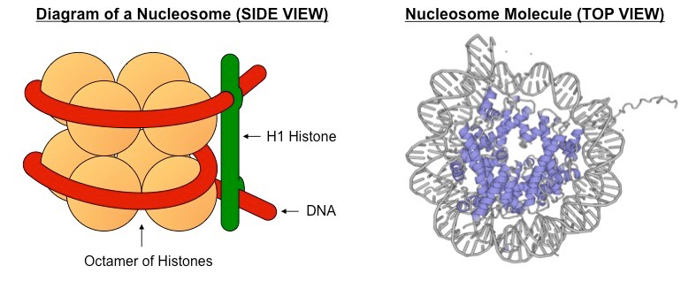

<!DOCTYPE html> <html><head>
		<title>AAA - Map of Bio HL</title>
		<base href="./">
		<meta id="root-path" root-path="./">
		<meta name="viewport" content="width=device-width, initial-scale=1.0, user-scalable=yes, minimum-scale=1.0, maximum-scale=5.0">
		<meta charset="UTF-8">
		<meta name="description" content="Bio HL Notes - AAA - Map of Bio HL">
		<meta property="og:title" content="AAA - Map of Bio HL">
		<meta property="og:description" content="Bio HL Notes - AAA - Map of Bio HL">
		<meta property="og:type" content="website">
		<meta property="og:url" content="aaa-map-of-bio-hl.html">
		<meta property="og:image" content="files-and-refferences\pasted-image-20240303210845.png">
		<meta property="og:site_name" content="Bio HL Notes">
		<link rel="alternate" type="application/rss+xml" title="RSS Feed" href="lib/rss.xml"><script async="" id="webpage-script" src="lib/scripts/webpage.js" onload="this.onload=null;this.setAttribute(&quot;loaded&quot;, &quot;true&quot;)"></script><script type="module" async="" id="graph-view-script" src="lib/scripts/graph-view.js"></script><script async="" id="graph-wasm-script" src="lib/scripts/graph-wasm.js" onload="this.onload=null;this.setAttribute(&quot;loaded&quot;, &quot;true&quot;)"></script><script async="" id="graph-render-worker-script" src="lib/scripts/graph-render-worker.js" onload="this.onload=null;this.setAttribute(&quot;loaded&quot;, &quot;true&quot;)"></script><script async="" id="tinycolor-script" src="lib/scripts/tinycolor.js" onload="this.onload=null;this.setAttribute(&quot;loaded&quot;, &quot;true&quot;)"></script><script async="" id="pixi-script" src="lib/scripts/pixi.js" onload="this.onload=null;this.setAttribute(&quot;loaded&quot;, &quot;true&quot;)"></script><script async="" id="minisearch-script" src="lib/scripts/minisearch.js" onload="this.onload=null;this.setAttribute(&quot;loaded&quot;, &quot;true&quot;)"></script><link rel="icon" href="lib/media/favicon.png"><script async="" id="graph-data-script" src="lib/scripts/graph-data.js" onload="this.onload=null;this.setAttribute(&quot;loaded&quot;, &quot;true&quot;)"></script><style>body{--line-width:40em;--line-width-adaptive:40em;--file-line-width:40em;--sidebar-width:min(20em, 80vw);--collapse-arrow-size:11px;--tree-horizontal-spacing:0.6em;--tree-vertical-spacing:0.6em;--sidebar-margin:12px}.sidebar{height:100%;min-width:calc(var(--sidebar-width) + var(--divider-width-hover));max-width:calc(var(--sidebar-width) + var(--divider-width-hover));font-size:14px;z-index:10;position:relative;overflow:hidden;transition:min-width ease-in-out,max-width ease-in-out;transition-duration:.2s;contain:size}.sidebar-left{left:0}.sidebar-right{right:0}.sidebar.is-collapsed{min-width:0;max-width:0}body.floating-sidebars .sidebar{position:absolute}.sidebar-content{height:100%;min-width:calc(var(--sidebar-width) - var(--divider-width-hover));top:0;padding:var(--sidebar-margin);padding-top:4em;line-height:var(--line-height-tight);background-color:var(--background-secondary);transition:background-color,border-right,border-left,box-shadow;transition-duration:var(--color-fade-speed);transition-timing-function:ease-in-out;position:absolute;display:flex;flex-direction:column}.sidebar:not(.is-collapsed) .sidebar-content{min-width:calc(max(100%,var(--sidebar-width)) - 3px);max-width:calc(max(100%,var(--sidebar-width)) - 3px)}.sidebar-left .sidebar-content{left:0;border-top-right-radius:var(--radius-l);border-bottom-right-radius:var(--radius-l)}.sidebar-right .sidebar-content{right:0;border-top-left-radius:var(--radius-l);border-bottom-left-radius:var(--radius-l)}.sidebar:has(.sidebar-content:empty):has(.topbar-content:empty){display:none}.sidebar-topbar{height:2em;width:var(--sidebar-width);top:var(--sidebar-margin);padding-inline:var(--sidebar-margin);z-index:1;position:fixed;display:flex;align-items:center;transition:width ease-in-out;transition-duration:inherit}.sidebar.is-collapsed .sidebar-topbar{width:calc(2.3em + var(--sidebar-margin) * 2)}.sidebar .sidebar-topbar.is-collapsed{width:0}.sidebar-left .sidebar-topbar{left:0}.sidebar-right .sidebar-topbar{right:0}.topbar-content{overflow:hidden;overflow:clip;width:100%;height:100%;display:flex;align-items:center;transition:inherit}.sidebar.is-collapsed .topbar-content{width:0;transition:inherit}.clickable-icon.sidebar-collapse-icon{background-color:transparent;color:var(--icon-color-focused);padding:0!important;margin:0!important;height:100%!important;width:2.3em!important;margin-inline:0.14em!important;position:absolute}.sidebar-left .clickable-icon.sidebar-collapse-icon{transform:rotateY(180deg);right:var(--sidebar-margin)}.sidebar-right .clickable-icon.sidebar-collapse-icon{transform:rotateY(180deg);left:var(--sidebar-margin)}.clickable-icon.sidebar-collapse-icon svg.svg-icon{width:100%;height:100%}.sidebar-section-header{margin:0 0 1em 0;text-transform:uppercase;letter-spacing:.06em;font-weight:600}body{transition:background-color var(--color-fade-speed) ease-in-out}.webpage-container{display:flex;flex-direction:row;height:100%;width:100%;align-items:stretch;justify-content:center}.document-container{opacity:1;flex-basis:100%;max-width:100%;width:100%;height:100%;display:flex;flex-direction:column;align-items:center;transition:opacity .2s ease-in-out;contain:inline-size}.hide{opacity:0;transition:opacity .2s ease-in-out}.document-container>.markdown-preview-view{margin:var(--sidebar-margin);margin-bottom:0;width:100%;width:-webkit-fill-available;width:-moz-available;width:fill-available;background-color:var(--background-primary);transition:background-color var(--color-fade-speed) ease-in-out;border-top-right-radius:var(--window-radius,var(--radius-m));border-top-left-radius:var(--window-radius,var(--radius-m));overflow-x:hidden!important;overflow-y:auto!important;display:flex!important;flex-direction:column!important;align-items:center!important;contain:inline-size}.document-container>.markdown-preview-view>.markdown-preview-sizer{padding-bottom:80vh!important;width:100%!important;max-width:var(--line-width)!important;flex-basis:var(--line-width)!important;transition:background-color var(--color-fade-speed) ease-in-out;contain:inline-size}.markdown-rendered img:not([width]),.view-content img:not([width]){max-width:100%;outline:0}.document-container>.view-content.embed{display:flex;padding:1em;height:100%;width:100%;align-items:center;justify-content:center}.document-container>.view-content.embed>*{max-width:100%;max-height:100%;object-fit:contain}:has(> :is(.math,table)){overflow-x:auto!important}.document-container>.view-content{overflow-x:auto;contain:content;padding:0;margin:0;height:100%}.scroll-highlight{position:absolute;width:100%;height:100%;pointer-events:none;z-index:1000;background-color:hsla(var(--color-accent-hsl),.25);opacity:0;padding:1em;inset:50%;translate:-50% -50%;border-radius:var(--radius-s)}</style><script defer="">async function loadIncludes(){if("file:"!=location.protocol){let e=document.querySelectorAll("include");for(let t=0;t<e.length;t++){let o=e[t],l=o.getAttribute("src");try{const e=await fetch(l);if(!e.ok){console.log("Could not include file: "+l),o?.remove();continue}let t=await e.text(),n=document.createRange().createContextualFragment(t),i=Array.from(n.children);for(let e of i)e.classList.add("hide"),e.style.transition="opacity 0.5s ease-in-out",setTimeout((()=>{e.classList.remove("hide")}),10);o.before(n),o.remove(),console.log("Included file: "+l)}catch(e){o?.remove(),console.log("Could not include file: "+l,e);continue}}}else{if(document.querySelectorAll("include").length>0){var e=document.createElement("div");e.id="error",e.textContent="Web server exports must be hosted on an http / web server to be viewed correctly.",e.style.position="fixed",e.style.top="50%",e.style.left="50%",e.style.transform="translate(-50%, -50%)",e.style.fontSize="1.5em",e.style.fontWeight="bold",e.style.textAlign="center",document.body.appendChild(e),document.querySelector(".document-container")?.classList.remove("hide")}}}document.addEventListener("DOMContentLoaded",(()=>{loadIncludes()}));let isFileProtocol="file:"==location.protocol;function waitLoadScripts(e,t){let o=e.map((e=>document.getElementById(e+"-script"))),l=0;!function e(){let n=o[l];l++,n&&"true"!=n.getAttribute("loaded")||l<o.length&&e(),l<o.length?n.addEventListener("load",e):t()}()}</script><link rel="stylesheet" href="lib/styles/obsidian.css"><link rel="preload" href="lib/styles/other-plugins.css" as="style" onload="this.onload=null;this.rel='stylesheet'"><noscript><link rel="stylesheet" href="lib/styles/other-plugins.css"></noscript><link rel="stylesheet" href="lib/styles/theme.css"><link rel="preload" href="lib/styles/global-variable-styles.css" as="style" onload="this.onload=null;this.rel='stylesheet'"><noscript><link rel="stylesheet" href="lib/styles/global-variable-styles.css"></noscript><link rel="preload" href="lib/styles/main-styles.css" as="style" onload="this.onload=null;this.rel='stylesheet'"><noscript><link rel="stylesheet" href="lib/styles/main-styles.css"></noscript></head><body class="publish css-settings-manager theme-dark show-inline-title show-ribbon"><script defer="">let theme=localStorage.getItem("theme")||(window.matchMedia("(prefers-color-scheme: dark)").matches?"dark":"light");"dark"==theme?(document.body.classList.add("theme-dark"),document.body.classList.remove("theme-light")):(document.body.classList.add("theme-light"),document.body.classList.remove("theme-dark")),window.innerWidth<480?document.body.classList.add("is-phone"):window.innerWidth<768?document.body.classList.add("is-tablet"):window.innerWidth<1024?document.body.classList.add("is-small-screen"):document.body.classList.add("is-large-screen")</script><div class="webpage-container workspace"><div class="sidebar-left sidebar"><div class="sidebar-handle"></div><div class="sidebar-topbar"><div class="topbar-content"></div><div class="clickable-icon sidebar-collapse-icon"><svg xmlns="http://www.w3.org/2000/svg" width="100%" height="100%" viewBox="0 0 24 24" fill="none" stroke="currentColor" stroke-width="3" stroke-linecap="round" stroke-linejoin="round" class="svg-icon"><path d="M21 3H3C1.89543 3 1 3.89543 1 5V19C1 20.1046 1.89543 21 3 21H21C22.1046 21 23 20.1046 23 19V5C23 3.89543 22.1046 3 21 3Z"></path><path d="M10 4V20"></path><path d="M4 7H7"></path><path d="M4 10H7"></path><path d="M4 13H7"></path></svg></div></div><div class="sidebar-content"><div class="search-input-container"><input enterkeyhint="search" type="search" spellcheck="false" placeholder="Search..."><div class="search-input-clear-button" aria-label="Clear search"></div></div><include src="lib/html/file-tree.html"></include></div><script defer="">let ls = document.querySelector(".sidebar-left"); ls.classList.add("is-collapsed"); if (window.innerWidth > 768) ls.classList.remove("is-collapsed"); ls.style.setProperty("--sidebar-width", localStorage.getItem("sidebar-left-width"));</script></div><div class="document-container markdown-reading-view hide"><div class="view-content"><style id="MJX-CHTML-styles"></style><div class="canvas-wrapper node-insert-event" tabindex="-1" data-ignore-swipe="true" data-disable-font-size-relative-to-zoom="false" data-collapsible-groups-feature-enabled="true" data-collapsed-group-preview-on-drag="true" style="--zoom-multiplier: 1;"><svg class="canvas-background"><pattern id="63deca5b08b8732a" patternUnits="userSpaceOnUse" x="451" y="0" width="20" height="20"><circle cx="0.7" cy="0.7" r="0.7"></circle></pattern><rect x="0" y="0" width="100%" height="100%" fill="url(#63deca5b08b8732a)"></rect></svg><div class="canvas-card-menu" style="z-index: 84;"><div class="canvas-card-menu-button mod-draggable" aria-label="Drag to add card" data-tooltip-position="top"><svg xmlns="http://www.w3.org/2000/svg" width="24" height="24" viewBox="0 0 24 24" fill="none" stroke="currentColor" stroke-width="2" stroke-linecap="round" stroke-linejoin="round" class="svg-icon lucide-sticky-note"><path d="M16 3H5a2 2 0 0 0-2 2v14a2 2 0 0 0 2 2h14a2 2 0 0 0 2-2V8Z"></path><path d="M15 3v4a2 2 0 0 0 2 2h4"></path></svg></div><div class="canvas-card-menu-button mod-draggable" aria-label="Drag to add note from vault" data-tooltip-position="top"><svg xmlns="http://www.w3.org/2000/svg" width="24" height="24" viewBox="0 0 24 24" fill="none" stroke="currentColor" stroke-width="2" stroke-linecap="round" stroke-linejoin="round" class="svg-icon lucide-file-text"><path d="M15 2H6a2 2 0 0 0-2 2v16a2 2 0 0 0 2 2h12a2 2 0 0 0 2-2V7Z"></path><path d="M14 2v4a2 2 0 0 0 2 2h4"></path><path d="M10 9H8"></path><path d="M16 13H8"></path><path d="M16 17H8"></path></svg></div><div class="canvas-card-menu-button mod-draggable" aria-label="Drag to add media from vault" data-tooltip-position="top"><svg xmlns="http://www.w3.org/2000/svg" width="24" height="24" viewBox="0 0 24 24" fill="none" stroke="currentColor" stroke-width="2" stroke-linecap="round" stroke-linejoin="round" class="svg-icon lucide-file-image"><path d="M15 2H6a2 2 0 0 0-2 2v16a2 2 0 0 0 2 2h12a2 2 0 0 0 2-2V7Z"></path><path d="M14 2v4a2 2 0 0 0 2 2h4"></path><circle cx="10" cy="12" r="2"></circle><path d="m20 17-1.296-1.296a2.41 2.41 0 0 0-3.408 0L9 22"></path></svg></div><div id="create-group" class="canvas-card-menu-button mod-draggable" aria-label="Drag to add group" data-tooltip-position="top"><svg xmlns="http://www.w3.org/2000/svg" width="24" height="24" viewBox="0 0 24 24" fill="none" stroke="currentColor" stroke-width="2" stroke-linecap="round" stroke-linejoin="round" class="svg-icon lucide-group"><path d="M3 7V5c0-1.1.9-2 2-2h2"></path><path d="M17 3h2c1.1 0 2 .9 2 2v2"></path><path d="M21 17v2c0 1.1-.9 2-2 2h-2"></path><path d="M7 21H5c-1.1 0-2-.9-2-2v-2"></path><rect x="7" y="7" width="7" height="5" rx="1"></rect><rect x="10" y="12" width="7" height="5" rx="1"></rect></svg></div><div id="new-slide" class="canvas-card-menu-button mod-draggable" aria-label="Drag to add slide" data-tooltip-position="top"><svg xmlns="http://www.w3.org/2000/svg" width="24" height="24" viewBox="0 0 24 24" fill="none" stroke="currentColor" stroke-width="2" stroke-linecap="round" stroke-linejoin="round" class="svg-icon lucide-gallery-vertical"><path d="M3 2h18"></path><rect x="3" y="6" width="18" height="12" rx="2"></rect><path d="M3 22h18"></path></svg></div></div><div class="canvas-controls" style="z-index: 84;"><div class="canvas-control-group"><div class="canvas-control-item" aria-label="Canvas settings" data-tooltip-position="left"><svg xmlns="http://www.w3.org/2000/svg" width="24" height="24" viewBox="0 0 24 24" fill="none" stroke="currentColor" stroke-width="2" stroke-linecap="round" stroke-linejoin="round" class="svg-icon lucide-settings"><path d="M12.22 2h-.44a2 2 0 0 0-2 2v.18a2 2 0 0 1-1 1.73l-.43.25a2 2 0 0 1-2 0l-.15-.08a2 2 0 0 0-2.73.73l-.22.38a2 2 0 0 0 .73 2.73l.15.1a2 2 0 0 1 1 1.72v.51a2 2 0 0 1-1 1.74l-.15.09a2 2 0 0 0-.73 2.73l.22.38a2 2 0 0 0 2.73.73l.15-.08a2 2 0 0 1 2 0l.43.25a2 2 0 0 1 1 1.73V20a2 2 0 0 0 2 2h.44a2 2 0 0 0 2-2v-.18a2 2 0 0 1 1-1.73l.43-.25a2 2 0 0 1 2 0l.15.08a2 2 0 0 0 2.73-.73l.22-.39a2 2 0 0 0-.73-2.73l-.15-.08a2 2 0 0 1-1-1.74v-.5a2 2 0 0 1 1-1.74l.15-.09a2 2 0 0 0 .73-2.73l-.22-.38a2 2 0 0 0-2.73-.73l-.15.08a2 2 0 0 1-2 0l-.43-.25a2 2 0 0 1-1-1.73V4a2 2 0 0 0-2-2z"></path><circle cx="12" cy="12" r="3"></circle></svg></div><div id="disable-node-popup" class="canvas-control-item show-while-readonly" aria-label="Disable node popup" data-tooltip-position="left" data-toggled="false"><svg xmlns="http://www.w3.org/2000/svg" width="24" height="24" viewBox="0 0 24 24" fill="none" stroke="currentColor" stroke-width="2" stroke-linecap="round" stroke-linejoin="round" class="svg-icon lucide-arrow-up-right-from-circle"><path d="M22 12A10 10 0 1 1 12 2"></path><path d="M22 2 12 12"></path><path d="M16 2h6v6"></path></svg></div><div id="disable-zoom" class="canvas-control-item show-while-readonly" aria-label="Disable zoom" data-tooltip-position="left" data-toggled="false"><svg xmlns="http://www.w3.org/2000/svg" width="24" height="24" viewBox="0 0 24 24" fill="none" stroke="currentColor" stroke-width="2" stroke-linecap="round" stroke-linejoin="round" class="svg-icon lucide-zoom-in"><circle cx="11" cy="11" r="8"></circle><line x1="21" y1="21" x2="16.65" y2="16.65"></line><line x1="11" y1="8" x2="11" y2="14"></line><line x1="8" y1="11" x2="14" y2="11"></line></svg></div><div id="disable-pan" class="canvas-control-item show-while-readonly" aria-label="Disable pan" data-tooltip-position="left" data-toggled="false"><svg xmlns="http://www.w3.org/2000/svg" width="24" height="24" viewBox="0 0 24 24" fill="none" stroke="currentColor" stroke-width="2" stroke-linecap="round" stroke-linejoin="round" class="svg-icon lucide-move"><polyline points="5 9 2 12 5 15"></polyline><polyline points="9 5 12 2 15 5"></polyline><polyline points="15 19 12 22 9 19"></polyline><polyline points="19 9 22 12 19 15"></polyline><line x1="2" y1="12" x2="22" y2="12"></line><line x1="12" y1="2" x2="12" y2="22"></line></svg></div><div id="properties" class="canvas-control-item" aria-label="Properties" data-tooltip-position="left"><svg xmlns="http://www.w3.org/2000/svg" width="24" height="24" viewBox="0 0 24 24" fill="none" stroke="currentColor" stroke-width="2" stroke-linecap="round" stroke-linejoin="round" class="svg-icon lucide-settings-2"><path d="M20 7h-9"></path><path d="M14 17H5"></path><circle cx="17" cy="17" r="3"></circle><circle cx="7" cy="7" r="3"></circle></svg></div><div id="focus-mode-toggle" class="canvas-control-item" aria-label="Focus Mode" data-tooltip-position="left"><svg xmlns="http://www.w3.org/2000/svg" width="24" height="24" viewBox="0 0 24 24" fill="none" stroke="currentColor" stroke-width="2" stroke-linecap="round" stroke-linejoin="round" class="svg-icon lucide-focus"><circle cx="12" cy="12" r="3"></circle><path d="M3 7V5a2 2 0 0 1 2-2h2"></path><path d="M17 3h2a2 2 0 0 1 2 2v2"></path><path d="M21 17v2a2 2 0 0 1-2 2h-2"></path><path d="M7 21H5a2 2 0 0 1-2-2v-2"></path></svg></div></div><div class="canvas-control-group"><div class="canvas-control-item" aria-label="Zoom in" data-tooltip-position="left"><svg xmlns="http://www.w3.org/2000/svg" width="24" height="24" viewBox="0 0 24 24" fill="none" stroke="currentColor" stroke-width="2" stroke-linecap="round" stroke-linejoin="round" class="svg-icon lucide-plus"><path d="M5 12h14"></path><path d="M12 5v14"></path></svg></div><div class="canvas-control-item" aria-label="Reset zoom" data-tooltip-position="left"><svg xmlns="http://www.w3.org/2000/svg" width="24" height="24" viewBox="0 0 24 24" fill="none" stroke="currentColor" stroke-width="2" stroke-linecap="round" stroke-linejoin="round" class="svg-icon lucide-rotate-cw"><path d="M21 12a9 9 0 1 1-9-9c2.52 0 4.93 1 6.74 2.74L21 8"></path><path d="M21 3v5h-5"></path></svg></div><div class="canvas-control-item" aria-label="Zoom to fit
(Shift + 1)" data-tooltip-position="left"><svg xmlns="http://www.w3.org/2000/svg" width="24" height="24" viewBox="0 0 24 24" fill="none" stroke="currentColor" stroke-width="2" stroke-linecap="round" stroke-linejoin="round" class="svg-icon lucide-maximize"><path d="M8 3H5a2 2 0 0 0-2 2v3"></path><path d="M21 8V5a2 2 0 0 0-2-2h-3"></path><path d="M3 16v3a2 2 0 0 0 2 2h3"></path><path d="M16 21h3a2 2 0 0 0 2-2v-3"></path></svg></div><div class="canvas-control-item" aria-label="Zoom out" data-tooltip-position="left"><svg xmlns="http://www.w3.org/2000/svg" width="24" height="24" viewBox="0 0 24 24" fill="none" stroke="currentColor" stroke-width="2" stroke-linecap="round" stroke-linejoin="round" class="svg-icon lucide-minus"><path d="M5 12h14"></path></svg></div></div><div class="canvas-control-group"><div class="canvas-control-item is-disabled" aria-label="Undo" data-tooltip-position="left"><svg xmlns="http://www.w3.org/2000/svg" width="24" height="24" viewBox="0 0 24 24" fill="none" stroke="currentColor" stroke-width="2" stroke-linecap="round" stroke-linejoin="round" class="svg-icon lucide-undo-2"><path d="M9 14 4 9l5-5"></path><path d="M4 9h10.5a5.5 5.5 0 0 1 5.5 5.5a5.5 5.5 0 0 1-5.5 5.5H11"></path></svg></div><div class="canvas-control-item is-disabled" aria-label="Redo" data-tooltip-position="left"><svg xmlns="http://www.w3.org/2000/svg" width="24" height="24" viewBox="0 0 24 24" fill="none" stroke="currentColor" stroke-width="2" stroke-linecap="round" stroke-linejoin="round" class="svg-icon lucide-redo-2"><path d="m15 14 5-5-5-5"></path><path d="M20 9H9.5A5.5 5.5 0 0 0 4 14.5A5.5 5.5 0 0 0 9.5 20H13"></path></svg></div></div><div class="canvas-control-group"><div class="canvas-control-item" aria-label="Canvas help" data-tooltip-position="left"><svg xmlns="http://www.w3.org/2000/svg" width="24" height="24" viewBox="0 0 24 24" fill="none" stroke="currentColor" stroke-width="2" stroke-linecap="round" stroke-linejoin="round" class="svg-icon lucide-help-circle"><circle cx="12" cy="12" r="10"></circle><path d="M9.09 9a3 3 0 0 1 5.83 1c0 2-3 3-3 3"></path><path d="M12 17h.01"></path></svg></div></div></div><div class="canvas" style="transform: translate(451px, 0px) scale(1) translate(0px, 0px);"><svg class="canvas-edges"><g><path class="canvas-interaction-path" d="M-1540 245 L-1533 245 M-1533,245 C-1463,245 -1557,275 -1487,275"></path><path class="canvas-display-path" d="M-1540 245 L-1533 245 M-1533,245 C-1463,245 -1557,275 -1487,275"></path></g><g><path class="canvas-interaction-path" d="M-1970 -1090 L-1970 -1083 M-1970,-1083 C-1970,-1013 -1930,-1067 -1930,-997"></path><path class="canvas-display-path" d="M-1970 -1090 L-1970 -1083 M-1970,-1083 C-1970,-1013 -1930,-1067 -1930,-997"></path></g><g><path class="canvas-interaction-path" d="M-1589 -1450 L-1596 -1450 M-1596,-1450 C-1678.4151078383084,-1450 -1600.5848921616916,-1310 -1683,-1310"></path><path class="canvas-display-path" d="M-1589 -1450 L-1596 -1450 M-1596,-1450 C-1678.4151078383084,-1450 -1600.5848921616916,-1310 -1683,-1310"></path></g><g><path class="canvas-interaction-path" d="M-760 -1840 L-767 -1840 M-767,-1840 C-917,-1840 -752,-1450 -902,-1450"></path><path class="canvas-display-path" d="M-760 -1840 L-767 -1840 M-767,-1840 C-917,-1840 -752,-1450 -902,-1450"></path></g><g><path class="canvas-interaction-path" d="M400 -125 L407 -125 M407,-125 C477,-125 403,-125 473,-125"></path><path class="canvas-display-path" d="M400 -125 L407 -125 M407,-125 C477,-125 403,-125 473,-125"></path></g><g><path class="canvas-interaction-path" d="M1360 -125 L1367 -125 M1367,-125 C1517,-125 1283,-730 1433,-730"></path><path class="canvas-display-path" d="M1360 -125 L1367 -125 M1367,-125 C1517,-125 1283,-730 1433,-730"></path></g><g><path class="canvas-interaction-path" d="M1880 -530 L1880 -523 M1880,-523 C1880,-453 1880,-567 1880,-497"></path><path class="canvas-display-path" d="M1880 -530 L1880 -523 M1880,-523 C1880,-453 1880,-567 1880,-497"></path></g><g><path class="canvas-interaction-path" d="M1880 680 L1880 687 M1880,687 C1880,757 1880,633 1880,703"></path><path class="canvas-display-path" d="M1880 680 L1880 687 M1880,687 C1880,757 1880,633 1880,703"></path></g><g><path class="canvas-interaction-path" d="M6540 -352 L6533 -352 M6533,-352 C6383,-352 6577,8 6427,8"></path><path class="canvas-display-path" d="M6540 -352 L6533 -352 M6533,-352 C6383,-352 6577,8 6427,8"></path></g><g><path class="canvas-interaction-path" d="M5261 576.5 L5254 576.5 M5254,576.5 C5104,576.5 4830,361 4830,511"></path><path class="canvas-display-path" d="M5261 576.5 L5254 576.5 M5254,576.5 C5104,576.5 4830,361 4830,511"></path></g><g><path class="canvas-interaction-path" d="M5261 576.5 L5254 576.5 M5254,576.5 C5104,576.5 4744.5,380 4744.5,230"></path><path class="canvas-display-path" d="M5261 576.5 L5254 576.5 M5254,576.5 C5104,576.5 4744.5,380 4744.5,230"></path></g><g><path class="canvas-interaction-path" d="M5261 576.5 L5254 576.5 M5254,576.5 C5104,576.5 3980,171 3980,321"></path><path class="canvas-display-path" d="M5261 576.5 L5254 576.5 M5254,576.5 C5104,576.5 3980,171 3980,321"></path></g><g><path class="canvas-interaction-path" d="M6020 8 L6013 8 M6013,8 C5863,8 6058,576.5 5908,576.5"></path><path class="canvas-display-path" d="M6020 8 L6013 8 M6013,8 C5863,8 6058,576.5 5908,576.5"></path></g><g><path class="canvas-interaction-path" d="M6020 645.5 L6013 645.5 M6013,645.5 C5943,645.5 5978,576.5 5908,576.5"></path><path class="canvas-display-path" d="M6020 645.5 L6013 645.5 M6013,645.5 C5943,645.5 5978,576.5 5908,576.5"></path></g><g><path class="canvas-interaction-path" d="M6220 -1457 L6227 -1457 M6227,-1457 C6300.119764769863,-1457 6172.880235230137,-1312 6246,-1312"></path><path class="canvas-display-path" d="M6220 -1457 L6227 -1457 M6227,-1457 C6300.119764769863,-1457 6172.880235230137,-1312 6246,-1312"></path></g><g><path class="canvas-interaction-path" d="M3500 964 L3507 964 M3507,964 C3577,964 3463,875.5 3533,875.5"></path><path class="canvas-display-path" d="M3500 964 L3507 964 M3507,964 C3577,964 3463,875.5 3533,875.5"></path></g><g><path class="canvas-interaction-path" d="M3980 1423 L3980 1430 M3980,1430 C3980,1580 4185.5,1596 4185.5,1746"></path><path class="canvas-display-path" d="M3980 1423 L3980 1430 M3980,1430 C3980,1580 4185.5,1596 4185.5,1746"></path></g><g><path class="canvas-interaction-path" d="M4830 1663 L4830 1670 M4830,1670 C4830,1820 4185.5,1596 4185.5,1746"></path><path class="canvas-display-path" d="M4830 1663 L4830 1670 M4830,1670 C4830,1820 4185.5,1596 4185.5,1746"></path></g><g><path class="canvas-interaction-path" d="M5147 -1212 L5154 -1212 M5154,-1212 C5294.842110180159,-1212 5152.157889819841,-1457 5293,-1457"></path><path class="canvas-display-path" d="M5147 -1212 L5154 -1212 M5154,-1212 C5294.842110180159,-1212 5152.157889819841,-1457 5293,-1457"></path></g><g><path class="canvas-interaction-path" d="M1880 -7560 L1873 -7560 M1873,-7560 C1723,-7560 1857,-7015.5 1707,-7015.5"></path><path class="canvas-display-path" d="M1880 -7560 L1873 -7560 M1873,-7560 C1723,-7560 1857,-7015.5 1707,-7015.5"></path></g><g><path class="canvas-interaction-path" d="M1880 -4992.5 L1873 -4992.5 M1873,-4992.5 C1723,-4992.5 1857,-7015.5 1707,-7015.5"></path><path class="canvas-display-path" d="M1880 -4992.5 L1873 -4992.5 M1873,-4992.5 C1723,-4992.5 1857,-7015.5 1707,-7015.5"></path></g><g><path class="canvas-interaction-path" d="M1880 -4992.5 L1873 -4992.5 M1873,-4992.5 C1723,-4992.5 1857,-5840 1707,-5840"></path><path class="canvas-display-path" d="M1880 -4992.5 L1873 -4992.5 M1873,-4992.5 C1723,-4992.5 1857,-5840 1707,-5840"></path></g><g><path class="canvas-interaction-path" d="M2949 -4992.5 L2956 -4992.5 M2956,-4992.5 C3106,-4992.5 2923,-4251.5 3073,-4251.5"></path><path class="canvas-display-path" d="M2949 -4992.5 L2956 -4992.5 M2956,-4992.5 C3106,-4992.5 2923,-4251.5 3073,-4251.5"></path></g><g><path class="canvas-interaction-path" d="M3309 -6796 L3309 -6789 M3309,-6789 C3309,-6639 3106,-4992.5 2956,-4992.5"></path><path class="canvas-display-path" d="M3309 -6796 L3309 -6789 M3309,-6789 C3309,-6639 3106,-4992.5 2956,-4992.5"></path></g><g><path class="canvas-interaction-path" d="M2840 -7560 L2847 -7560 M2847,-7560 C2997,-7560 3309,-7281 3309,-7131"></path><path class="canvas-display-path" d="M2840 -7560 L2847 -7560 M2847,-7560 C2997,-7560 3309,-7281 3309,-7131"></path></g><g><path class="canvas-interaction-path" d="M4400 -4251.5 L4407 -4251.5 M4407,-4251.5 C4557,-4251.5 4283,-4807.5 4433,-4807.5"></path><path class="canvas-display-path" d="M4400 -4251.5 L4407 -4251.5 M4407,-4251.5 C4557,-4251.5 4283,-4807.5 4433,-4807.5"></path></g><g><path class="canvas-interaction-path" d="M5160 -4807.5 L5167 -4807.5 M5167,-4807.5 C5317,-4807.5 5163,-5300 5313,-5300"></path><path class="canvas-display-path" d="M5160 -4807.5 L5167 -4807.5 M5167,-4807.5 C5317,-4807.5 5163,-5300 5313,-5300"></path></g><g><path class="canvas-interaction-path" d="M12160 -5463 L12167 -5463 M12167,-5463 C12317,-5463 12123,-4403 12273,-4403"></path><path class="canvas-display-path" d="M12160 -5463 L12167 -5463 M12167,-5463 C12317,-5463 12123,-4403 12273,-4403"></path></g><g><path class="canvas-interaction-path" d="M12200 -4843 L12207 -4843 M12207,-4843 C12357,-4843 12123,-4403 12273,-4403"></path><path class="canvas-display-path" d="M12200 -4843 L12207 -4843 M12207,-4843 C12357,-4843 12123,-4403 12273,-4403"></path></g><g><path class="canvas-interaction-path" d="M12160 -5463 L12167 -5463 M12167,-5463 C12237,-5463 12203,-5455.5 12273,-5455.5"></path><path class="canvas-display-path" d="M12160 -5463 L12167 -5463 M12167,-5463 C12237,-5463 12203,-5455.5 12273,-5455.5"></path></g><g><path class="canvas-interaction-path" d="M11860 -5303 L11860 -5296 M11860,-5296 C11860,-5220.309842119335 11820,-5225.690157880665 11820,-5150"></path><path class="canvas-display-path" d="M11860 -5303 L11860 -5296 M11860,-5296 C11860,-5220.309842119335 11820,-5225.690157880665 11820,-5150"></path></g><g><path class="canvas-interaction-path" d="M11560 -5463 L11553 -5463 M11553,-5463 C11403,-5463 11597,-5763 11447,-5763"></path><path class="canvas-display-path" d="M11560 -5463 L11553 -5463 M11553,-5463 C11403,-5463 11597,-5763 11447,-5763"></path></g><g><path class="canvas-interaction-path" d="M11860 -5623 L11860 -5630 M11860,-5630 C11860,-5700 11962.5,-5626 11962.5,-5696"></path><path class="canvas-display-path" d="M11860 -5623 L11860 -5630 M11860,-5630 C11860,-5700 11962.5,-5626 11962.5,-5696"></path></g><g><path class="canvas-interaction-path" d="M11820 -4543 L11820 -4536 M11820,-4536 C11820,-4466 11805,-4540 11805,-4470"></path><path class="canvas-display-path" d="M11820 -4543 L11820 -4536 M11820,-4536 C11820,-4466 11805,-4540 11805,-4470"></path></g><g><path class="canvas-interaction-path" d="M11054 -6223 L11054 -6230 M11054,-6230 C11054,-6300 11093.5,-6256 11093.5,-6326"></path><path class="canvas-display-path" d="M11054 -6223 L11054 -6230 M11054,-6230 C11054,-6300 11093.5,-6256 11093.5,-6326"></path></g><g><path class="canvas-interaction-path" d="M11054 -5303 L11054 -5296 M11054,-5296 C11054,-5226 11025.5,-5300 11025.5,-5230"></path><path class="canvas-display-path" d="M11054 -5303 L11054 -5296 M11054,-5296 C11054,-5226 11025.5,-5300 11025.5,-5230"></path></g><g><path class="canvas-interaction-path" d="M12205 -6043 L12212 -6043 M12212,-6043 C12362,-6043 12295,-6433 12445,-6433"></path><path class="canvas-display-path" d="M12205 -6043 L12212 -6043 M12212,-6043 C12362,-6043 12295,-6433 12445,-6433"></path></g><g><path class="canvas-interaction-path" d="M11962.5 -6383 L11962.5 -6390 M11962.5,-6390 C11962.5,-6540 11993.5,-6546 11993.5,-6696"></path><path class="canvas-display-path" d="M11962.5 -6383 L11962.5 -6390 M11962.5,-6390 C11962.5,-6540 11993.5,-6546 11993.5,-6696"></path></g><g><path class="canvas-interaction-path" d="M11093.5 -6533 L11093.5 -6540 M11093.5,-6540 C11093.5,-6610 11093.5,-6525 11093.5,-6595"></path><path class="canvas-display-path" d="M11093.5 -6533 L11093.5 -6540 M11093.5,-6540 C11093.5,-6610 11093.5,-6525 11093.5,-6595"></path></g><g><path class="canvas-interaction-path" d="M11093.5 -8023 L11093.5 -8030 M11093.5,-8030 C11093.5,-8180 10763,-8745 10613,-8745"></path><path class="canvas-display-path" d="M11093.5 -8023 L11093.5 -8030 M11093.5,-8030 C11093.5,-8180 10763,-8745 10613,-8745"></path></g><g><path class="canvas-interaction-path" d="M9811 -8339.5 L9804 -8339.5 M9804,-8339.5 C9654,-8339.5 9329,-8180 9329,-8030"></path><path class="canvas-display-path" d="M9811 -8339.5 L9804 -8339.5 M9804,-8339.5 C9654,-8339.5 9329,-8180 9329,-8030"></path></g><g><path class="canvas-interaction-path" d="M10180 -8075 L10180 -8068 M10180,-8068 C10180,-7998 10159,-8100 10159,-8030"></path><path class="canvas-display-path" d="M10180 -8075 L10180 -8068 M10180,-8068 C10180,-7998 10159,-8100 10159,-8030"></path></g><g><path class="canvas-interaction-path" d="M10180.5 -8665 L10180.5 -8658 M10180.5,-8658 C10180.5,-8588 10180,-8681 10180,-8611"></path><path class="canvas-display-path" d="M10180.5 -8665 L10180.5 -8658 M10180.5,-8658 C10180.5,-8588 10180,-8681 10180,-8611"></path></g><g><path class="canvas-interaction-path" d="M9329 -7027 L9329 -7020 M9329,-7020 C9329,-6950 9329,-7060 9329,-6990"></path><path class="canvas-display-path" d="M9329 -7027 L9329 -7020 M9329,-7020 C9329,-6950 9329,-7060 9329,-6990"></path></g><g><path class="canvas-interaction-path" d="M9329 -5943 L9329 -5936 M9329,-5936 C9329,-5866 9329,-5982 9329,-5912"></path><path class="canvas-display-path" d="M9329 -5943 L9329 -5936 M9329,-5936 C9329,-5866 9329,-5982 9329,-5912"></path></g><g><path class="canvas-interaction-path" d="M9329 -5421 L9329 -5414 M9329,-5414 C9329,-5269.0411696377205 9505.5,-5328.9588303622795 9505.5,-5184"></path><path class="canvas-display-path" d="M9329 -5421 L9329 -5414 M9329,-5414 C9329,-5269.0411696377205 9505.5,-5328.9588303622795 9505.5,-5184"></path></g><g><path class="canvas-interaction-path" d="M10159 -5583 L10159 -5576 M10159,-5576 C10159,-5426 9505.5,-5334 9505.5,-5184"></path><path class="canvas-display-path" d="M10159 -5583 L10159 -5576 M10159,-5576 C10159,-5426 9505.5,-5334 9505.5,-5184"></path></g><g><path class="canvas-interaction-path" d="M10159 -5583 L10159 -5576 M10159,-5576 C10159,-5461.386246462303 10279.5,-5495.613753537697 10279.5,-5381"></path><path class="canvas-display-path" d="M10159 -5583 L10159 -5576 M10159,-5576 C10159,-5461.386246462303 10279.5,-5495.613753537697 10279.5,-5381"></path></g><g><path class="canvas-interaction-path" d="M8156 -6209 L8163 -6209 M8163,-6209 C8313,-6209 8063,-5904.5 8213,-5904.5 M8213 -5904.5 L8220 -5904.5"></path><path class="canvas-display-path" d="M8156 -6209 L8163 -6209 M8163,-6209 C8313,-6209 8063,-5904.5 8213,-5904.5 M8213 -5904.5 L8220 -5904.5"></path></g><g><path class="canvas-interaction-path" d="M7340 -6209 L7333 -6209 M7333,-6209 C7183,-6209 7398,-5834 7248,-5834 M7248 -5834 L7241 -5834"></path><path class="canvas-display-path" d="M7340 -6209 L7333 -6209 M7333,-6209 C7183,-6209 7398,-5834 7248,-5834 M7248 -5834 L7241 -5834"></path></g><g><path class="canvas-interaction-path" d="M7748 -5905 L7748 -5912 M7748,-5912 C7748,-5982 7748,-5907 7748,-5977 M7748 -5977 L7748 -5984"></path><path class="canvas-display-path" d="M7748 -5905 L7748 -5912 M7748,-5912 C7748,-5982 7748,-5907 7748,-5977 M7748 -5977 L7748 -5984"></path></g><g><path class="canvas-interaction-path" d="M8220 -5904.5 L8213 -5904.5 M8213,-5904.5 C8063,-5904.5 8313,-5053.5 8163,-5053.5 M8163 -5053.5 L8156 -5053.5"></path><path class="canvas-display-path" d="M8220 -5904.5 L8213 -5904.5 M8213,-5904.5 C8063,-5904.5 8313,-5053.5 8163,-5053.5 M8163 -5053.5 L8156 -5053.5"></path></g><g><path class="canvas-interaction-path" d="M7241 -5834 L7248 -5834 M7248,-5834 C7398,-5834 7183,-5053.5 7333,-5053.5 M7333 -5053.5 L7340 -5053.5"></path><path class="canvas-display-path" d="M7241 -5834 L7248 -5834 M7248,-5834 C7398,-5834 7183,-5053.5 7333,-5053.5 M7333 -5053.5 L7340 -5053.5"></path></g><g><path class="canvas-interaction-path" d="M9664 -970 L9664 -963 M9664,-963 C9664,-893 9664.5,-967 9664.5,-897"></path><path class="canvas-display-path" d="M9664 -970 L9664 -963 M9664,-963 C9664,-893 9664.5,-967 9664.5,-897"></path></g><g><path class="canvas-interaction-path" d="M9182 -2516 L9189 -2516 M9189,-2516 C9339,-2516 9185,-1830 9335,-1830"></path><path class="canvas-display-path" d="M9182 -2516 L9189 -2516 M9189,-2516 C9339,-2516 9185,-1830 9335,-1830"></path></g><g><path class="canvas-interaction-path" d="M8982 -2342 L8982 -2335 M8982,-2335 C8982,-2262.4672487768457 8842,-2369.5327512231543 8842,-2297"></path><path class="canvas-display-path" d="M8982 -2342 L8982 -2335 M8982,-2335 C8982,-2262.4672487768457 8842,-2369.5327512231543 8842,-2297"></path></g><g><path class="canvas-interaction-path" d="M8842 -1216 L8842 -1209 M8842,-1209 C8842,-1139 8807.5,-1207 8807.5,-1137"></path><path class="canvas-display-path" d="M8842 -1216 L8842 -1209 M8842,-1209 C8842,-1139 8807.5,-1207 8807.5,-1137"></path></g><g><path class="canvas-interaction-path" d="M8382 70 L8375 70 M8375,70 C8225,70 8417,-881 8267,-881"></path><path class="canvas-display-path" d="M8382 70 L8375 70 M8375,70 C8225,70 8417,-881 8267,-881"></path></g><g><path class="canvas-interaction-path" d="M10576 -1193 L10576 -1186 M10576,-1186 C10576,-1116 10576,-1207 10576,-1137"></path><path class="canvas-display-path" d="M10576 -1193 L10576 -1186 M10576,-1186 C10576,-1116 10576,-1207 10576,-1137"></path></g><g><path class="canvas-interaction-path" d="M10650.5 -1688 L10650.5 -1681 M10650.5,-1681 C10650.5,-1611 10576,-1687 10576,-1617"></path><path class="canvas-display-path" d="M10650.5 -1688 L10650.5 -1681 M10650.5,-1681 C10650.5,-1611 10576,-1687 10576,-1617"></path></g><g><path class="canvas-interaction-path" d="M10955 -801 L10962 -801 M10962,-801 C11032.586825966324,-801 10970.413174033676,-918 11041,-918"></path><path class="canvas-display-path" d="M10955 -801 L10962 -801 M10962,-801 C11032.586825966324,-801 10970.413174033676,-918 11041,-918"></path></g><g><path class="canvas-interaction-path" d="M12528 -1865.5 L12521 -1865.5 M12521,-1865.5 C12415.779992396883,-1865.5 12567.220007603117,-2067.5 12462,-2067.5"></path><path class="canvas-display-path" d="M12528 -1865.5 L12521 -1865.5 M12521,-1865.5 C12415.779992396883,-1865.5 12567.220007603117,-2067.5 12462,-2067.5"></path></g><g><path class="canvas-interaction-path" d="M12831.5 -2330 L12831.5 -2337 M12831.5,-2337 C12831.5,-2407 12831.5,-2308 12831.5,-2378"></path><path class="canvas-display-path" d="M12831.5 -2330 L12831.5 -2337 M12831.5,-2337 C12831.5,-2407 12831.5,-2308 12831.5,-2378"></path></g></svg><svg class="canvas-edges"><g><g style="transform: translate(-1480px, 275px) rotate(90deg);"><polygon class="canvas-path-end" points="0,0 6.5,10.4 -6.5,10.4"></polygon></g></g><g><g style="transform: translate(-1930px, -990px) rotate(180deg);"><polygon class="canvas-path-end" points="0,0 6.5,10.4 -6.5,10.4"></polygon></g></g><g><g style="transform: translate(-1690px, -1310px) rotate(270deg);"><polygon class="canvas-path-end" points="0,0 6.5,10.4 -6.5,10.4"></polygon></g></g><g><g style="transform: translate(-909px, -1450px) rotate(270deg);"><polygon class="canvas-path-end" points="0,0 6.5,10.4 -6.5,10.4"></polygon></g></g><g><g style="transform: translate(480px, -125px) rotate(90deg);"><polygon class="canvas-path-end" points="0,0 6.5,10.4 -6.5,10.4"></polygon></g></g><g><g style="transform: translate(1440px, -730px) rotate(90deg);"><polygon class="canvas-path-end" points="0,0 6.5,10.4 -6.5,10.4"></polygon></g></g><g><g style="transform: translate(1880px, -490px) rotate(180deg);"><polygon class="canvas-path-end" points="0,0 6.5,10.4 -6.5,10.4"></polygon></g></g><g><g style="transform: translate(1880px, 710px) rotate(180deg);"><polygon class="canvas-path-end" points="0,0 6.5,10.4 -6.5,10.4"></polygon></g></g><g><g style="transform: translate(6420px, 8px) rotate(270deg);"><polygon class="canvas-path-end" points="0,0 6.5,10.4 -6.5,10.4"></polygon></g></g><g><g style="transform: translate(4830px, 518px) rotate(180deg);"><polygon class="canvas-path-end" points="0,0 6.5,10.4 -6.5,10.4"></polygon></g></g><g><g style="transform: translate(4744.5px, 223px) rotate(0deg);"><polygon class="canvas-path-end" points="0,0 6.5,10.4 -6.5,10.4"></polygon></g></g><g><g style="transform: translate(3980px, 328px) rotate(180deg);"><polygon class="canvas-path-end" points="0,0 6.5,10.4 -6.5,10.4"></polygon></g></g><g><g style="transform: translate(5901px, 576.5px) rotate(270deg);"><polygon class="canvas-path-end" points="0,0 6.5,10.4 -6.5,10.4"></polygon></g></g><g><g style="transform: translate(5901px, 576.5px) rotate(270deg);"><polygon class="canvas-path-end" points="0,0 6.5,10.4 -6.5,10.4"></polygon></g></g><g><g style="transform: translate(6253px, -1312px) rotate(90deg);"><polygon class="canvas-path-end" points="0,0 6.5,10.4 -6.5,10.4"></polygon></g></g><g><g style="transform: translate(3540px, 875.5px) rotate(90deg);"><polygon class="canvas-path-end" points="0,0 6.5,10.4 -6.5,10.4"></polygon></g></g><g><g style="transform: translate(4185.5px, 1753px) rotate(180deg);"><polygon class="canvas-path-end" points="0,0 6.5,10.4 -6.5,10.4"></polygon></g></g><g><g style="transform: translate(4185.5px, 1753px) rotate(180deg);"><polygon class="canvas-path-end" points="0,0 6.5,10.4 -6.5,10.4"></polygon></g></g><g><g style="transform: translate(5300px, -1457px) rotate(90deg);"><polygon class="canvas-path-end" points="0,0 6.5,10.4 -6.5,10.4"></polygon></g></g><g><g style="transform: translate(1700px, -7015.5px) rotate(270deg);"><polygon class="canvas-path-end" points="0,0 6.5,10.4 -6.5,10.4"></polygon></g></g><g><g style="transform: translate(1700px, -7015.5px) rotate(270deg);"><polygon class="canvas-path-end" points="0,0 6.5,10.4 -6.5,10.4"></polygon></g></g><g><g style="transform: translate(1700px, -5840px) rotate(270deg);"><polygon class="canvas-path-end" points="0,0 6.5,10.4 -6.5,10.4"></polygon></g></g><g><g style="transform: translate(3080px, -4251.5px) rotate(90deg);"><polygon class="canvas-path-end" points="0,0 6.5,10.4 -6.5,10.4"></polygon></g></g><g><g style="transform: translate(2949px, -4992.5px) rotate(270deg);"><polygon class="canvas-path-end" points="0,0 6.5,10.4 -6.5,10.4"></polygon></g></g><g><g style="transform: translate(3309px, -7124px) rotate(180deg);"><polygon class="canvas-path-end" points="0,0 6.5,10.4 -6.5,10.4"></polygon></g></g><g><g style="transform: translate(4440px, -4807.5px) rotate(90deg);"><polygon class="canvas-path-end" points="0,0 6.5,10.4 -6.5,10.4"></polygon></g></g><g><g style="transform: translate(5320px, -5300px) rotate(90deg);"><polygon class="canvas-path-end" points="0,0 6.5,10.4 -6.5,10.4"></polygon></g></g><g><g style="transform: translate(12280px, -4403px) rotate(90deg);"><polygon class="canvas-path-end" points="0,0 6.5,10.4 -6.5,10.4"></polygon></g></g><g><g style="transform: translate(12280px, -4403px) rotate(90deg);"><polygon class="canvas-path-end" points="0,0 6.5,10.4 -6.5,10.4"></polygon></g></g><g><g style="transform: translate(12280px, -5455.5px) rotate(90deg);"><polygon class="canvas-path-end" points="0,0 6.5,10.4 -6.5,10.4"></polygon></g></g><g><g style="transform: translate(11820px, -5143px) rotate(180deg);"><polygon class="canvas-path-end" points="0,0 6.5,10.4 -6.5,10.4"></polygon></g></g><g><g style="transform: translate(11440px, -5763px) rotate(270deg);"><polygon class="canvas-path-end" points="0,0 6.5,10.4 -6.5,10.4"></polygon></g></g><g><g style="transform: translate(11962.5px, -5703px) rotate(0deg);"><polygon class="canvas-path-end" points="0,0 6.5,10.4 -6.5,10.4"></polygon></g></g><g><g style="transform: translate(11805px, -4463px) rotate(180deg);"><polygon class="canvas-path-end" points="0,0 6.5,10.4 -6.5,10.4"></polygon></g></g><g><g style="transform: translate(11093.5px, -6333px) rotate(0deg);"><polygon class="canvas-path-end" points="0,0 6.5,10.4 -6.5,10.4"></polygon></g></g><g><g style="transform: translate(11025.5px, -5223px) rotate(180deg);"><polygon class="canvas-path-end" points="0,0 6.5,10.4 -6.5,10.4"></polygon></g></g><g><g style="transform: translate(12452px, -6433px) rotate(90deg);"><polygon class="canvas-path-end" points="0,0 6.5,10.4 -6.5,10.4"></polygon></g></g><g><g style="transform: translate(11993.5px, -6703px) rotate(0deg);"><polygon class="canvas-path-end" points="0,0 6.5,10.4 -6.5,10.4"></polygon></g></g><g><g style="transform: translate(11093.5px, -6602px) rotate(0deg);"><polygon class="canvas-path-end" points="0,0 6.5,10.4 -6.5,10.4"></polygon></g></g><g><g style="transform: translate(10606px, -8745px) rotate(270deg);"><polygon class="canvas-path-end" points="0,0 6.5,10.4 -6.5,10.4"></polygon></g></g><g><g style="transform: translate(9329px, -8023px) rotate(180deg);"><polygon class="canvas-path-end" points="0,0 6.5,10.4 -6.5,10.4"></polygon></g></g><g><g style="transform: translate(10159px, -8023px) rotate(180deg);"><polygon class="canvas-path-end" points="0,0 6.5,10.4 -6.5,10.4"></polygon></g></g><g><g style="transform: translate(10180px, -8604px) rotate(180deg);"><polygon class="canvas-path-end" points="0,0 6.5,10.4 -6.5,10.4"></polygon></g></g><g><g style="transform: translate(9329px, -6983px) rotate(180deg);"><polygon class="canvas-path-end" points="0,0 6.5,10.4 -6.5,10.4"></polygon></g></g><g><g style="transform: translate(9329px, -5905px) rotate(180deg);"><polygon class="canvas-path-end" points="0,0 6.5,10.4 -6.5,10.4"></polygon></g></g><g><g style="transform: translate(9505.5px, -5177px) rotate(180deg);"><polygon class="canvas-path-end" points="0,0 6.5,10.4 -6.5,10.4"></polygon></g></g><g><g style="transform: translate(9505.5px, -5177px) rotate(180deg);"><polygon class="canvas-path-end" points="0,0 6.5,10.4 -6.5,10.4"></polygon></g></g><g><g style="transform: translate(10279.5px, -5374px) rotate(180deg);"><polygon class="canvas-path-end" points="0,0 6.5,10.4 -6.5,10.4"></polygon></g></g><g></g><g></g><g></g><g></g><g></g><g><g style="transform: translate(9664.5px, -890px) rotate(180deg);"><polygon class="canvas-path-end" points="0,0 6.5,10.4 -6.5,10.4"></polygon></g></g><g><g style="transform: translate(9342px, -1830px) rotate(90deg);"><polygon class="canvas-path-end" points="0,0 6.5,10.4 -6.5,10.4"></polygon></g></g><g><g style="transform: translate(8842px, -2290px) rotate(180deg);"><polygon class="canvas-path-end" points="0,0 6.5,10.4 -6.5,10.4"></polygon></g></g><g><g style="transform: translate(8807.5px, -1130px) rotate(180deg);"><polygon class="canvas-path-end" points="0,0 6.5,10.4 -6.5,10.4"></polygon></g></g><g><g style="transform: translate(8260px, -881px) rotate(270deg);"><polygon class="canvas-path-end" points="0,0 6.5,10.4 -6.5,10.4"></polygon></g></g><g><g style="transform: translate(10576px, -1130px) rotate(180deg);"><polygon class="canvas-path-end" points="0,0 6.5,10.4 -6.5,10.4"></polygon></g></g><g><g style="transform: translate(10576px, -1610px) rotate(180deg);"><polygon class="canvas-path-end" points="0,0 6.5,10.4 -6.5,10.4"></polygon></g></g><g><g style="transform: translate(11048px, -918px) rotate(90deg);"><polygon class="canvas-path-end" points="0,0 6.5,10.4 -6.5,10.4"></polygon></g></g><g><g style="transform: translate(12455px, -2067.5px) rotate(270deg);"><polygon class="canvas-path-end" points="0,0 6.5,10.4 -6.5,10.4"></polygon></g></g><g><g style="transform: translate(12831.5px, -2385px) rotate(0deg);"><polygon class="canvas-path-end" points="0,0 6.5,10.4 -6.5,10.4"></polygon></g></g></svg><div class="canvas-node canvas-node-group is-themed mod-canvas-color-2" style="z-index: -46390400; transform: translate(-1460px, -8987px); width: 7600px; height: 6104px; --canvas-node-width: 7600px; --canvas-node-height: 6104px;"><div class="canvas-node-container"><div class="canvas-node-content"></div></div><div class="canvas-group-label mod-foreground-dark" spellcheck="false">Unit 1</div><span id="group-collapse-button"><svg xmlns="http://www.w3.org/2000/svg" width="24" height="24" viewBox="0 0 24 24" fill="none" stroke="currentColor" stroke-width="2" stroke-linecap="round" stroke-linejoin="round" class="svg-icon lucide-minus-circle"><circle cx="12" cy="12" r="10"></circle><path d="M8 12h8"></path></svg></span></div><div class="canvas-node canvas-node-group is-themed mod-canvas-color-5" style="z-index: -40750270; transform: translate(6320px, -8845px); width: 6835px; height: 5962px; --canvas-node-width: 6835px; --canvas-node-height: 5962px;"><div class="canvas-node-container"><div class="canvas-node-content"></div></div><div class="canvas-group-label mod-foreground-dark" spellcheck="false">Unit 4</div><span id="group-collapse-button"><svg xmlns="http://www.w3.org/2000/svg" width="24" height="24" viewBox="0 0 24 24" fill="none" stroke="currentColor" stroke-width="2" stroke-linecap="round" stroke-linejoin="round" class="svg-icon lucide-minus-circle"><circle cx="12" cy="12" r="10"></circle><path d="M8 12h8"></path></svg></span></div><div class="canvas-node canvas-node-group is-themed mod-canvas-color-3" style="z-index: -25239055; transform: translate(2560px, -2710px); width: 4985px; height: 5063px; --canvas-node-width: 4985px; --canvas-node-height: 5063px;"><div class="canvas-node-container"><div class="canvas-node-content"></div></div><div class="canvas-group-label mod-foreground-dark" spellcheck="false">Unit 2</div><span id="group-collapse-button"><svg xmlns="http://www.w3.org/2000/svg" width="24" height="24" viewBox="0 0 24 24" fill="none" stroke="currentColor" stroke-width="2" stroke-linecap="round" stroke-linejoin="round" class="svg-icon lucide-minus-circle"><circle cx="12" cy="12" r="10"></circle><path d="M8 12h8"></path></svg></span></div><div class="canvas-node canvas-node-group is-themed mod-canvas-color-4" style="z-index: -20815200; transform: translate(-2380px, -2710px); width: 4720px; height: 4410px; --canvas-node-width: 4720px; --canvas-node-height: 4410px;"><div class="canvas-node-container"><div class="canvas-node-content"></div></div><div class="canvas-group-label mod-foreground-light" spellcheck="false">Unit 3</div><span id="group-collapse-button"><svg xmlns="http://www.w3.org/2000/svg" width="24" height="24" viewBox="0 0 24 24" fill="none" stroke="currentColor" stroke-width="2" stroke-linecap="round" stroke-linejoin="round" class="svg-icon lucide-minus-circle"><circle cx="12" cy="12" r="10"></circle><path d="M8 12h8"></path></svg></span></div><div class="canvas-node canvas-node-group is-themed mod-canvas-color-custom" style="z-index: -9556000; transform: translate(7680px, -2710px); width: 2389px; height: 4000px; --canvas-node-width: 2389px; --canvas-node-height: 4000px; --canvas-color: 245,36,36;"><div class="canvas-node-container"><div class="canvas-node-content"></div></div><div class="canvas-group-label mod-foreground-light" spellcheck="false">Unit 5</div><span id="group-collapse-button"><svg xmlns="http://www.w3.org/2000/svg" width="24" height="24" viewBox="0 0 24 24" fill="none" stroke="currentColor" stroke-width="2" stroke-linecap="round" stroke-linejoin="round" class="svg-icon lucide-minus-circle"><circle cx="12" cy="12" r="10"></circle><path d="M8 12h8"></path></svg></span></div><div class="canvas-node canvas-node-group is-themed mod-canvas-color-6" style="z-index: -6724324; transform: translate(10177px, -2710px); width: 2978px; height: 2258px; --canvas-node-width: 2978px; --canvas-node-height: 2258px;"><div class="canvas-node-container"><div class="canvas-node-content"></div></div><div class="canvas-group-label mod-foreground-dark" spellcheck="false">Unit 6</div><span id="group-collapse-button"><svg xmlns="http://www.w3.org/2000/svg" width="24" height="24" viewBox="0 0 24 24" fill="none" stroke="currentColor" stroke-width="2" stroke-linecap="round" stroke-linejoin="round" class="svg-icon lucide-minus-circle"><circle cx="12" cy="12" r="10"></circle><path d="M8 12h8"></path></svg></span></div><div class="canvas-node canvas-node-group" style="z-index: -4083200; transform: translate(-1440px, -5120px); width: 2320px; height: 1760px; --canvas-node-width: 2320px; --canvas-node-height: 1760px;"><div class="canvas-node-container"><div class="canvas-node-content"></div></div><div class="canvas-group-label" spellcheck="false">Unit 1/Organelles and Features of Cells</div><span id="group-collapse-button"><svg xmlns="http://www.w3.org/2000/svg" width="24" height="24" viewBox="0 0 24 24" fill="none" stroke="currentColor" stroke-width="2" stroke-linecap="round" stroke-linejoin="round" class="svg-icon lucide-minus-circle"><circle cx="12" cy="12" r="10"></circle><path d="M8 12h8"></path></svg></span></div><div class="canvas-node" style="z-index: 2; transform: translate(4440px, -5935px); width: 720px; height: 2255px; --canvas-node-width: 720px; --canvas-node-height: 2255px;"><div class="canvas-node-container"><div class="canvas-node-content markdown-embed is-loaded"><div class="markdown-embed-content node-insert-event"><div class="markdown-preview-view markdown-rendered"><div class="markdown-preview-sizer markdown-preview-section"><div class="mod-header mod-ui"></div><div class="el-p"><p dir="auto">Particles move across membranes by simple diffusion, osmosis, facilitated diffusion and active transport.</p></div><div class="el-h1 heading-wrapper"><h1 data-heading="Simple Diffusion and Osmosis" dir="auto" class="heading" id="Simple_Diffusion_and_Osmosis">Simple Diffusion and Osmosis</h1><div class="heading-children"><div class="el-p"><p dir="auto">In simple diffusion, some particles simply make their way though the gaps between the phospholipids in the membrane. </p></div><div class="el-p"><p dir="auto"><span alt="Pasted image 20240303210845.png" src="Pasted image 20240303210845.png" class="internal-embed media-embed image-embed is-loaded"></span></p></div><div class="el-h2 heading-wrapper"><h2 data-heading="Aquaporins" dir="auto" class="heading" id="Aquaporins"><div class="heading-collapse-indicator collapse-indicator collapse-icon"><svg xmlns="http://www.w3.org/2000/svg" width="24" height="24" viewBox="0 0 24 24" fill="none" stroke="currentColor" stroke-width="2" stroke-linecap="round" stroke-linejoin="round" class="svg-icon right-triangle"><path d="M3 8L12 17L21 8"></path></svg></div>Aquaporins</h2><div class="heading-children"><div class="el-p"><p dir="auto">An aquaporin, also called a water channel, is a transmembrane protein that allows the passage of water molecules through the cell membrane (osmosis). They are not present in all cell membranes.</p></div></div></div></div></div><div class="el-h1 heading-wrapper"><h1 data-heading="Facilitated Diffusion" dir="auto" class="heading" id="Facilitated_Diffusion">Facilitated Diffusion</h1><div class="heading-children"><div class="el-p"><p dir="auto">Channels are made between a single protein molecule or between a group of proteins filter and let through specific particles by limiting the size, shape and charge of said particles.</p></div><div class="el-p"><p dir="auto"><span alt="Pasted image 20240303211159.png" src="Pasted image 20240303211159.png" class="internal-embed media-embed image-embed is-loaded"></span></p></div></div></div><div class="el-h1 heading-wrapper"><h1 data-heading="Active transport" dir="auto" class="heading" id="Active_transport">Active transport</h1><div class="heading-children"><div class="el-p"><p dir="auto">Transporting molecules cross membranes, against the concentration gradient, using pump proteins. This requires the <a data-tooltip-position="top" aria-label="Oxidation and Reduction Reactions" data-href="Oxidation and Reduction Reactions" href="definitions/oxidation-and-reduction-reactions.html" class="internal-link" target="_self" rel="noopener nofollow">oxidation</a> of ATP to ADP.</p></div><div class="el-p"><p dir="auto"><span alt="Pasted image 20240303211254.png" src="Pasted image 20240303211254.png" class="internal-embed media-embed image-embed is-loaded" style="width: 300px; max-width: 100%;"></span></p></div></div></div></div></div></div><div class="markdown-embed-content node-insert-event" style="display: none;"></div></div><div class="canvas-node-content-blocker"></div></div><div class="canvas-node-label">Membrane Transport</div></div><div class="canvas-node" style="z-index: 3; transform: translate(3080px, -5720px); width: 1320px; height: 2937px; --canvas-node-width: 1320px; --canvas-node-height: 2937px;"><div class="canvas-node-container"><div class="canvas-node-content markdown-embed is-loaded"><div class="markdown-embed-content node-insert-event"><div class="markdown-preview-view markdown-rendered"><div class="markdown-preview-sizer markdown-preview-section"><div class="mod-header mod-ui"></div><div class="el-h1 heading-wrapper"><h1 data-heading="The Structure of Membranes" dir="auto" class="heading" id="The_Structure_of_Membranes">The Structure of Membranes</h1><div class="heading-children"><div class="el-h2 heading-wrapper"><h2 data-heading="Phospholipids" dir="auto" class="heading" id="Phospholipids"><div class="heading-collapse-indicator collapse-indicator collapse-icon"><svg xmlns="http://www.w3.org/2000/svg" width="24" height="24" viewBox="0 0 24 24" fill="none" stroke="currentColor" stroke-width="2" stroke-linecap="round" stroke-linejoin="round" class="svg-icon right-triangle"><path d="M3 8L12 17L21 8"></path></svg></div>Phospholipids</h2><div class="heading-children"><div class="el-p"><p dir="auto">Cell membranes, or plasma membranes are made up of phospholipids, arranged in a phospholipid bilayer.</p></div><div class="el-p"><p dir="auto"><span alt="Pasted image 20240303193953.png" src="Pasted image 20240303193953.png" class="internal-embed media-embed image-embed is-loaded"></span></p></div><div class="el-p"><p dir="auto">Phospholipids are made of a phosphate head attached to two <a data-tooltip-position="top" aria-label="Fatty acids" data-href="Fatty acids" href="unit-2/fatty-acids.html" class="internal-link" target="_self" rel="noopener nofollow">fatty acid</a> tails, one of which is unsaturated. The head is hydrophilic (water-loving), whereas the tails are hydrophobic.</p></div><div class="el-p"><p dir="auto">When phospholipids are mixed with water they become arranged in double layers, with the heads facing outwards and the tails inwards. This arrangement, called a phospholipid bilayer, is the basis of the membranes of cells. </p></div><div class="el-p"><p dir="auto"><span alt="Pasted image 20240303194253.png" src="Pasted image 20240303194253.png" class="internal-embed media-embed image-embed is-loaded"></span></p></div><div class="el-p"><p dir="auto">Phospholipids and other amphipathic (hydrophilic and hydrophobic) lipids naturally form continuous sheet like bilayers in water.</p></div><div class="el-p"><p dir="auto">Hydrophobic hydrocarbon chains that form the core of a membrane have low permeability to large molecules and hydrophilic particles, including ions and polar molecules, so membranes function as effective barriers between aqueous solutions.</p></div></div></div><div class="el-h2 heading-wrapper"><h2 data-heading="Other elements of a Cell Membrane" dir="auto" class="heading" id="Other_elements_of_a_Cell_Membrane"><div class="heading-collapse-indicator collapse-indicator collapse-icon"><svg xmlns="http://www.w3.org/2000/svg" width="24" height="24" viewBox="0 0 24 24" fill="none" stroke="currentColor" stroke-width="2" stroke-linecap="round" stroke-linejoin="round" class="svg-icon right-triangle"><path d="M3 8L12 17L21 8"></path></svg></div>Other elements of a Cell Membrane</h2><div class="heading-children"><div class="el-h3 heading-wrapper"><h3 data-heading="Proteins" dir="auto" class="heading" id="Proteins"><div class="heading-collapse-indicator collapse-indicator collapse-icon"><svg xmlns="http://www.w3.org/2000/svg" width="24" height="24" viewBox="0 0 24 24" fill="none" stroke="currentColor" stroke-width="2" stroke-linecap="round" stroke-linejoin="round" class="svg-icon right-triangle"><path d="M3 8L12 17L21 8"></path></svg></div>Proteins</h3><div class="heading-children"><div class="el-p"><p dir="auto">Cell membranes also have proteins, some of these are embedded, called integral proteins. Others are attached to the surface, called peripheral proteins.</p></div></div></div><div class="el-h3 heading-wrapper"><h3 data-heading="Glycolipids and Glycoproteins" dir="auto" class="heading" id="Glycolipids_and_Glycoproteins"><div class="heading-collapse-indicator collapse-indicator collapse-icon"><svg xmlns="http://www.w3.org/2000/svg" width="24" height="24" viewBox="0 0 24 24" fill="none" stroke="currentColor" stroke-width="2" stroke-linecap="round" stroke-linejoin="round" class="svg-icon right-triangle"><path d="M3 8L12 17L21 8"></path></svg></div>Glycolipids and Glycoproteins</h3><div class="heading-children"><div class="el-p"><p dir="auto">When sugar or carbohydrate are linked to the lipids in the lipid bilayer, it is called a glycolipid. </p></div><div class="el-p"><p dir="auto">When sugar or carbohydrates are linked to a membrane protein, it is called a glycoprotein. </p></div><div class="el-p"><p dir="auto">Both have roles in cell adhesion and cell recognition. </p></div></div></div><div class="el-h3 heading-wrapper"><h3 data-heading="Cholesterol" dir="auto" class="heading" id="Cholesterol"><div class="heading-collapse-indicator collapse-indicator collapse-icon"><svg xmlns="http://www.w3.org/2000/svg" width="24" height="24" viewBox="0 0 24 24" fill="none" stroke="currentColor" stroke-width="2" stroke-linecap="round" stroke-linejoin="round" class="svg-icon right-triangle"><path d="M3 8L12 17L21 8"></path></svg></div>Cholesterol</h3><div class="heading-children"><div class="el-p"><p dir="auto"><span alt="Pasted image 20240303194944.png" src="Pasted image 20240303194944.png" class="internal-embed media-embed image-embed is-loaded" style="width: 300px; max-width: 100%;"></span><br>
Only animal cell plasma membranes contain cholesterol. Cholesterol molecules in membranes reduce membrane fluidity and therefore permeability to small water-soluble molecules. Without cholesterol (such as in a bacterium) a cell would need a cell wall. </p></div></div></div></div></div></div></div><div class="el-h1 heading-wrapper"><h1 data-heading="Fluidity of Cell Membranes" dir="auto" class="heading" id="Fluidity_of_Cell_Membranes">Fluidity of Cell Membranes</h1><div class="heading-children"><div class="el-p"><p dir="auto"><span alt="Pasted image 20240303195019.png" src="Pasted image 20240303195019.png" class="internal-embed media-embed image-embed is-loaded"></span></p></div><div class="el-p"><p dir="auto">Cell membranes are a fluid structure, constantly rearranging and shifting around its molecules. This allows for water and small molecules dissolved in water to pass through the membrane.</p></div><div class="el-p"><p dir="auto">One of the tails of phospholipids is unsaturated as it allows for the phospholipids to space themselves out, promoting fluidity. </p></div><div class="el-p"><p dir="auto">Cholesterol regulates fluidity of the membrane. At high temperatures, cholesterol's flat, rigid structure limits phospholipid movement. </p></div><div class="el-p"><p dir="auto">At low temperatures, however, cholesterol has the opposite effect: By&nbsp;interfering with interactions between fatty acid chains, cholesterol prevents membranes from freezing and maintains membrane fluidity.</p></div></div></div></div></div></div><div class="markdown-embed-content node-insert-event" style="display: none;"></div></div><div class="canvas-node-content-blocker"></div></div><div class="canvas-node-label">Cell Membranes</div></div><div class="canvas-node" style="z-index: 4; transform: translate(-480px, -4345px); width: 620px; height: 250px; --canvas-node-width: 620px; --canvas-node-height: 250px;"><div class="canvas-node-container"><div class="canvas-node-content markdown-embed is-loaded" data-type="heading"><div class="markdown-embed-content node-insert-event"><div class="markdown-preview-view markdown-rendered"><div class="markdown-preview-sizer markdown-preview-section"><div class="mod-header mod-ui"></div><div class="el-p"><p dir="auto">Molecular machines that produce proteins from amino acids during protein synthesis. There are 2 common sizes 70S and 80S. <em>(S = Svedberg units, a measure of the size of organelles)</em> They appear in prokaryotes and eukaryotes respectively.</p></div></div></div></div><div class="markdown-embed-content node-insert-event" style="display: none;"></div></div><div class="canvas-node-content-blocker"></div></div><div class="canvas-node-label">Organelles and Features of Cells  Ribosomes</div></div><div class="canvas-node" style="z-index: 5; transform: translate(1880px, -6160px); width: 1069px; height: 2335px; --canvas-node-width: 1069px; --canvas-node-height: 2335px;"><div class="canvas-node-container"><div class="canvas-node-content markdown-embed is-loaded"><div class="markdown-embed-content node-insert-event"><div class="markdown-preview-view markdown-rendered"><div class="markdown-preview-sizer markdown-preview-section"><div class="mod-header mod-ui"></div><div class="el-p"><p dir="auto">Eukaryotes are like eu and I, cells with smaller organelles within them.</p></div><div class="el-h1 heading-wrapper"><h1 data-heading="Prokaryotes vs Eukaryotes" dir="auto" class="heading" id="Prokaryotes_vs_Eukaryotes">Prokaryotes vs Eukaryotes</h1><div class="heading-children"><div class="el-p"><p dir="auto">Eukaryotic cells have a much more complicated <strong><em>compartmentalized</em></strong> internal structure than prokaryotic cells. They have a <strong>nucleus</strong> and <strong>organelles</strong> in the cytoplasm with single or double membranes. Each organelle has a distinctive structure and function.</p></div><div class="el-table" dir="ltr" style="overflow-x: auto;"><table>
<thead>
<tr>
<th dir="ltr">FEATURE</th>
<th dir="ltr">PROKARYOTES</th>
<th dir="ltr">EUKARYOTES</th>
</tr>
</thead>
<tbody>
<tr>
<td dir="ltr"><strong>Type of genetic material</strong></td>
<td dir="ltr">A naked loop of DNA</td>
<td dir="ltr">Chromosomes consisting of strands of DNA associated with histone proteins. Four or more chromosomes</td>
</tr>
<tr>
<td dir="ltr"><strong>Main location of genetic material</strong></td>
<td dir="ltr">In the cytoplasm in a region called the nucleoid (no membrane)</td>
<td dir="ltr">In the nucleus inside a double nuclear membrane</td>
</tr>
<tr>
<td dir="ltr"><strong>Mitochondria</strong></td>
<td dir="ltr">Not present. Cell surface membrane folded into mesosomes where respiration occurs</td>
<td dir="ltr">Always present</td>
</tr>
<tr>
<td dir="ltr"><strong>Ribosomes</strong></td>
<td dir="ltr">Small sized. 70S  <br>(S = svedburg units, a measure of the size of organelles)</td>
<td dir="ltr">Larger sized. 80S</td>
</tr>
<tr>
<td dir="ltr"><strong>Organelles bound by a single membrane</strong></td>
<td dir="ltr">Few or none are present</td>
<td dir="ltr">Many are present including endoplasmic reticulum, Golgi apparatus and lysosomes. Function of organelles is compartmentalized.</td>
</tr>
</tbody>
</table></div></div></div><div class="el-h1 heading-wrapper"><h1 data-heading="Plant, Fungi and Animal Cells" dir="auto" class="heading" id="Plant,_Fungi_and_Animal_Cells">Plant, Fungi and Animal Cells</h1><div class="heading-children"><div class="el-p"><p dir="auto">All 3 are eukaryotic, fungi is somewhat an outlier.</p></div><div class="el-table" dir="ltr" style="overflow-x: auto;"><table>
<thead>
<tr>
<th dir="ltr">ANIMALS</th>
<th dir="ltr">FUNGI</th>
<th dir="ltr">PLANTS</th>
</tr>
</thead>
<tbody>
<tr>
<td dir="ltr"><strong>CELL WALL</strong></td>
<td dir="auto">--------------------------</td>
<td dir="auto">---------------------</td>
</tr>
<tr>
<td dir="ltr">No cell wall, only the plasma membrane. <br><br>Solids can only be taken in by vesicle formation, but excess water may enter by osmosis, unless solute concentrations are the same inside and outside the cell.</td>
<td dir="ltr">Fungi have a rigid cell wall&nbsp;composed of complex polysaccharides such as&nbsp;chitin, glucans, and glycoproteins. <br><br>In some adult organisms, the cell wall provides structural support, rigidity, and protection from aridity and prey, which means it can be extremely tough.</td>
<td dir="ltr">Plant cells have a cellulose cell wall. The cellulose is strong maintaining a plant cell in a fixed shape unless the cell is actively growing.<br>  <br>The cell wall makes it impossible to take in solids such as food, but supports the cell and prevents excess water entering by osmosis.</td>
</tr>
<tr>
<td dir="ltr"><strong>VACUOLE</strong></td>
<td dir="auto">--------------------------</td>
<td dir="auto">---------------------</td>
</tr>
<tr>
<td dir="ltr">Small temporary vacuoles are sometimes found. This is dependent on the metabolic requirements of the cell.  <br>Lack of a large vacuole reduces the mass of the cell and makes movement easier, so animals have much greater range of locomotion methods e.g. flying.</td>
<td dir="ltr">Fungal cells have a large permanent vacuole, it is often the largest organelle in fungi. The vacuole participates in a wide range of processes and play a key role in the regulation of cellular homeostasis.</td>
<td dir="ltr">Plant cells often have a large permanent vacuole, which contains a solution of mineral ions such as potassium and other solutes. It is bound by a vacuole membrane.  <br><br>The vacuole can expand quickly by absorbing mineral ions and water and therefore allows rapid growth of plant cells.</td>
</tr>
<tr>
<td dir="ltr"><strong>CHLOROPLASTS</strong></td>
<td dir="auto">--------------------------</td>
<td dir="auto">---------------------</td>
</tr>
<tr>
<td dir="ltr">Animal cells never contain chloroplasts unless they have taken in algal cells that have them, as in the cells of some corals. Also, animal cells do not synthesize or store starch Animal cells must absorb food made by other organisms. They can either take in undigested solids, or organic compounds that have been digested.</td>
<td dir="ltr">Fungal cells do not contain chloroplasts or photosynthetic pigments. Fungi are heterotrophs and absorb food made by other organisms. They are saprotrophic; feeding on dead or decaying matter.</td>
<td dir="ltr">Many plant cells in stems and leaves have chloroplasts in their cytoplasm. These are green in color because of the chlorophyll that they contain, and they can also store starch.<br><br>Chloroplasts make food for the cell from simple inorganic molecules absorbed from the environment.</td>
</tr>
</tbody>
</table></div></div></div></div></div></div><div class="markdown-embed-content node-insert-event" style="display: none;"></div></div><div class="canvas-node-content-blocker"></div></div><div class="canvas-node-label">Eukaryotes</div></div><div class="canvas-node" style="z-index: 6; transform: translate(5320px, -5840px); width: 800px; height: 1080px; --canvas-node-width: 800px; --canvas-node-height: 1080px;"><div class="canvas-node-container"><div class="canvas-node-content markdown-embed is-loaded"><div class="markdown-embed-content node-insert-event"><div class="markdown-preview-view markdown-rendered"><div class="markdown-preview-sizer markdown-preview-section"><div class="mod-header mod-ui"></div><div class="el-p"><p dir="auto">A vesicle is a small sac of membrane with a droplet of fluid inside. Vesicles are usually spherical and are present in most eukaryotic cells. They form from larger pieces of membrane. To form a vesicle, a small region of a membrane is pulled from the rest of the membrane and is pinched off. Proteins in the membrane carry out this process using energy from ATP. </p></div><div class="el-p"><p dir="auto">Vesicles move materials within cells.</p></div><div class="el-p"><p dir="auto">The fluidity of membranes also allows them to break or reform during endocytosis and exocytosis.</p></div><div class="el-h1 heading-wrapper"><h1 data-heading="Exo and Endocytosis :" dir="auto" class="heading" id="Exo_and_Endocytosis_:">Exo and Endocytosis :</h1><div class="heading-children"><div class="el-p"><p dir="auto"><span alt="Pasted image 20240303211724.png" src="Pasted image 20240303211724.png" class="internal-embed media-embed image-embed is-loaded"></span></p></div></div></div></div></div></div><div class="markdown-embed-content node-insert-event" style="display: none;"></div></div><div class="canvas-node-content-blocker"></div></div><div class="canvas-node-label">Endo and Exocytosis</div></div><div class="canvas-node" style="z-index: 7; transform: translate(-480px, -4000px); width: 560px; height: 360px; --canvas-node-width: 560px; --canvas-node-height: 360px;"><div class="canvas-node-container"><div class="canvas-node-content markdown-embed is-loaded" data-type="heading"><div class="markdown-embed-content node-insert-event"><div class="markdown-preview-view markdown-rendered"><div class="markdown-preview-sizer markdown-preview-section"><div class="mod-header mod-ui"></div><div class="el-p"><p dir="auto">Its main function is the packaging and secretion of proteins. It receives proteins from Endoplasmic Reticulum. It packages it into membrane-bound vesicles, which are then transported to various destinations, such as lysosomes, plasma membrane or secretion. They also take part in the transport of lipids and the formation of lysosomes.</p></div></div></div></div><div class="markdown-embed-content node-insert-event" style="display: none;"></div></div><div class="canvas-node-content-blocker"></div></div><div class="canvas-node-label">Organelles and Features of Cells  Golgi apparatus</div></div><div class="canvas-node" style="z-index: 8; transform: translate(200px, -4240px); width: 620px; height: 800px; --canvas-node-width: 620px; --canvas-node-height: 800px;"><div class="canvas-node-container"><div class="canvas-node-content markdown-embed is-loaded" data-type="heading"><div class="markdown-embed-content node-insert-event"><div class="markdown-preview-view markdown-rendered"><div class="markdown-preview-sizer markdown-preview-section"><div class="mod-header mod-ui"></div><div class="el-p"><span style="display: block; margin-block-start: var(--p-spacing); margin-block-end: var(--p-spacing);"> <span alt="Chloroplasts" src="Chloroplasts" class="internal-embed markdown-embed inline-embed is-loaded"><div class="embed-title markdown-embed-title">Chloroplasts</div><div class="markdown-embed-content node-insert-event"><div class="markdown-preview-view markdown-rendered node-insert-event show-indentation-guide allow-fold-headings allow-fold-lists"><div class="markdown-preview-sizer markdown-preview-section" style="padding-bottom: 0px; min-height: 547px;"><div class="markdown-preview-pusher" style="width: 1px; height: 0.1px; margin-bottom: 0px;"></div><div class="mod-header mod-ui"><div class="inline-title" contenteditable="true" spellcheck="true" autocapitalize="on" tabindex="-1" enterkeyhint="done">Chloroplasts</div></div><div class="el-p"><p dir="auto">An organelle present in plant cells responsible for photosynthesis, thus powering the cell.</p></div><div class="el-h1 heading-wrapper"><h1 data-heading="Form" dir="auto" class="heading" id="Form">Form</h1><div class="heading-children"><div class="el-p"><p dir="auto"><span alt="Structure of Chloroplasts.png" src="Structure of Chloroplasts.png" class="internal-embed media-embed image-embed is-loaded" style="width: 500px; max-width: 100%;"></span></p></div><div class="el-p"><p dir="auto">Chloroplasts are surrounded by a double membrane, and are filled with many smaller membrane "pods" to maximize surface area. Chloroplast are usually green, and thus responsible for the color of plant cells.</p></div></div></div></div></div></div><div class="markdown-embed-content node-insert-event" style="display: none;"></div><div class="markdown-embed-link" aria-label="Open link"><svg xmlns="http://www.w3.org/2000/svg" width="24" height="24" viewBox="0 0 24 24" fill="none" stroke="currentColor" stroke-width="2" stroke-linecap="round" stroke-linejoin="round" class="svg-icon lucide-link"><path d="M10 13a5 5 0 0 0 7.54.54l3-3a5 5 0 0 0-7.07-7.07l-1.72 1.71"></path><path d="M14 11a5 5 0 0 0-7.54-.54l-3 3a5 5 0 0 0 7.07 7.07l1.71-1.71"></path></svg></div></span></span></div></div></div></div><div class="markdown-embed-content node-insert-event" style="display: none;"></div></div><div class="canvas-node-content-blocker"></div></div><div class="canvas-node-label">Organelles and Features of Cells  Chloroplasts</div></div><div class="canvas-node" style="z-index: 9; transform: translate(-200px, -5061px); width: 455px; height: 280px; --canvas-node-width: 455px; --canvas-node-height: 280px;"><div class="canvas-node-container"><div class="canvas-node-content markdown-embed is-loaded" data-type="heading"><div class="markdown-embed-content node-insert-event"><div class="markdown-preview-view markdown-rendered"><div class="markdown-preview-sizer markdown-preview-section"><div class="mod-header mod-ui"></div><div class="el-p"><p dir="auto">Also known as the phospholipid bilayer is a membrane surrounding all cells, made of phospholipids. This is a complex topic, more can be read <a data-tooltip-position="top" aria-label="" rel="noopener nofollow" class="external-link" href="" target="_blank">here</a>.</p></div></div></div></div><div class="markdown-embed-content node-insert-event" style="display: none;"></div></div><div class="canvas-node-content-blocker"></div></div><div class="canvas-node-label">Organelles and Features of Cells  Plasma membrane</div></div><div class="canvas-node" style="z-index: 10; transform: translate(300px, -4800px); width: 520px; height: 168px; --canvas-node-width: 520px; --canvas-node-height: 168px;"><div class="canvas-node-container"><div class="canvas-node-content markdown-embed is-loaded" data-type="heading"><div class="markdown-embed-content node-insert-event"><div class="markdown-preview-view markdown-rendered"><div class="markdown-preview-sizer markdown-preview-section"><div class="mod-header mod-ui"></div><div class="el-p"><p dir="auto">A free-flowing strand of DNA in a loop, not contained. </p></div></div></div></div><div class="markdown-embed-content node-insert-event" style="display: none;"></div></div><div class="canvas-node-content-blocker"></div></div><div class="canvas-node-label">Organelles and Features of Cells  Naked DNA</div></div><div class="canvas-node" style="z-index: 11; transform: translate(300px, -5061px); width: 520px; height: 221px; --canvas-node-width: 520px; --canvas-node-height: 221px;"><div class="canvas-node-container"><div class="canvas-node-content markdown-embed is-loaded" data-type="heading"><div class="markdown-embed-content node-insert-event"><div class="markdown-preview-view markdown-rendered"><div class="markdown-preview-sizer markdown-preview-section"><div class="mod-header mod-ui"></div><div class="el-p"><p dir="auto">A compartment with a double membrane, which contains chromosomes, made of DNA bound to histones contained in a double membrane with pores.</p></div></div></div></div><div class="markdown-embed-content node-insert-event" style="display: none;"></div></div><div class="canvas-node-content-blocker"></div></div><div class="canvas-node-label">Organelles and Features of Cells  Nucleus</div></div><div class="canvas-node" style="z-index: 12; transform: translate(5300px, -2647px); width: 920px; height: 2380px; --canvas-node-width: 920px; --canvas-node-height: 2380px;"><div class="canvas-node-container"><div class="canvas-node-content markdown-embed is-loaded"><div class="markdown-embed-content node-insert-event"><div class="markdown-preview-view markdown-rendered"><div class="markdown-preview-sizer markdown-preview-section"><div class="mod-header mod-ui"></div><div class="el-p"><p dir="auto">Enzymes are a type of protein that are natural catalysts. Catalysts are molecules that increase the rate of reaction between two other molecules without being altered themselves. </p></div><div class="el-h1 heading-wrapper"><h1 data-heading="Enzyme function" dir="auto" class="heading" id="Enzyme_function">Enzyme function</h1><div class="heading-children"><div class="el-p"><p dir="auto">An enzyme functions by allowing for one of the substrates involved in a reaction to bond with the active site of an enzyme, thus reducing weakening the rest of the substrate's bonds and lowering the activation energy required for the second substrate to react with the first.</p></div></div></div><div class="el-h1 heading-wrapper"><h1 data-heading="Enzyme - Substrate specificity" dir="auto" class="heading" id="Enzyme_-_Substrate_specificity">Enzyme - Substrate specificity</h1><div class="heading-children"><div class="el-p"><p dir="auto">Different enzymes can only bond with to different, specific sets of substrates, this is known as enzyme-substrate specificity. The form of an enzyme is such that it can only bond with the substrate. The enzyme can, however, mold around a substrate somewhat. Much like a glove stretches and molds around a hand, so can an enzyme.</p></div><div class="el-p"><p dir="auto"><span alt="Induced-Fit Model.png" src="Induced-Fit Model.png" class="internal-embed media-embed image-embed is-loaded"></span></p></div></div></div><div class="el-h1 heading-wrapper"><h1 data-heading="Factors Effecting the Efficiency of Enzymes" dir="auto" class="heading" id="Factors_Effecting_the_Efficiency_of_Enzymes">Factors Effecting the Efficiency of Enzymes</h1><div class="heading-children"><div class="el-p"><p dir="auto"><span alt="Efficiency Of Enzymes Factors.png" src="Efficiency Of Enzymes Factors.png" class="internal-embed media-embed image-embed is-loaded"></span></p></div><div class="el-h2 heading-wrapper"><h2 data-heading="pH" dir="auto" class="heading" id="pH"><div class="heading-collapse-indicator collapse-indicator collapse-icon"><svg xmlns="http://www.w3.org/2000/svg" width="24" height="24" viewBox="0 0 24 24" fill="none" stroke="currentColor" stroke-width="2" stroke-linecap="round" stroke-linejoin="round" class="svg-icon right-triangle"><path d="M3 8L12 17L21 8"></path></svg></div>pH</h2><div class="heading-children"><div class="el-p"><p dir="auto">As enzymes are proteins, if the pH of it's environment is too low or too high, they will begin to denature, thus losing effectiveness</p></div></div></div><div class="el-h2 heading-wrapper"><h2 data-heading="Temperature" dir="auto" class="heading" id="Temperature"><div class="heading-collapse-indicator collapse-indicator collapse-icon"><svg xmlns="http://www.w3.org/2000/svg" width="24" height="24" viewBox="0 0 24 24" fill="none" stroke="currentColor" stroke-width="2" stroke-linecap="round" stroke-linejoin="round" class="svg-icon right-triangle"><path d="M3 8L12 17L21 8"></path></svg></div>Temperature</h2><div class="heading-children"><div class="el-p"><p dir="auto">Similarly to pH, if the temperature in the environment of an enzyme is too high, it will begin to denature. However, low temperatures do not denature the enzyme, only reduce the number and strength of collisions in the substance, and thus the likelihood of a collision with enough kinetic energy to match the activation energy of the reaction.</p></div></div></div><div class="el-h2 heading-wrapper"><h2 data-heading="Substrate concentration" dir="auto" class="heading" id="Substrate_concentration"><div class="heading-collapse-indicator collapse-indicator collapse-icon"><svg xmlns="http://www.w3.org/2000/svg" width="24" height="24" viewBox="0 0 24 24" fill="none" stroke="currentColor" stroke-width="2" stroke-linecap="round" stroke-linejoin="round" class="svg-icon right-triangle"><path d="M3 8L12 17L21 8"></path></svg></div>Substrate concentration</h2><div class="heading-children"><div class="el-p"><p dir="auto">Simply put, a higher substrate concentration means a greater chance there is a substrate in each enzyme, however, given a high enough concentration, all enzymes in the solution will be occupied, thus further increase in concentration would have no effect.</p></div></div></div></div></div><div class="el-h1 heading-wrapper"><h1 data-heading="Enzyme Inhibition" dir="auto" class="heading" id="Enzyme_Inhibition">Enzyme Inhibition</h1><div class="heading-children"><div class="el-p"><p dir="auto">Enzyme inhibition refers to when an molecule (inhibitor) interacts with an enzyme in order to stall it's function.</p></div><div class="el-h2 heading-wrapper"><h2 data-heading="Competitive inhibition" dir="auto" class="heading" id="Competitive_inhibition"><div class="heading-collapse-indicator collapse-indicator collapse-icon"><svg xmlns="http://www.w3.org/2000/svg" width="24" height="24" viewBox="0 0 24 24" fill="none" stroke="currentColor" stroke-width="2" stroke-linecap="round" stroke-linejoin="round" class="svg-icon right-triangle"><path d="M3 8L12 17L21 8"></path></svg></div>Competitive inhibition</h2><div class="heading-children"><div class="el-p"><p dir="auto">Competitive inhibitors are molecules that have the right form and charge to bond with the active site of an enzyme, however, do not react with the substrate, thus blocking the correct substrate from bonding with the active site. If the substrate concentration increases in the environment of the enzyme however, the inhibitor will be expelled from the active site, and enzyme function will resume as normal.</p></div></div></div><div class="el-h2 heading-wrapper"><h2 data-heading="Non-competitive inhibition" dir="auto" class="heading" id="Non-competitive_inhibition"><div class="heading-collapse-indicator collapse-indicator collapse-icon"><svg xmlns="http://www.w3.org/2000/svg" width="24" height="24" viewBox="0 0 24 24" fill="none" stroke="currentColor" stroke-width="2" stroke-linecap="round" stroke-linejoin="round" class="svg-icon right-triangle"><path d="M3 8L12 17L21 8"></path></svg></div>Non-competitive inhibition</h2><div class="heading-children"><div class="el-p"><p dir="auto">Non-competitive inhibitors work by bonding to another part of the enzyme, not the active site, and altering the enzyme's form by breaking it's bonds, thus stopping it from working. Unlike competitive inhibitors, this process is not reversable.<br>
<a href="?query=tag:BIOUnit1" class="tag" target="_blank" rel="noopener nofollow">#BIOUnit1</a></p></div></div></div></div></div></div></div></div><div class="markdown-embed-content node-insert-event" style="display: none;"></div></div><div class="canvas-node-content-blocker"></div></div><div class="canvas-node-label">Enzymes</div></div><div class="canvas-node" style="z-index: 13; transform: translate(6020px, -207px); width: 400px; height: 430px; --canvas-node-width: 400px; --canvas-node-height: 430px;"><div class="canvas-node-container"><div class="canvas-node-content markdown-embed is-loaded"><div class="markdown-embed-content node-insert-event"><div class="markdown-preview-view markdown-rendered"><div class="markdown-preview-sizer markdown-preview-section"><div class="mod-header mod-ui"></div><div class="el-p"><p dir="auto">All organic molecules contain two or more atoms of carbon. Carbon atoms easily bond to each other and can form four single covalent bonds, or a fewer combination of single and double bonds with other atoms, allowing a diversity of stable compounds to exist.<br>
<a href="?query=tag:BIOUnit1" class="tag" target="_blank" rel="noopener nofollow">#BIOUnit1</a></p></div></div></div></div><div class="markdown-embed-content node-insert-event" style="display: none;"></div></div><div class="canvas-node-content-blocker"></div></div><div class="canvas-node-label">Carbon</div></div><div class="canvas-node" style="z-index: 14; transform: translate(6020px, 328px); width: 580px; height: 635px; --canvas-node-width: 580px; --canvas-node-height: 635px;"><div class="canvas-node-container"><div class="canvas-node-content markdown-embed is-loaded"><div class="markdown-embed-content node-insert-event"><div class="markdown-preview-view markdown-rendered"><div class="markdown-preview-sizer markdown-preview-section"><div class="mod-header mod-ui"></div><div class="el-p"><p dir="auto"><span alt="Covalent Vs Ionic Bonds.png" src="Covalent Vs Ionic Bonds.png" class="internal-embed media-embed image-embed is-loaded" style="width: 300px; max-width: 100%;"></span></p></div><div class="el-h2 heading-wrapper"><h2 data-heading="Covalent bonds" dir="auto" class="heading" id="Covalent_bonds"><div class="heading-collapse-indicator collapse-indicator collapse-icon"><svg xmlns="http://www.w3.org/2000/svg" width="24" height="24" viewBox="0 0 24 24" fill="none" stroke="currentColor" stroke-width="2" stroke-linecap="round" stroke-linejoin="round" class="svg-icon right-triangle"><path d="M3 8L12 17L21 8"></path></svg></div>Covalent bonds</h2><div class="heading-children"><div class="el-p"><p dir="auto">Bonds that share the electrons between two atoms.</p></div></div></div><div class="el-h2 heading-wrapper"><h2 data-heading="Ionic bonds" dir="auto" class="heading" id="Ionic_bonds"><div class="heading-collapse-indicator collapse-indicator collapse-icon"><svg xmlns="http://www.w3.org/2000/svg" width="24" height="24" viewBox="0 0 24 24" fill="none" stroke="currentColor" stroke-width="2" stroke-linecap="round" stroke-linejoin="round" class="svg-icon right-triangle"><path d="M3 8L12 17L21 8"></path></svg></div>Ionic bonds</h2><div class="heading-children"><div class="el-p"><p dir="auto">Bonds where electrons are transferred and charge keeps the atoms together.<br>
<a href="?query=tag:BIOUnit1" class="tag" target="_blank" rel="noopener nofollow">#BIOUnit1</a></p></div></div></div></div></div></div><div class="markdown-embed-content node-insert-event" style="display: none;"></div></div><div class="canvas-node-content-blocker"></div></div><div class="canvas-node-label">Bonds</div></div><div class="canvas-node" style="z-index: 15; transform: translate(-818px, -5061px); width: 600px; height: 280px; --canvas-node-width: 600px; --canvas-node-height: 280px;"><div class="canvas-node-container"><div class="canvas-node-content markdown-embed is-loaded" data-type="heading"><div class="markdown-embed-content node-insert-event"><div class="markdown-preview-view markdown-rendered"><div class="markdown-preview-sizer markdown-preview-section"><div class="mod-header mod-ui"></div><div class="el-p"><p dir="auto">A wall surrounding a cell. Typically made of complex polysaccharides such as&nbsp;chitin, glucans, and glycoproteins in fungi, or cellulose in plants. Used to provide structural support, protection, and maintaining water levels. Inhibits plants from absorbing hard foods.</p></div></div></div></div><div class="markdown-embed-content node-insert-event" style="display: none;"></div></div><div class="canvas-node-content-blocker"></div></div><div class="canvas-node-label">Organelles and Features of Cells  Cell wall</div></div><div class="canvas-node" style="z-index: 16; transform: translate(-1346px, -4726px); width: 828px; height: 520px; --canvas-node-width: 828px; --canvas-node-height: 520px;"><div class="canvas-node-container"><div class="canvas-node-content markdown-embed is-loaded" data-type="heading"><div class="markdown-embed-content node-insert-event"><div class="markdown-preview-view markdown-rendered"><div class="markdown-preview-sizer markdown-preview-section"><div class="mod-header mod-ui"></div><div class="el-p"><p dir="auto">A smaller sack of liquid bound by a membrane within cells. Plant and fungal cells often have a permanent one. </p></div><div class="el-p"><p dir="auto">Animal cells will feature them when necessary for metabolism and a lack of a large vacuole reduces the mass of the cell and makes movement easier, so animals have much greater range of locomotion methods e.g. flying.</p></div><div class="el-p"><p dir="auto">Often the largest organelle in fungi. The vacuole participates in a wide range of processes and play a key role in the regulation of cellular homeostasis.</p></div><div class="el-p"><p dir="auto">In plant cells it contains a solution of mineral ions such as potassium and other solutes.<br>
The vacuole can expand quickly by absorbing mineral ions and water and therefore allows rapid growth of plant cells.</p></div></div></div></div><div class="markdown-embed-content node-insert-event" style="display: none;"></div></div><div class="canvas-node-content-blocker"></div></div><div class="canvas-node-label">Organelles and Features of Cells  Vacuoles</div></div><div class="canvas-node" style="z-index: 17; transform: translate(-1346px, -5061px); width: 455px; height: 280px; --canvas-node-width: 455px; --canvas-node-height: 280px;"><div class="canvas-node-container"><div class="canvas-node-content markdown-embed is-loaded" data-type="heading"><div class="markdown-embed-content node-insert-event"><div class="markdown-preview-view markdown-rendered"><div class="markdown-preview-sizer markdown-preview-section"><div class="mod-header mod-ui"></div><div class="el-p"><p dir="auto">A complex mesh of protein filaments and motor proteins. Provides shape and support to the cell, organizes the organelles.</p></div></div></div></div><div class="markdown-embed-content node-insert-event" style="display: none;"></div></div><div class="canvas-node-content-blocker"></div></div><div class="canvas-node-label">Organelles and Features of Cells  Cytoskeleton</div></div><div class="canvas-node" style="z-index: 18; transform: translate(-1346px, -4160px); width: 828px; height: 720px; --canvas-node-width: 828px; --canvas-node-height: 720px;"><div class="canvas-node-container"><div class="canvas-node-content markdown-embed is-loaded" data-type="heading"><div class="markdown-embed-content node-insert-event"><div class="markdown-preview-view markdown-rendered"><div class="markdown-preview-sizer markdown-preview-section"><div class="mod-header mod-ui"></div><div class="el-p"><p dir="auto">The endoplasmic reticulum transpires in two forms: a type with a ribosome-studded surface and another with a smooth surface. The latter is called the smooth endoplasmic reticulum, and the former is called the rough endoplasmic reticulum. These membranes form continuous folds, eventually joining the outer layer of the nuclear membrane. </p></div><div class="el-h2 heading-wrapper"><h2 data-heading="Smooth Endoplasmic Reticulum Function:" dir="auto" class="heading" id="Smooth_Endoplasmic_Reticulum_Function:"><div class="heading-collapse-indicator collapse-indicator collapse-icon"><svg xmlns="http://www.w3.org/2000/svg" width="24" height="24" viewBox="0 0 24 24" fill="none" stroke="currentColor" stroke-width="2" stroke-linecap="round" stroke-linejoin="round" class="svg-icon right-triangle"><path d="M3 8L12 17L21 8"></path></svg></div>Smooth Endoplasmic Reticulum Function:</h2><div class="heading-children"><div class="el-ul"><ul>
<li data-line="0" dir="auto">Synthesis of essential lipids such as phospholipids and cholesterol. </li>
<li data-line="1" dir="auto">Production and secretion of steroid hormones.</li>
<li data-line="2" dir="auto">Metabolism of carbohydrates.</li>
<li data-line="3" dir="auto">Store and releases calcium ions. (Important for the nervous system and muscular systems.)</li>
</ul></div></div></div><div class="el-h2 heading-wrapper"><h2 data-heading="Rough Endoplasmic Reticulum Function:" dir="auto" class="heading" id="Rough_Endoplasmic_Reticulum_Function:"><div class="heading-collapse-indicator collapse-indicator collapse-icon"><svg xmlns="http://www.w3.org/2000/svg" width="24" height="24" viewBox="0 0 24 24" fill="none" stroke="currentColor" stroke-width="2" stroke-linecap="round" stroke-linejoin="round" class="svg-icon right-triangle"><path d="M3 8L12 17L21 8"></path></svg></div>Rough Endoplasmic Reticulum Function:</h2><div class="heading-children"><div class="el-ul"><ul>
<li data-line="0" dir="auto">Mainly protein synthesis using the embedded ribosomes. </li>
<li data-line="1" dir="auto">Protein folding. (Forming a 3D protein from a string of amino acids)</li>
<li data-line="2" dir="auto">Protein sorting. </li>
</ul></div></div></div></div></div></div><div class="markdown-embed-content node-insert-event" style="display: none;"></div></div><div class="canvas-node-content-blocker"></div></div><div class="canvas-node-label">Organelles and Features of Cells  Endoplasmic Reticulum</div></div><div class="canvas-node" style="z-index: 19; transform: translate(-200px, -4696px); width: 455px; height: 230px; --canvas-node-width: 455px; --canvas-node-height: 230px;"><div class="canvas-node-container"><div class="canvas-node-content markdown-embed is-loaded" data-type="heading"><div class="markdown-embed-content node-insert-event"><div class="markdown-preview-view markdown-rendered"><div class="markdown-preview-sizer markdown-preview-section"><div class="mod-header mod-ui"></div><div class="el-p"><p dir="auto">A water-based liquid which fills all cells. All metabolic processes take place within it.</p></div></div></div></div><div class="markdown-embed-content node-insert-event" style="display: none;"></div></div><div class="canvas-node-content-blocker"></div></div><div class="canvas-node-label">Organelles and Features of Cells  Cytoplasm</div></div><div class="canvas-node" style="z-index: 20; transform: translate(300px, -4581px); width: 520px; height: 280px; --canvas-node-width: 520px; --canvas-node-height: 280px;"><div class="canvas-node-container"><div class="canvas-node-content markdown-embed is-loaded" data-type="heading"><div class="markdown-embed-content node-insert-event"><div class="markdown-preview-view markdown-rendered"><div class="markdown-preview-sizer markdown-preview-section"><div class="mod-header mod-ui"></div><div class="el-p"><p dir="auto">Mitochondria are surrounded by a double membrane, and are filled with folds to maximize surface area. They conduct <a data-tooltip-position="top" aria-label="Cellular Respiration" data-href="Cellular Respiration" href="unit-3/cellular-respiration.html" class="internal-link" target="_self" rel="noopener nofollow">cellular respiration</a>, utilizing sugar and oxygen to <a data-tooltip-position="top" aria-label="Oxidation and Reduction Reactions" data-href="Oxidation and Reduction Reactions" href="definitions/oxidation-and-reduction-reactions.html" class="internal-link" target="_self" rel="noopener nofollow">reduce</a> ATP.</p></div></div></div></div><div class="markdown-embed-content node-insert-event" style="display: none;"></div></div><div class="canvas-node-content-blocker"></div></div><div class="canvas-node-label">Organelles and Features of Cells  Mitochondria</div></div><div class="canvas-node" style="z-index: 21; transform: translate(6253px, -1777px); width: 780px; height: 930px; --canvas-node-width: 780px; --canvas-node-height: 930px;"><div class="canvas-node-container"><div class="canvas-node-content markdown-embed is-loaded"><div class="markdown-embed-content node-insert-event"><div class="markdown-preview-view markdown-rendered"><div class="markdown-preview-sizer markdown-preview-section"><div class="mod-header mod-ui"></div><div class="el-p"><p dir="auto">Metabolism is the sum of all the enzyme-catalyzed chemical reactions that occur in a living organism. In anabolic reactions complex organic molecules are build from simpler ones using energy, for example photosynthesis. In catabolic reactions complex organic molecules are broken down with the release of energy, for example cellular respiration.</p></div><div class="el-p"><p dir="auto">Metabolism = anabolism + catabolism.</p></div><div class="el-h1 heading-wrapper"><h1 data-heading="Metabolic Pathways" dir="auto" class="heading" id="Metabolic_Pathways">Metabolic Pathways</h1><div class="heading-children"><div class="el-p"><p dir="auto">Metabolism consists of chains and/or cycles of enzyme-catalyzed reactions. These reactions occur in specific sequences and are called metabolic pathways. The specificity of enzymes means that a reaction only occurs in the presence of a specific enzyme.</p></div><div class="el-p"><p dir="auto"><span alt="Metabolic Pathway.png" src="Metabolic Pathway.png" class="internal-embed media-embed image-embed is-loaded" style="width: 400px; max-width: 100%;"></span></p></div><div class="el-h2 heading-wrapper"><h2 data-heading="End-Product Competitive Inhibition" dir="auto" class="heading" id="End-Product_Competitive_Inhibition"><div class="heading-collapse-indicator collapse-indicator collapse-icon"><svg xmlns="http://www.w3.org/2000/svg" width="24" height="24" viewBox="0 0 24 24" fill="none" stroke="currentColor" stroke-width="2" stroke-linecap="round" stroke-linejoin="round" class="svg-icon right-triangle"><path d="M3 8L12 17L21 8"></path></svg></div>End-Product Competitive Inhibition</h2><div class="heading-children"><div class="el-p"><p dir="auto">Sometimes, the final product in a metabolic pathway will act as an inhibitor for the first enzyme, meaning that if the concentration of the end product in the pathway's environment increases, the pathway will shut down, until the concentration decreases once more, allowing for homeostasis, and avoiding over-production of the final product.<br>
<a href="?query=tag:BIOUnit1" class="tag" target="_blank" rel="noopener nofollow">#BIOUnit1</a></p></div></div></div></div></div></div></div></div><div class="markdown-embed-content node-insert-event" style="display: none;"></div></div><div class="canvas-node-content-blocker"></div></div><div class="canvas-node-label">Metabolism</div></div><div class="canvas-node" style="z-index: 22; transform: translate(1440px, -930px); width: 880px; height: 400px; --canvas-node-width: 880px; --canvas-node-height: 400px;"><div class="canvas-node-container"><div class="canvas-node-content markdown-embed is-loaded" data-type="heading"><div class="markdown-embed-content node-insert-event"><div class="markdown-preview-view markdown-rendered"><div class="markdown-preview-sizer markdown-preview-section"><div class="mod-header mod-ui"></div><div class="el-p"><p dir="auto">Pyruvate travels into the mitochondrial matrix from the cytoplasm.</p></div><div class="el-p"><p dir="auto">The link reaction essentially prepares the pyruvate for the Krebs cycle.</p></div><div class="el-p"><p dir="auto">Pyruvate than goes through oxidative decarboxylation, which is the combination of <a data-href="Decarboxylation" href="definitions/decarboxylation.html" class="internal-link" target="_self" rel="noopener nofollow">Decarboxylation</a> and <a data-tooltip-position="top" aria-label="Oxidation and Reduction Reactions" data-href="Oxidation and Reduction Reactions" href="definitions/oxidation-and-reduction-reactions.html" class="internal-link" target="_self" rel="noopener nofollow">Oxidation</a>, producing an acetyl group, which is accepted by an enzyme in the Krebs cycle.</p></div><div class="el-p"><p dir="auto">The link reaction involves one decarboxylation and one oxidation. There are two more decarboxylation's and four more oxidations in the Krebs cycle.</p></div></div></div></div><div class="markdown-embed-content node-insert-event" style="display: none;"></div></div><div class="canvas-node-content-blocker"></div></div><div class="canvas-node-label">Cellular Respiration  2. The Link Reaction</div></div><div class="canvas-node" style="z-index: 23; transform: translate(1440px, -490px); width: 880px; height: 1170px; --canvas-node-width: 880px; --canvas-node-height: 1170px;"><div class="canvas-node-container"><div class="canvas-node-content markdown-embed is-loaded" data-type="heading"><div class="markdown-embed-content node-insert-event"><div class="markdown-preview-view markdown-rendered"><div class="markdown-preview-sizer markdown-preview-section"><div class="mod-header mod-ui"></div><div class="el-p"><p dir="auto"><span alt="Krebs Cycle Diagram.png" src="Krebs Cycle Diagram.png" class="internal-embed media-embed image-embed is-loaded" style="width: 300px; max-width: 100%;"></span></p></div><div class="el-h2 heading-wrapper"><h2 data-heading="3 Stages of the Krebs Cycle;" dir="auto" class="heading" id="3_Stages_of_the_Krebs_Cycle;"><div class="heading-collapse-indicator collapse-indicator collapse-icon"><svg xmlns="http://www.w3.org/2000/svg" width="24" height="24" viewBox="0 0 24 24" fill="none" stroke="currentColor" stroke-width="2" stroke-linecap="round" stroke-linejoin="round" class="svg-icon right-triangle"><path d="M3 8L12 17L21 8"></path></svg></div>3 Stages of the Krebs Cycle;</h2><div class="heading-children"><div class="el-h3 heading-wrapper"><h3 data-heading="3.1 Decarboxylation" dir="auto" class="heading" id="3.1_Decarboxylation"><div class="heading-collapse-indicator collapse-indicator collapse-icon"><svg xmlns="http://www.w3.org/2000/svg" width="24" height="24" viewBox="0 0 24 24" fill="none" stroke="currentColor" stroke-width="2" stroke-linecap="round" stroke-linejoin="round" class="svg-icon right-triangle"><path d="M3 8L12 17L21 8"></path></svg></div>3.1 Decarboxylation</h3><div class="heading-children"><div class="el-p"><p dir="auto"><a data-href="Decarboxylation" href="definitions/decarboxylation.html" class="internal-link" target="_self" rel="noopener nofollow">Decarboxylation</a> occurs in two of the reactions, it is a waste product and is excreted along with the CO<sub>2</sub> from the link reaction.</p></div></div></div><div class="el-h3 heading-wrapper"><h3 data-heading="3.2 Oxidation" dir="auto" class="heading" id="3.2_Oxidation"><div class="heading-collapse-indicator collapse-indicator collapse-icon"><svg xmlns="http://www.w3.org/2000/svg" width="24" height="24" viewBox="0 0 24 24" fill="none" stroke="currentColor" stroke-width="2" stroke-linecap="round" stroke-linejoin="round" class="svg-icon right-triangle"><path d="M3 8L12 17L21 8"></path></svg></div>3.2 Oxidation</h3><div class="heading-children"><div class="el-p"><p dir="auto"><a data-tooltip-position="top" aria-label="Oxidation and Reduction Reactions" data-href="Oxidation and Reduction Reactions" href="definitions/oxidation-and-reduction-reactions.html" class="internal-link" target="_self" rel="noopener nofollow">Oxidation</a> occurs and hydrogen is removed in four of the reactions. In three of these reactions the hydrogen is accepted by NAD+ and in one reaction it is accepted by FAD.<br>
The energy released by the oxidation reactions is stored in the electron carriers and used to make ATP at a later point.</p></div></div></div><div class="el-h3 heading-wrapper"><h3 data-heading="3.3 Substrate-Level Phosphorylation" dir="auto" class="heading" id="3.3_Substrate-Level_Phosphorylation"><div class="heading-collapse-indicator collapse-indicator collapse-icon"><svg xmlns="http://www.w3.org/2000/svg" width="24" height="24" viewBox="0 0 24 24" fill="none" stroke="currentColor" stroke-width="2" stroke-linecap="round" stroke-linejoin="round" class="svg-icon right-triangle"><path d="M3 8L12 17L21 8"></path></svg></div>3.3 Substrate-Level Phosphorylation</h3><div class="heading-children"><div class="el-p"><p dir="auto">One molecule of ATP is produced directly in one of these reactions. <a data-href="Phosphorylation" href="definitions/phosphorylation.html" class="internal-link" target="_self" rel="noopener nofollow">Phosphorylation</a> occurs, however not powered by an enzyme, rather powered directly by an bond breaking.</p></div></div></div></div></div></div></div></div><div class="markdown-embed-content node-insert-event" style="display: none;"></div></div><div class="canvas-node-content-blocker"></div></div><div class="canvas-node-label">Cellular Respiration  3. The Krebs Cycle</div></div><div class="canvas-node" style="z-index: 24; transform: translate(1440px, 710px); width: 880px; height: 970px; --canvas-node-width: 880px; --canvas-node-height: 970px;"><div class="canvas-node-container"><div class="canvas-node-content markdown-embed is-loaded" data-type="heading"><div class="markdown-embed-content node-insert-event"><div class="markdown-preview-view markdown-rendered"><div class="markdown-preview-sizer markdown-preview-section"><div class="mod-header mod-ui"></div><div class="el-p"><p dir="auto"><span alt="Cellular Respiration ETC Diagram.png" src="Cellular Respiration ETC Diagram.png" class="internal-embed media-embed image-embed is-loaded"></span><br>
<a data-tooltip-position="top" aria-label="Oxidation and Reduction Reactions" data-href="Oxidation and Reduction Reactions" href="definitions/oxidation-and-reduction-reactions.html" class="internal-link" target="_self" rel="noopener nofollow">Reduced</a> <a data-tooltip-position="top" aria-label="Electron Carriers" data-href="Electron Carriers" href="definitions/electron-carriers.html" class="internal-link" target="_self" rel="noopener nofollow">NAD</a> and FADH2 donate their electrons to electron carriers found in the inner membrane of the mitochondria. As the electrons are passed from carrier to carrier energy is utilized by proton pumps to transfer protons across the inner membrane from the matrix and into the inter-membrane space. The protons then flow through <a data-href="ATP Synthase" href="definitions/atp-synthase.html" class="internal-link" target="_self" rel="noopener nofollow">ATP Synthase</a> down their concentration gradient providing the energy needed to make ATP.</p></div><div class="el-h2 heading-wrapper"><h2 data-heading="The purpose of Oxygen" dir="auto" class="heading" id="The_purpose_of_Oxygen"><div class="heading-collapse-indicator collapse-indicator collapse-icon"><svg xmlns="http://www.w3.org/2000/svg" width="24" height="24" viewBox="0 0 24 24" fill="none" stroke="currentColor" stroke-width="2" stroke-linecap="round" stroke-linejoin="round" class="svg-icon right-triangle"><path d="M3 8L12 17L21 8"></path></svg></div>The purpose of Oxygen</h2><div class="heading-children"><div class="el-p"><p dir="auto"> Oxygen is needed to bind with the free protons exiting the electron transport chain to maintain the hydrogen gradient, resulting in the formation of water</p></div></div></div></div></div></div><div class="markdown-embed-content node-insert-event" style="display: none;"></div></div><div class="canvas-node-content-blocker"></div></div><div class="canvas-node-label">Cellular Respiration  4. The Electron Transport Chain</div></div><div class="canvas-node" style="z-index: 25; transform: translate(3540px, 328px); width: 880px; height: 1095px; --canvas-node-width: 880px; --canvas-node-height: 1095px;"><div class="canvas-node-container"><div class="canvas-node-content markdown-embed is-loaded"><div class="markdown-embed-content node-insert-event"><div class="markdown-preview-view markdown-rendered"><div class="markdown-preview-sizer markdown-preview-section"><div class="mod-header mod-ui"></div><div class="el-h1 heading-wrapper"><h1 data-heading="Key Properties of Lipids" dir="auto" class="heading" id="Key_Properties_of_Lipids">Key Properties of Lipids</h1><div class="heading-children"><div class="el-table" dir="auto" style="overflow-x: auto;"><table>
<thead>
<tr>
<th dir="auto"></th>
<th dir="auto"></th>
</tr>
</thead>
<tbody>
<tr>
<td dir="ltr"><strong>Energy content</strong></td>
<td dir="ltr">Lipids contain more energy per gram than carbohydrates, so lipids stores are lighter than carbohydrates storing an equivalent amount of energy.</td>
</tr>
<tr>
<td dir="ltr"><strong>Density</strong></td>
<td dir="ltr">Lipids are less dense than water; so fat stores help large aquatic animals to float.</td>
</tr>
<tr>
<td dir="ltr"><strong>Solubility</strong></td>
<td dir="ltr">Lipids are non-polar, insoluble molecules so they do not affect the movement of water in and out of cells by osmosis</td>
</tr>
<tr>
<td dir="ltr"><strong>Insulation</strong></td>
<td dir="ltr">Lipids are also important in providing heat insulation. Fat stored under the skin reduces heat loss and is vital for animals such as seals, polar bears and whales, which live in cold conditions.</td>
</tr>
</tbody>
</table></div></div></div><div class="el-h1 heading-wrapper"><h1 data-heading="Triglycerides (Fats + Oils)" dir="auto" class="heading" id="Triglycerides_(Fats_+_Oils)">Triglycerides (Fats + Oils)</h1><div class="heading-children"><div class="el-p"><p dir="auto"> Fats and oils, or triglyceride lipids, are compounds of glycerol and fatty acids, formed by linking 3 or more fatty acids and one glycerol in a condensation reaction. Glycerol has just one structural form but fatty acids have a wide variety of structures, which give the lipids that contain them their different physical and chemical properties. </p></div><div class="el-p"><p dir="auto"> They are fats if they are solid at room temperature or oils if they are liquid at room temperature. Animals store energy as fat whereas plants store oils, for example, olive oil. </p></div></div></div><div class="el-h1 heading-wrapper"><h1 data-heading="Other lipids" dir="auto" class="heading" id="Other_lipids">Other lipids</h1><div class="heading-children"><div class="el-p"><p dir="auto"> Other types of lipids include steroids, that act as hormones, waxes, that serve as hydrophobic barriers on the upper surface of leaves, and fatty acids that serve as structural components of cell membranes.<br>
<a href="?query=tag:BIOUnit1" class="tag" target="_blank" rel="noopener nofollow">#BIOUnit1</a></p></div></div></div></div></div></div><div class="markdown-embed-content node-insert-event" style="display: none;"></div></div><div class="canvas-node-content-blocker"></div></div><div class="canvas-node-label">Lipids</div></div><div class="canvas-node" style="z-index: 26; transform: translate(4467px, 518px); width: 726px; height: 1145px; --canvas-node-width: 726px; --canvas-node-height: 1145px;"><div class="canvas-node-container"><div class="canvas-node-content markdown-embed is-loaded"><div class="markdown-embed-content node-insert-event"><div class="markdown-preview-view markdown-rendered"><div class="markdown-preview-sizer markdown-preview-section"><div class="mod-header mod-ui"></div><div class="el-p"><p dir="auto">Carbohydrate are produced by linking together monosaccharide monomers to build disaccharide and polysaccharide polymers using a <strong>glycosidic</strong> bond. </p></div><div class="el-p"><p dir="auto">This is a condensation reaction (H<sub>2</sub>O released)</p></div><div class="el-h1 heading-wrapper"><h1 data-heading="Common Carbohydrates" dir="auto" class="heading" id="Common_Carbohydrates">Common Carbohydrates</h1><div class="heading-children"><div class="el-table" dir="ltr" style="overflow-x: auto;"><table>
<thead>
<tr>
<th dir="ltr"><strong>Form of Carbohydrate</strong></th>
<th dir="ltr"><strong>Examples</strong></th>
<th dir="ltr"><strong>Use in Plants</strong></th>
<th dir="ltr"><strong>Uses in Animals</strong></th>
</tr>
</thead>
<tbody>
<tr>
<td dir="ltr">Monosaccharide</td>
<td dir="ltr">Fructose Glucose Galactose</td>
<td dir="ltr">Fructose is a component of fruits making them taste sweet and attracting animals to eat them, thereby dispersing the seeds inside</td>
<td dir="ltr">Glucose is the source of energy for cell respiration  it is obtained from the digestion of carbohydrate foods</td>
</tr>
<tr>
<td dir="ltr">Disaccharide</td>
<td dir="ltr">Sucrose Lactose Maltose</td>
<td dir="ltr">Sucrose is transported from leaves to storage tissues and other parts of the plant to provide an energy source</td>
<td dir="ltr">Lactose is found in milk and provides energy for young mammals</td>
</tr>
<tr>
<td dir="ltr">Polysaccharide</td>
<td dir="ltr">Cellulose Starch Glycogen</td>
<td dir="ltr">Cellulose is a structural component of plant cell walls Starch is used a food store</td>
<td dir="ltr">Glycogen is the storage carbohydrate of animals, found in the liver and muscles</td>
</tr>
</tbody>
</table></div><div class="el-p"><p dir="auto"><a href="?query=tag:BIOUnit1" class="tag" target="_blank" rel="noopener nofollow">#BIOUnit1</a></p></div></div></div></div></div></div><div class="markdown-embed-content node-insert-event" style="display: none;"></div></div><div class="canvas-node-content-blocker"></div></div><div class="canvas-node-label">Carbohydrates</div></div><div class="canvas-node" style="z-index: 27; transform: translate(2580px, 328px); width: 920px; height: 1272px; --canvas-node-width: 920px; --canvas-node-height: 1272px;"><div class="canvas-node-container"><div class="canvas-node-content markdown-embed is-loaded"><div class="markdown-embed-content node-insert-event"><div class="markdown-preview-view markdown-rendered"><div class="markdown-preview-sizer markdown-preview-section"><div class="mod-header mod-ui"></div><div class="el-p"><p dir="auto">Fatty acids consist of a long chain of carbon atoms that are joined to hydrogen atoms. If the carbon chain is linked to the maximum number of H atoms with no double bonds it is saturated, because no more H atoms can be added. The length of a fatty acid can vary</p></div><div class="el-p"><p dir="auto"><span alt="Saturated Fatty Acid Diagram.png" src="Saturated Fatty Acid Diagram.png" class="internal-embed media-embed image-embed is-loaded" style="width: 700px; max-width: 100%;"></span></p></div><div class="el-p"><p dir="auto">If the chain contains a double bond between two of the carbon atoms it is unsaturated.</p></div><div class="el-p"><p dir="auto">A chain with just one double bond is monounsaturated, while one with two or more double bonds is polyunsaturated.</p></div><div class="el-p"><p dir="auto">Polyunsaturated fatty acids tend to be liquids at room temperature and are mainly from plant sources, e.g. sunflower oil and olive oil.</p></div><div class="el-p"><p dir="auto"><span alt="Cis and Trans Unsaturated Fatty Acids.png" src="Cis and Trans Unsaturated Fatty Acids.png" class="internal-embed media-embed image-embed is-loaded" style="width: 700px; max-width: 100%;"></span></p></div><div class="el-p"><p dir="auto">Unsaturated fatty acids may be either cis or trans configuration. If the spaces where additional hydrogen atoms could bond are both on the same side of the fatty acid it is known as a cis fatty acid and the carbon chain is slightly bent. If the spaces are on opposite sides, it is a trans fatty acid, which has a straight chain.</p></div><div class="el-h1 heading-wrapper"><h1 data-heading="Health Issue" dir="auto" class="heading" id="Health_Issue">Health Issue</h1><div class="heading-children"><div class="el-p"><p dir="auto">Trans fatty acids and saturated fatty acids when overconsumed can cause CHD due to it depositing in arteries.<br>
<a href="?query=tag:BIOUnit1" class="tag" target="_blank" rel="noopener nofollow">#BIOUnit1</a></p></div></div></div></div></div></div><div class="markdown-embed-content node-insert-event" style="display: none;"></div></div><div class="canvas-node-content-blocker"></div></div><div class="canvas-node-label">Fatty acids</div></div><div class="canvas-node" style="z-index: 28; transform: translate(3904px, 1753px); width: 563px; height: 545px; --canvas-node-width: 563px; --canvas-node-height: 545px;"><div class="canvas-node-container"><div class="canvas-node-content markdown-embed is-loaded"><div class="markdown-embed-content node-insert-event"><div class="markdown-preview-view markdown-rendered"><div class="markdown-preview-sizer markdown-preview-section"><div class="mod-header mod-ui"></div><div class="el-table" dir="ltr" style="overflow-x: auto;"><table>
<thead>
<tr>
<th dir="ltr">ADVANTAGES OF CARBOHYDRATES</th>
<th dir="ltr">ADVANTAGES OF LIPIDS</th>
</tr>
</thead>
<tbody>
<tr>
<td dir="ltr">More easily digested than lipids so the energy stored by them can be released more rapidly</td>
<td dir="ltr">Contain more energy per gram than carbohydrates so stores of lipids are lighter than stores of carbohydrates that contain the same amount of energy</td>
</tr>
<tr>
<td dir="ltr">Soluble in water so are easier to transport to and from the store</td>
<td dir="ltr">Insoluble in water, so they do not cause problems with osmosis in cells</td>
</tr>
</tbody>
</table></div></div></div></div><div class="markdown-embed-content node-insert-event" style="display: none;"></div></div><div class="canvas-node-content-blocker"></div></div><div class="canvas-node-label">Using carbohydrates and lipids in energy storage</div></div><div class="canvas-node" style="z-index: 29; transform: translate(4342px, -2647px); width: 805px; height: 2870px; --canvas-node-width: 805px; --canvas-node-height: 2870px;"><div class="canvas-node-container"><div class="canvas-node-content markdown-embed is-loaded"><div class="markdown-embed-content node-insert-event"><div class="markdown-preview-view markdown-rendered"><div class="markdown-preview-sizer markdown-preview-section"><div class="mod-header mod-ui"></div><div class="el-h1 heading-wrapper"><h1 data-heading="Amino Acids" dir="auto" class="heading" id="Amino_Acids">Amino Acids</h1><div class="heading-children"><div class="el-p"><p dir="auto"><span alt="Amino Acid.png" src="Amino Acid.png" class="internal-embed media-embed image-embed is-loaded" style="width: 300px; max-width: 100%;"></span></p></div><div class="el-p"><p dir="auto">The smallest units(monomers) of a protein, feature an amino and carboxyl group, connected by R-C-H. "R" is a variable that can be different atoms.</p></div><div class="el-h2 heading-wrapper"><h2 data-heading="Polypeptides" dir="auto" class="heading" id="Polypeptides"><div class="heading-collapse-indicator collapse-indicator collapse-icon"><svg xmlns="http://www.w3.org/2000/svg" width="24" height="24" viewBox="0 0 24 24" fill="none" stroke="currentColor" stroke-width="2" stroke-linecap="round" stroke-linejoin="round" class="svg-icon right-triangle"><path d="M3 8L12 17L21 8"></path></svg></div>Polypeptides</h2><div class="heading-children"><div class="el-p"><p dir="auto">A polypeptide is the primary structure of a protein. The sequence of the amino acids within a polypeptide is determined by genetic code.</p></div><div class="el-p"><p dir="auto">Polypeptides are polymers built of amino acid monomers during a <strong>condensation</strong> reaction. The <strong>amino group</strong>, (<strong>NH2</strong>) of one amino acids, and the <strong>carboxyl group</strong> (<strong>COOH</strong>) of another form a <strong>peptide bond</strong>, forming a <strong>dipeptide</strong>. This can continue to from a string of amino acids, called a <strong>polypeptide</strong>. </p></div></div></div><div class="el-h2 heading-wrapper"><h2 data-heading="Building a protein" dir="auto" class="heading" id="Building_a_protein"><div class="heading-collapse-indicator collapse-indicator collapse-icon"><svg xmlns="http://www.w3.org/2000/svg" width="24" height="24" viewBox="0 0 24 24" fill="none" stroke="currentColor" stroke-width="2" stroke-linecap="round" stroke-linejoin="round" class="svg-icon right-triangle"><path d="M3 8L12 17L21 8"></path></svg></div>Building a protein</h2><div class="heading-children"><div class="el-p"><p dir="auto">A polypeptide becomes a protein when it folds and connects to itself, or to other polypeptides.</p></div><div class="el-p"><p dir="auto"><strong>Primary structure</strong><br>
Amino acids form a sequence, known as a polypeptide.</p></div><div class="el-p"><p dir="auto"><strong>Secondary structure (Now a protein)</strong><br>
The polypeptide beings to coil up and bond with itself through hydrogen bonds.</p></div><div class="el-p"><p dir="auto"><strong>Tertiary (3rd Level) Structure</strong><br>
Secondary structures fold over once more and Ionic bonds and disulfide bridges form. </p></div><div class="el-p"><p dir="auto"><strong>Quaternary (4th Level) Structure</strong><br>
Quaternary structures are composed of two or more linked polypeptides.</p></div><div class="el-p"><p dir="auto"><span alt="Levels Of Protein Structure.png" src="Levels Of Protein Structure.png" class="internal-embed media-embed image-embed is-loaded" style="width: 300px; max-width: 100%;"></span></p></div></div></div><div class="el-h2 heading-wrapper"><h2 data-heading="Functions of proteins" dir="auto" class="heading" id="Functions_of_proteins"><div class="heading-collapse-indicator collapse-indicator collapse-icon"><svg xmlns="http://www.w3.org/2000/svg" width="24" height="24" viewBox="0 0 24 24" fill="none" stroke="currentColor" stroke-width="2" stroke-linecap="round" stroke-linejoin="round" class="svg-icon right-triangle"><path d="M3 8L12 17L21 8"></path></svg></div>Functions of proteins</h2><div class="heading-children"><div class="el-p"><p dir="auto">The function of a protein is determined by the shape of its molecule. Proteins are divided into two main types: <strong><em>glob</em>ular</strong> and <strong>fibrous</strong> proteins.</p></div><div class="el-table" dir="ltr" style="overflow-x: auto;"><table>
<thead>
<tr>
<th dir="ltr"><strong>Protein</strong></th>
<th dir="ltr"><strong>Function</strong></th>
</tr>
</thead>
<tbody>
<tr>
<td dir="ltr">Rubisco</td>
<td dir="ltr">An enzyme involved in carbon fixation in photosynthesis.</td>
</tr>
<tr>
<td dir="ltr">Insulin</td>
<td dir="ltr">A hormone produced by the pancreas which stimulates the liver to take up glucose from the blood and store it as glycogen.</td>
</tr>
<tr>
<td dir="ltr">Immunoglobulin</td>
<td dir="ltr">A large protein (antibody) produced by the immune system to fight infection.</td>
</tr>
<tr>
<td dir="ltr">Rhodopsin</td>
<td dir="ltr">A protein linked to a pigment found in the photoreceptor cells in the retina of the eye.</td>
</tr>
<tr>
<td dir="ltr">Collagen</td>
<td dir="ltr">A structural protein which builds muscle, tendons, ligaments and the skin of vertebrates.</td>
</tr>
<tr>
<td dir="ltr">Spider silk</td>
<td dir="ltr">A strong and elastic fibrous protein created by spiders to form their webs.</td>
</tr>
</tbody>
</table></div><div class="el-h3 heading-wrapper"><h3 data-heading="Denaturation" dir="auto" class="heading" id="Denaturation"><div class="heading-collapse-indicator collapse-indicator collapse-icon"><svg xmlns="http://www.w3.org/2000/svg" width="24" height="24" viewBox="0 0 24 24" fill="none" stroke="currentColor" stroke-width="2" stroke-linecap="round" stroke-linejoin="round" class="svg-icon right-triangle"><path d="M3 8L12 17L21 8"></path></svg></div>Denaturation</h3><div class="heading-children"><div class="el-p"><p dir="auto">Denaturation is an irreversible process when a protein loses it's form due to a PH or Temperature outside it's operating range. The primary structure of the protein will usually remain but secondary, tertiary and quaternary structures are usually lost.</p></div><div class="el-p"><p dir="auto">For example enzymes, which are tertiary proteins, are easily denatured by extremes of pH or temperature and lose the ability to function as catalysts.  </p></div><div class="el-p"><p dir="auto"><span alt="A fresh egg with clear albumin protein and a cooked egg where the albumin has been denatured.png" src="A fresh egg with clear albumin protein and a cooked egg where the albumin has been denatured.png" class="internal-embed media-embed image-embed is-loaded" style="width: 200px; max-width: 100%;"></span></p></div></div></div></div></div></div></div></div></div></div><div class="markdown-embed-content node-insert-event" style="display: none;"></div></div><div class="canvas-node-content-blocker"></div></div><div class="canvas-node-label">Proteins</div></div><div class="canvas-node" style="z-index: 30; transform: translate(5261px, -207px); width: 640px; height: 1567px; --canvas-node-width: 640px; --canvas-node-height: 1567px;"><div class="canvas-node-container"><div class="canvas-node-content markdown-embed is-loaded"><div class="markdown-embed-content node-insert-event"><div class="markdown-preview-view markdown-rendered"><div class="markdown-preview-sizer markdown-preview-section"><div class="mod-header mod-ui"></div><div class="el-p"><p dir="auto">Life is based on carbon compounds, that seem complex, but are all just made from smaller divisions (monomers), that then link together to form polymers. </p></div><div class="el-table" dir="ltr" style="overflow-x: auto;"><table>
<thead>
<tr>
<th dir="ltr"><strong>Macromolecule</strong> <em>(Polymer)</em></th>
<th dir="ltr"><strong>Smallest Unit</strong> <em>(Monomer)</em></th>
<th dir="ltr"><strong>Elements</strong></th>
</tr>
</thead>
<tbody>
<tr>
<td dir="ltr">Carbohydrate</td>
<td dir="ltr">Monosaccharides</td>
<td dir="ltr">Carbon, hydrogen and oxygen.</td>
</tr>
<tr>
<td dir="ltr">Lipids</td>
<td dir="ltr">Fatty Acids and Glycerol</td>
<td dir="ltr">Carbon, hydrogen and oxygen.</td>
</tr>
<tr>
<td dir="ltr">Proteins</td>
<td dir="ltr">Amino acids</td>
<td dir="ltr">Carbon, hydrogen, oxygen and nitrogen. Other elements are also often present, for example sulphur and phosphorus</td>
</tr>
<tr>
<td dir="ltr">Nucleic acids(DNA &amp; RNA)</td>
<td dir="ltr">Nucleotides</td>
<td dir="ltr">Carbon, hydrogen, oxygen, nitrogen and phosphorus.</td>
</tr>
</tbody>
</table></div><div class="el-h1 heading-wrapper"><h1 data-heading="Condensation and Hydrolysis" dir="auto" class="heading" id="Condensation_and_Hydrolysis">Condensation and Hydrolysis</h1><div class="heading-children"><div class="el-p"><p dir="auto">Parts of Metabolism. thus enzyme-catalyzed. Condensation is an <strong>anabolic</strong> reaction. During condensation an H<sub>2</sub>O molecule is released and two monomers are joined with a strong covalent bond. Reversely, during Hydrolysis, a <strong>catabolic</strong> reaction, H<sub>2</sub>O molecule is split and replaced into two monomers, broken down from a polymer. Hydrolysis takes place during digestion. </p></div><div class="el-p"><p dir="auto"><span alt="Peptide bonds.png" src="Peptide bonds.png" class="internal-embed media-embed image-embed is-loaded" style="width: 300px; max-width: 100%;"></span></p></div><div class="el-table" dir="ltr" style="overflow-x: auto;"><table>
<thead>
<tr>
<th dir="ltr">Macromolecule</th>
<th dir="ltr">Bonds between monomers</th>
</tr>
</thead>
<tbody>
<tr>
<td dir="ltr">Carbohydrates</td>
<td dir="ltr">Glycosidic</td>
</tr>
<tr>
<td dir="ltr">Lipids</td>
<td dir="ltr">Esther</td>
</tr>
<tr>
<td dir="ltr">Proteins</td>
<td dir="ltr">Peptide</td>
</tr>
</tbody>
</table></div><div class="el-p"><p dir="auto"><a href="?query=tag:BIOUnit1" class="tag" target="_blank" rel="noopener nofollow">#BIOUnit1</a></p></div></div></div></div></div></div><div class="markdown-embed-content node-insert-event" style="display: none;"></div></div><div class="canvas-node-content-blocker"></div></div><div class="canvas-node-label">Natural Polymers</div></div><div class="canvas-node" style="z-index: 31; transform: translate(-2250px, -1530px); width: 560px; height: 440px; --canvas-node-width: 560px; --canvas-node-height: 440px;"><div class="canvas-node-container"><div class="canvas-node-content markdown-embed is-loaded" data-type="heading"><div class="markdown-embed-content node-insert-event"><div class="markdown-preview-view markdown-rendered"><div class="markdown-preview-sizer markdown-preview-section"><div class="mod-header mod-ui"></div><div class="el-p"><p dir="auto">Photosynthesis is a process conducted in <a data-tooltip-position="top" aria-label="Chloroplasts" data-href="Chloroplasts" href="definitions/chloroplasts.html" class="internal-link" target="_self" rel="noopener nofollow">chloroplasts</a>, converting CO<sub>2</sub> and H<sub>2</sub>O and producing C<sub>6</sub>H<sub>12</sub>O<sub>6</sub> (Sugars) and O<sub>2</sub>.</p></div><div class="el-p"><p dir="auto"><span alt="Photosynthesis Equation.jpg" src="Photosynthesis Equation.jpg" class="internal-embed media-embed image-embed is-loaded" style="width: 500px; max-width: 100%;"></span></p></div></div></div></div><div class="markdown-embed-content node-insert-event" style="display: none;"></div></div><div class="canvas-node-content-blocker"></div></div><div class="canvas-node-label">Photosynthesis  Function of Photosynthesis</div></div><div class="canvas-node" style="z-index: 32; transform: translate(-2320px, -990px); width: 780px; height: 2470px; --canvas-node-width: 780px; --canvas-node-height: 2470px;"><div class="canvas-node-container"><div class="canvas-node-content markdown-embed is-loaded" data-type="heading"><div class="markdown-embed-content node-insert-event"><div class="markdown-preview-view markdown-rendered"><div class="markdown-preview-sizer markdown-preview-section"><div class="mod-header mod-ui"></div><div class="el-p"><p dir="auto">Photosynthesis can be broken down into two stages, the first being the light-dependent stage(LDS), which, as implied by the name can only take place when light is present. The products of the Light Dependent Reaction are ATP, NADPH and H+.</p></div><div class="el-p"><p dir="auto"><span alt="Light-Dependent Stage Diagram.png" src="Light-Dependent Stage Diagram.png" class="internal-embed media-embed image-embed is-loaded" style="width: 600px; max-width: 100%;"></span></p></div><div class="el-h2 heading-wrapper"><h2 data-heading="Photosystem 2" dir="auto" class="heading" id="Photosystem_2"><div class="heading-collapse-indicator collapse-indicator collapse-icon"><svg xmlns="http://www.w3.org/2000/svg" width="24" height="24" viewBox="0 0 24 24" fill="none" stroke="currentColor" stroke-width="2" stroke-linecap="round" stroke-linejoin="round" class="svg-icon right-triangle"><path d="M3 8L12 17L21 8"></path></svg></div>Photosystem 2</h2><div class="heading-children"><div class="el-p"><p dir="auto"><span alt="Photosystem Diagram.png" src="Photosystem Diagram.png" class="internal-embed media-embed image-embed is-loaded" style="width: 300px; max-width: 100%;"></span></p></div><div class="el-p"><p dir="auto">The LDS begins in photosystem 2. <em>(Despite the name, which refers to it being discovered after photosystem 1)</em> </p></div><div class="el-p"><p dir="auto"><a data-href="Photosynthetic Pigments" href="definitions/photosynthetic-pigments.html" class="internal-link" target="_self" rel="noopener nofollow">Photosynthetic Pigments</a>, labeled on the diagram above as "Pigment molecules" get excited by photons of sunlight, to the point of losing electrons that are then lost, hopping between pigment molecules, to the "reaction-center complex" which is a specific molecule of Chlorophyl a. The reaction-center complex enters a high-energy state, said to be "photoactivated", and as a result, high energy electrons are released.</p></div><div class="el-h3 heading-wrapper"><h3 data-heading="Photolysis" dir="auto" class="heading" id="Photolysis"><div class="heading-collapse-indicator collapse-indicator collapse-icon"><svg xmlns="http://www.w3.org/2000/svg" width="24" height="24" viewBox="0 0 24 24" fill="none" stroke="currentColor" stroke-width="2" stroke-linecap="round" stroke-linejoin="round" class="svg-icon right-triangle"><path d="M3 8L12 17L21 8"></path></svg></div>Photolysis</h3><div class="heading-children"><div class="el-p"><p dir="auto">The holes left behind by the lost excited electrons are positively charged and are powerful enough to split water molecules into hydrogen and oxygen. This is called <strong>photolysis</strong>.</p></div><div class="el-p"><p dir="auto">The process of photolysis uses enzymes that are found in Photosystem II, as a result, hydrogen ions, electrons (unexcited) and oxygen atoms are released. Additionally, the holes are refilled with electrons.</p></div><div class="el-p"><p dir="auto">H2O 2H<sup>+</sup>+ 2e<sup>-</sup> +  O2</p></div><div class="el-p"><p dir="auto">The oxygen atoms combine and are released as a waste product.</p></div></div></div></div></div><div class="el-h2 heading-wrapper"><h2 data-heading="Proton Pumps" dir="auto" class="heading" id="Proton_Pumps"><div class="heading-collapse-indicator collapse-indicator collapse-icon"><svg xmlns="http://www.w3.org/2000/svg" width="24" height="24" viewBox="0 0 24 24" fill="none" stroke="currentColor" stroke-width="2" stroke-linecap="round" stroke-linejoin="round" class="svg-icon right-triangle"><path d="M3 8L12 17L21 8"></path></svg></div>Proton Pumps</h2><div class="heading-children"><div class="el-p"><p dir="auto">The high energy electrons released from Photosystem II are passed along a chain of electron carriers. This provides the energy needed to pump hydrogen ions from the stroma into the thylakoid space. Said transfer of excited electrons occurs between carriers in the thylakoid membranes</p></div><div class="el-h3 heading-wrapper"><h3 data-heading="Photophosphorylation" dir="auto" class="heading" id="Photophosphorylation"><div class="heading-collapse-indicator collapse-indicator collapse-icon"><svg xmlns="http://www.w3.org/2000/svg" width="24" height="24" viewBox="0 0 24 24" fill="none" stroke="currentColor" stroke-width="2" stroke-linecap="round" stroke-linejoin="round" class="svg-icon right-triangle"><path d="M3 8L12 17L21 8"></path></svg></div>Photophosphorylation</h3><div class="heading-children"><div class="el-p"><p dir="auto">The use of light energy to convert ADP to ATP. Conducted by <a data-href="ATP Synthase" href="definitions/atp-synthase.html" class="internal-link" target="_self" rel="noopener nofollow">ATP Synthase</a> across the membrane of the thylakoid space. </p></div><div class="el-p"><p dir="auto"><a data-href="Phosphorylation" href="definitions/phosphorylation.html" class="internal-link" target="_self" rel="noopener nofollow">Phosphorylation</a></p></div></div></div></div></div><div class="el-h2 heading-wrapper"><h2 data-heading="Photosystem 1" dir="auto" class="heading" id="Photosystem_1"><div class="heading-collapse-indicator collapse-indicator collapse-icon"><svg xmlns="http://www.w3.org/2000/svg" width="24" height="24" viewBox="0 0 24 24" fill="none" stroke="currentColor" stroke-width="2" stroke-linecap="round" stroke-linejoin="round" class="svg-icon right-triangle"><path d="M3 8L12 17L21 8"></path></svg></div>Photosystem 1</h2><div class="heading-children"><div class="el-p"><p dir="auto">The high energy electrons lost from PS2, which lost their energy to the proton pumps, arrive at Photosystem I and fill the holes in the reaction center created by the photoactivation of the primary pigment. Photoactivation of Photosystem I also creates excited electrons. These combine with the hydrogen ions from photolysis to reduce NADP+</p></div><div class="el-p"><p dir="auto">2H<sup>+</sup>  +  2e<sup>-</sup>  +  NADP 	</p></div><div class="el-p"><p dir="auto">Excited electrons from Photosystem I are used to reduce NADP.</p></div></div></div></div></div></div><div class="markdown-embed-content node-insert-event" style="display: none;"></div></div><div class="canvas-node-content-blocker"></div></div><div class="canvas-node-label">Photosynthesis  Light-Dependent Stage</div></div><div class="canvas-node" style="z-index: 33; transform: translate(-1480px, -930px); width: 922px; height: 2410px; --canvas-node-width: 922px; --canvas-node-height: 2410px;"><div class="canvas-node-container"><div class="canvas-node-content markdown-embed is-loaded"><div class="markdown-embed-content node-insert-event"><div class="markdown-preview-view markdown-rendered"><div class="markdown-preview-sizer markdown-preview-section"><div class="mod-header mod-ui"></div><div class="el-p"><p dir="auto">The light-independent stage does not require sunlight and thus takes place at all times, given there is enough ATP.</p></div><div class="el-h1 heading-wrapper"><h1 data-heading="Carbon Fixation" dir="auto" class="heading" id="Carbon_Fixation">Carbon Fixation</h1><div class="heading-children"><div class="el-p"><p dir="auto">The process of converting inorganic carbon (CO<sub>2</sub>) to organic compounds (Glucose, C<sub>6</sub>H<sub>12</sub>O<sub>6</sub>). This takes place during photosynthesis in the fluid, or the <em>stroma</em> of <a data-tooltip-position="top" aria-label="Chloroplasts" data-href="Chloroplasts" href="definitions/chloroplasts.html" class="internal-link" target="_self" rel="noopener nofollow">chloroplasts</a>. This is a cyclical process, called the <strong>Calvin Cycle</strong>. 6 turns of the cycle are required to produce one molecule of glucose.</p></div><div class="el-h2 heading-wrapper"><h2 data-heading="Stages of the Calvin Cycle" dir="auto" class="heading" id="Stages_of_the_Calvin_Cycle"><div class="heading-collapse-indicator collapse-indicator collapse-icon"><svg xmlns="http://www.w3.org/2000/svg" width="24" height="24" viewBox="0 0 24 24" fill="none" stroke="currentColor" stroke-width="2" stroke-linecap="round" stroke-linejoin="round" class="svg-icon right-triangle"><path d="M3 8L12 17L21 8"></path></svg></div>Stages of the Calvin Cycle</h2><div class="heading-children"><div class="el-p"><p dir="auto"><span alt="Stages of the Calvin Cycle.png" src="Stages of the Calvin Cycle.png" class="internal-embed media-embed image-embed is-loaded" style="width: 600px; max-width: 100%;"></span></p></div><div class="el-p"><p dir="auto">The carbon from a molecule of CO<sub>2</sub>, marked as 1C at the top left of the cycle, goes through the process to exit at the bottom left of the cycle as a free, organic carbon molecule. (Process described below.)</p></div><div class="el-p"><p dir="auto"><u>Underlined things you need to memorize, the rest you need to understand.</u></p></div><div class="el-h3 heading-wrapper"><h3 data-heading="1. Carbon Fixation" dir="auto" class="heading" id="1._Carbon_Fixation"><div class="heading-collapse-indicator collapse-indicator collapse-icon"><svg xmlns="http://www.w3.org/2000/svg" width="24" height="24" viewBox="0 0 24 24" fill="none" stroke="currentColor" stroke-width="2" stroke-linecap="round" stroke-linejoin="round" class="svg-icon right-triangle"><path d="M3 8L12 17L21 8"></path></svg></div>1. Carbon Fixation</h3><div class="heading-children"><div class="el-p"><p dir="auto">Carbon dioxide (1C) combines with the 5C sugar <i><u>Ribulose bisphosphate</u></i> (RuBP) to give two 3C molecules, <em>glycerate 3 phosphate</em> (<em>GP</em>).</p></div><div class="el-h4 heading-wrapper"><h4 data-heading="Equation:" dir="auto" class="heading" id="Equation:"><div class="heading-collapse-indicator collapse-indicator collapse-icon"><svg xmlns="http://www.w3.org/2000/svg" width="24" height="24" viewBox="0 0 24 24" fill="none" stroke="currentColor" stroke-width="2" stroke-linecap="round" stroke-linejoin="round" class="svg-icon right-triangle"><path d="M3 8L12 17L21 8"></path></svg></div>Equation:</h4><div class="heading-children"><div class="el-p"><p dir="auto"><em>Carbon dioxide</em> (1C) + <i><u>Ribulose bisphosphate</u></i> (5C) = 2 x <em>Glycerate 3 phosphate</em> (3C)</p></div><div class="el-p"><p dir="auto"><u>CO2 + RuBP = 2GP</u></p></div><div class="el-p"><p dir="auto">This reaction is catalyzed by the enzyme ribulose bisphosphate carboxylase (<i><u>rubisco</u></i>), which is the most common enzyme found in green plants.</p></div></div></div></div></div><div class="el-h3 heading-wrapper"><h3 data-heading="2. Reduction" dir="auto" class="heading" id="2._Reduction"><div class="heading-collapse-indicator collapse-indicator collapse-icon"><svg xmlns="http://www.w3.org/2000/svg" width="24" height="24" viewBox="0 0 24 24" fill="none" stroke="currentColor" stroke-width="2" stroke-linecap="round" stroke-linejoin="round" class="svg-icon right-triangle"><path d="M3 8L12 17L21 8"></path></svg></div>2. Reduction</h3><div class="heading-children"><div class="el-p"><p dir="auto"><em>GP</em>, in the presence of ATP and NADPH, is reduced (loses electrons) to TP (a less stable molecule.) </p></div><div class="el-h4 heading-wrapper"><h4 data-heading="Equation:" dir="auto" class="heading" id="Equation:"><div class="heading-collapse-indicator collapse-indicator collapse-icon"><svg xmlns="http://www.w3.org/2000/svg" width="24" height="24" viewBox="0 0 24 24" fill="none" stroke="currentColor" stroke-width="2" stroke-linecap="round" stroke-linejoin="round" class="svg-icon right-triangle"><path d="M3 8L12 17L21 8"></path></svg></div>Equation:</h4><div class="heading-children"><div class="el-p"><p dir="auto"><em>2xGlycerate 3 phosphate (3C) + ATP/NADPH = 2xTriose phosphate (3C) (+ADP/NADP)</em></p></div><div class="el-p"><p dir="auto"><u>2GP + ATP/NADPH = 2TP</u></p></div></div></div></div></div><div class="el-h3 heading-wrapper"><h3 data-heading="3. Synthesis of Glucose" dir="auto" class="heading" id="3._Synthesis_of_Glucose"><div class="heading-collapse-indicator collapse-indicator collapse-icon"><svg xmlns="http://www.w3.org/2000/svg" width="24" height="24" viewBox="0 0 24 24" fill="none" stroke="currentColor" stroke-width="2" stroke-linecap="round" stroke-linejoin="round" class="svg-icon right-triangle"><path d="M3 8L12 17L21 8"></path></svg></div>3. Synthesis of Glucose</h3><div class="heading-children"><div class="el-p"><p dir="auto">From the two TP molecules (6C), one carbon is released to form glucose. The other five carbons are needed to produce Ribulose biphosphate.</p></div><div class="el-p"><p dir="auto">The remaining two TP molecules (one no longer a tp molecule as it has lost a carbon), join together to form RuBP, converting 3 ATP to ADP.</p></div><div class="el-p"><p dir="auto">Glucose has 6 carbons, thus 6 instances of the cycle must complete to for a glucose molecule.</p></div></div></div><div class="el-h3 heading-wrapper"><h3 data-heading="Final Equation" dir="auto" class="heading" id="Final_Equation"><div class="heading-collapse-indicator collapse-indicator collapse-icon"><svg xmlns="http://www.w3.org/2000/svg" width="24" height="24" viewBox="0 0 24 24" fill="none" stroke="currentColor" stroke-width="2" stroke-linecap="round" stroke-linejoin="round" class="svg-icon right-triangle"><path d="M3 8L12 17L21 8"></path></svg></div>Final Equation</h3><div class="heading-children"><div class="el-table" dir="auto" style="overflow-x: auto;"><table>
<thead>
<tr>
<th dir="auto">3</th>
<th dir="ltr">CO<sub>2</sub></th>
<th dir="auto">\</th>
<th dir="auto"></th>
</tr>
</thead>
<tbody>
<tr>
<td dir="auto">12</td>
<td dir="ltr">NADPH</td>
<td dir="auto">=</td>
<td dir="ltr">1 Glucose</td>
</tr>
<tr>
<td dir="auto">18</td>
<td dir="ltr">ATP</td>
<td dir="auto">/</td>
<td dir="auto"></td>
</tr>
</tbody>
</table></div></div></div></div></div></div></div></div></div></div><div class="markdown-embed-content node-insert-event" style="display: none;"></div></div><div class="canvas-node-content-blocker"></div></div><div class="canvas-node-label">Light-Independent Stage</div></div><div class="canvas-node" style="z-index: 34; transform: translate(2949px, -7124px); width: 720px; height: 328px; --canvas-node-width: 720px; --canvas-node-height: 328px;"><div class="canvas-node-container"><div class="canvas-node-content markdown-embed is-loaded"><div class="markdown-embed-content node-insert-event"><div class="markdown-preview-view markdown-rendered"><div class="markdown-preview-sizer markdown-preview-section"><div class="mod-header mod-ui"></div><div class="el-p"><p dir="auto">Endosymbiotic Theory, in simplest terms explains the origin of eukaryotes from prokaryotes. </p></div><div class="el-p"><p dir="auto">Large prokaryotes began absorbing smaller prokaryotes, such as mitochondria, and the mitochondria continued functioning as normal inside of the larger prokaryotes, supplying the larger cell with, in the case of the mitochondria, ATP.</p></div></div></div></div><div class="markdown-embed-content node-insert-event" style="display: none;"></div></div><div class="canvas-node-content-blocker"></div></div><div class="canvas-node-label">Endosymbiotic Theory</div></div><div class="canvas-node" style="z-index: 35; transform: translate(680px, -8109px); width: 1020px; height: 529px; --canvas-node-width: 1020px; --canvas-node-height: 529px;"><div class="canvas-node-container"><div class="canvas-node-content markdown-embed is-loaded" data-type="heading"><div class="markdown-embed-content node-insert-event"><div class="markdown-preview-view markdown-rendered"><div class="markdown-preview-sizer markdown-preview-section"><div class="mod-header mod-ui"></div><div class="el-p"><p dir="auto">Formed from Robert Hookes 1665 observations of cork cells. (Meaning literally cells extracted from corks).</p></div><div class="el-h2 heading-wrapper"><h2 data-heading="3 Statements" dir="auto" class="heading" id="3_Statements"><div class="heading-collapse-indicator collapse-indicator collapse-icon"><svg xmlns="http://www.w3.org/2000/svg" width="24" height="24" viewBox="0 0 24 24" fill="none" stroke="currentColor" stroke-width="2" stroke-linecap="round" stroke-linejoin="round" class="svg-icon right-triangle"><path d="M3 8L12 17L21 8"></path></svg></div>3 Statements</h2><div class="heading-children"><div class="el-ol"><ol>
<li data-line="0" dir="auto">
<p><strong>All living organisms are composed of cells</strong><br>
Although the smallest organisms may consist of one cell only</p>
</li>
<li data-line="3" dir="auto">
<p><strong>Cells are the smallest unit of life</strong><br>
Nothing smaller can survive independently</p>
</li>
<li data-line="6" dir="auto">
<p><strong>Cells come from pre-existing cells</strong><br>
by cell division  and therefore new cells cannot be constructed from non-living chemical substances.</p>
</li>
</ol></div></div></div></div></div></div><div class="markdown-embed-content node-insert-event" style="display: none;"></div></div><div class="canvas-node-content-blocker"></div></div><div class="canvas-node-label">Cell Theory and Functions of Life  Cell Theory</div></div><div class="canvas-node" style="z-index: 36; transform: translate(680px, -7471px); width: 1020px; height: 911px; --canvas-node-width: 1020px; --canvas-node-height: 911px;"><div class="canvas-node-container"><div class="canvas-node-content markdown-embed is-loaded" data-type="heading"><div class="markdown-embed-content node-insert-event"><div class="markdown-preview-view markdown-rendered"><div class="markdown-preview-sizer markdown-preview-section"><div class="mod-header mod-ui"></div><div class="el-p"><p dir="auto">All living organisms carry out the 7 functions of life. (A good acronym to remember them is <strong>Ms.GrenHM</strong>)</p></div><div class="el-p"><p dir="auto"><strong><a data-href="Metabolism" href="unit-2/metabolism.html" class="internal-link" target="_self" rel="noopener nofollow">Metabolism</a></strong><br>
<code>Essentially, the sum of all the enzyme-catalyzed chemical reactions taking place in the organism. (The breaking down and and formation of compounds within the organism done pointedly.)</code></p></div><div class="el-p"><p dir="auto"><strong>Sensitivity</strong><br>
<code>The organism to sense and react to changes in it's environment.</code></p></div><div class="el-p"><p dir="auto"><strong>Growth</strong><br>
<code>An irreversible increase in size.</code></p></div><div class="el-p"><p dir="auto"><strong>Reproduction</strong><br>
<code>The production of offspring. (Sexually or asexually.)</code></p></div><div class="el-p"><p dir="auto"><strong>Excretion</strong><br>
<code>Excretion of metabolic waste from the organism.</code></p></div><div class="el-p"><p dir="auto"><strong>Nourishment</strong><br>
<code>Obtaining food to provide energy and materials for other functions of life.</code></p></div><div class="el-p"><p dir="auto"><strong>Homeostasis</strong><br>
<code>Keeping conditions inside the organism within tolerable limits </code></p></div><div class="el-p"><p dir="auto"><strong>Movement</strong><br>
<code>The process of moving your body/a body part from one position to another</code></p></div></div></div></div><div class="markdown-embed-content node-insert-event" style="display: none;"></div></div><div class="canvas-node-content-blocker"></div></div><div class="canvas-node-label">Cell Theory and Functions of Life  Functions of Life</div></div><div class="canvas-node" style="z-index: 37; transform: translate(940px, -6520px); width: 760px; height: 1360px; --canvas-node-width: 760px; --canvas-node-height: 1360px;"><div class="canvas-node-container"><div class="canvas-node-content markdown-embed is-loaded"><div class="markdown-embed-content node-insert-event"><div class="markdown-preview-view markdown-rendered"><div class="markdown-preview-sizer markdown-preview-section"><div class="mod-header mod-ui"></div><div class="el-p"><p dir="auto">Some Eukaryotes do not feature all of the structures in most eukaryotes.</p></div><div class="el-h1 heading-wrapper"><h1 data-heading="Red Blood Cells" dir="auto" class="heading" id="Red_Blood_Cells">Red Blood Cells</h1><div class="heading-children"><div class="el-p"><p dir="auto">Red blood cells do not have a nucleus, to optimize it's carrying capacity of oxygen.</p></div></div></div><div class="el-h1 heading-wrapper"><h1 data-heading="Fungal hyphae" dir="auto" class="heading" id="Fungal_hyphae">Fungal hyphae</h1><div class="heading-children"><div class="el-p"><p dir="auto">Aseptate fungal hyphae are multinucleate(meaning multiple nuclei share one common cytoplasm) and are not divided up into individual cells.</p></div><div class="el-p"><p dir="auto"><span alt="Pasted image 20240303153203.png" src="Pasted image 20240303153203.png" class="internal-embed media-embed image-embed is-loaded"></span></p></div></div></div><div class="el-h1 heading-wrapper"><h1 data-heading="Phloem sieve tubes" dir="auto" class="heading" id="Phloem_sieve_tubes">Phloem sieve tubes</h1><div class="heading-children"><div class="el-p"><p dir="auto">Cell walls are missing or highly perforated. No true organelles.</p></div><div class="el-p"><p dir="auto"><span alt="Pasted image 20240303153245.png" src="Pasted image 20240303153245.png" class="internal-embed media-embed image-embed is-loaded"></span></p></div></div></div></div></div></div><div class="markdown-embed-content node-insert-event" style="display: none;"></div></div><div class="canvas-node-content-blocker"></div></div><div class="canvas-node-label">Atypical Eukaryotes</div></div><div class="canvas-node" style="z-index: 38; transform: translate(1880px, -8920px); width: 960px; height: 2720px; --canvas-node-width: 960px; --canvas-node-height: 2720px;"><div class="canvas-node-container"><div class="canvas-node-content markdown-embed is-loaded"><div class="markdown-embed-content node-insert-event"><div class="markdown-preview-view markdown-rendered"><div class="markdown-preview-sizer markdown-preview-section"><div class="mod-header mod-ui"></div><div class="el-h1 heading-wrapper"><h1 data-heading="Unicellular Organisms" dir="auto" class="heading" id="Unicellular_Organisms">Unicellular Organisms</h1><div class="heading-children"><div class="el-p"><p dir="auto">Organisms consisting of only one cell that carry out all functions of life.</p></div><div class="el-h2 heading-wrapper"><h2 data-heading="Paramecium" dir="auto" class="heading" id="Paramecium"><div class="heading-collapse-indicator collapse-indicator collapse-icon"><svg xmlns="http://www.w3.org/2000/svg" width="24" height="24" viewBox="0 0 24 24" fill="none" stroke="currentColor" stroke-width="2" stroke-linecap="round" stroke-linejoin="round" class="svg-icon right-triangle"><path d="M3 8L12 17L21 8"></path></svg></div>Paramecium</h2><div class="heading-children"><div class="el-p"><p dir="auto"><span alt="Pasted image 20240218123059.png" src="Pasted image 20240218123059.png" class="internal-embed media-embed image-embed is-loaded"></span></p></div><div class="el-p"><p dir="auto">An example of a unicellular organism is Paramecium. The diagram below briefly summarizes how it carries out the 8 functions of life.</p></div><div class="el-p"><p dir="auto"><span alt="Pasted image 20240218161944.png" src="Pasted image 20240218161944.png" class="internal-embed media-embed image-embed is-loaded"></span></p></div></div></div></div></div><div class="el-h1 heading-wrapper"><h1 data-heading="Prokaryotic Cells" dir="auto" class="heading" id="Prokaryotic_Cells">Prokaryotic Cells</h1><div class="heading-children"><div class="el-p"><p dir="auto">Prokaryotes were the first organisms to evolve on Earth and they still have the simplest cell structures without compartmentalization. Bacteria are prokaryotes. They are mostly small in size, unicellular and are found almost everywhere  in soil, in water, on our skin, in our intestines and even in the pools of hot water in volcanic soils.</p></div><div class="el-h2 heading-wrapper"><h2 data-heading="Bacteria" dir="auto" class="heading" id="Bacteria"><div class="heading-collapse-indicator collapse-indicator collapse-icon"><svg xmlns="http://www.w3.org/2000/svg" width="24" height="24" viewBox="0 0 24 24" fill="none" stroke="currentColor" stroke-width="2" stroke-linecap="round" stroke-linejoin="round" class="svg-icon right-triangle"><path d="M3 8L12 17L21 8"></path></svg></div>Bacteria</h2><div class="heading-children"><div class="el-p"><p dir="auto">Bacteria are highly successful organisms:</p></div><div class="el-ul"><ul>
<li data-line="0" dir="auto">They survive in a huge variety of habitats</li>
<li data-line="1" dir="auto">They have many strategies for obtaining food/energy</li>
<li data-line="2" dir="auto">They reproduce very quickly</li>
</ul></div><div class="el-p"><p dir="auto">There a 3 types of bacteria:</p></div><div class="el-p"><p dir="auto">Photosynthetic, chemosynthetic and parasitic, which rely on light energy, chemical energy and the life force of another being, respectively.</p></div></div></div><div class="el-h2 heading-wrapper"><h2 data-heading="Structure of Prokaryotes" dir="auto" class="heading" id="Structure_of_Prokaryotes"><div class="heading-collapse-indicator collapse-indicator collapse-icon"><svg xmlns="http://www.w3.org/2000/svg" width="24" height="24" viewBox="0 0 24 24" fill="none" stroke="currentColor" stroke-width="2" stroke-linecap="round" stroke-linejoin="round" class="svg-icon right-triangle"><path d="M3 8L12 17L21 8"></path></svg></div>Structure of Prokaryotes</h2><div class="heading-children"><div class="el-p"><p dir="auto"><span alt="Pasted image 20240218165127.png" src="Pasted image 20240218165127.png" class="internal-embed media-embed image-embed is-loaded" style="width: 500px; max-width: 100%;"></span></p></div><div class="el-p"><p dir="auto">While the structure and features of cell will vary for life in different environments, all prokaryotes have a <a data-tooltip-position="top" aria-label="Organelles and Features of Cells > Cell wall" data-href="Organelles and Features of Cells#Cell wall" href="unit-1/organelles-and-features-of-cells.html#Cell_wall" class="internal-link" target="_self" rel="noopener nofollow">cell wall</a>, <a data-tooltip-position="top" aria-label="Organelles and Features of Cells > Plasma membrane" data-href="Organelles and Features of Cells#Plasma membrane" href="unit-1/organelles-and-features-of-cells.html#Plasma_membrane" class="internal-link" target="_self" rel="noopener nofollow">plasma membrane</a>, <a data-tooltip-position="top" aria-label="Organelles and Features of Cells > Cytoplasm" data-href="Organelles and Features of Cells#Cytoplasm" href="unit-1/organelles-and-features-of-cells.html#Cytoplasm" class="internal-link" target="_self" rel="noopener nofollow">cytoplasm</a>, <a data-tooltip-position="top" aria-label="Organelles and Features of Cells > Ribosomes" data-href="Organelles and Features of Cells#Ribosomes" href="unit-1/organelles-and-features-of-cells.html#Ribosomes" class="internal-link" target="_self" rel="noopener nofollow">70S ribosomes</a>, and <a data-tooltip-position="top" aria-label="Organelles and Features of Cells > Naked DNA" data-href="Organelles and Features of Cells#Naked DNA" href="unit-1/organelles-and-features-of-cells.html#Naked_DNA" class="internal-link" target="_self" rel="noopener nofollow">naked DNA</a>.</p></div></div></div></div></div></div></div></div><div class="markdown-embed-content node-insert-event" style="display: none;"></div></div><div class="canvas-node-content-blocker"></div></div><div class="canvas-node-label">Prokaryotes</div></div><div class="canvas-node" style="z-index: 39; transform: translate(3800px, -8967px); width: 720px; height: 2960px; --canvas-node-width: 720px; --canvas-node-height: 2960px;"><div class="canvas-node-container"><div class="canvas-node-content markdown-embed is-loaded"><div class="markdown-embed-content node-insert-event"><div class="markdown-preview-view markdown-rendered"><div class="markdown-preview-sizer markdown-preview-section"><div class="mod-header mod-ui"></div><div class="el-p"><p dir="auto">An adult human body contains a wide array of different cell types, from nerve cells to liver cells to blood cells. Each of these cell types have a specific function, and are only found in specific areas of the body, in certain tissues or certain organs, wherever their function is needed.</p></div><div class="el-p"><p dir="auto">These are known as specialized cells.</p></div><div class="el-p"><p dir="auto"><span alt="Pasted image 20240303165420.png" src="Pasted image 20240303165420.png" class="internal-embed media-embed image-embed is-loaded" style="width: 500px; max-width: 100%;"></span></p></div><div class="el-h1 heading-wrapper"><h1 data-heading="Stem Cells" dir="auto" class="heading" id="Stem_Cells">Stem Cells</h1><div class="heading-children"><div class="el-p"><p dir="auto"><span alt="Pasted image 20240303165441.png" src="Pasted image 20240303165441.png" class="internal-embed media-embed image-embed is-loaded" style="width: 500px; max-width: 100%;"></span></p></div><div class="el-p"><p dir="auto">Stem cells are sort of like "mother cells" that can form any cell in our body.</p></div><div class="el-h2 heading-wrapper"><h2 data-heading="Stem Cell Classification" dir="auto" class="heading" id="Stem_Cell_Classification"><div class="heading-collapse-indicator collapse-indicator collapse-icon"><svg xmlns="http://www.w3.org/2000/svg" width="24" height="24" viewBox="0 0 24 24" fill="none" stroke="currentColor" stroke-width="2" stroke-linecap="round" stroke-linejoin="round" class="svg-icon right-triangle"><path d="M3 8L12 17L21 8"></path></svg></div>Stem Cell Classification</h2><div class="heading-children"><div class="el-p"><p dir="auto">Stem cells usually become more and more restricted in their potential as development of the embryo progresses. Stem cells can be classified by the extent to which they can differentiate into different cell types. These four main classifications are&nbsp;<strong>totipotent, pluripotent, multipotent, or unipotent</strong>.<br>
<span alt="Pasted image 20240303165701.png" src="Pasted image 20240303165701.png" class="internal-embed media-embed image-embed is-loaded" style="width: 500px; max-width: 100%;"></span></p></div><div class="el-p"><p dir="auto"><span alt="Pasted image 20240303165555.png" src="Pasted image 20240303165555.png" class="internal-embed media-embed image-embed is-loaded" style="width: 500px; max-width: 100%;"></span></p></div></div></div><div class="el-h2 heading-wrapper"><h2 data-heading="Stem Cell Functions" dir="auto" class="heading" id="Stem_Cell_Functions"><div class="heading-collapse-indicator collapse-indicator collapse-icon"><svg xmlns="http://www.w3.org/2000/svg" width="24" height="24" viewBox="0 0 24 24" fill="none" stroke="currentColor" stroke-width="2" stroke-linecap="round" stroke-linejoin="round" class="svg-icon right-triangle"><path d="M3 8L12 17L21 8"></path></svg></div>Stem Cell Functions</h2><div class="heading-children"><div class="el-p"><p dir="auto"><span alt="Pasted image 20240303165614.png" src="Pasted image 20240303165614.png" class="internal-embed media-embed image-embed is-loaded"></span></p></div><div class="el-p"><p dir="auto">Stem cells can function as a usual cell would, but can self renew, or differentiate into another, mature cell.</p></div></div></div></div></div><div class="el-h1 heading-wrapper"><h1 data-heading="Stem Cell Niches" dir="auto" class="heading" id="Stem_Cell_Niches">Stem Cell Niches</h1><div class="heading-children"><div class="el-p"><p dir="auto">The microenvironment where stem cells reside in adults is considered a niche. The niche should not only be considered as a physical location but also a place where chemical stimuli influence stem cell behavior.</p></div><div class="el-h2 heading-wrapper"><h2 data-heading="Kidney Stem Cell Niche" dir="auto" class="heading" id="Kidney_Stem_Cell_Niche"><div class="heading-collapse-indicator collapse-indicator collapse-icon"><svg xmlns="http://www.w3.org/2000/svg" width="24" height="24" viewBox="0 0 24 24" fill="none" stroke="currentColor" stroke-width="2" stroke-linecap="round" stroke-linejoin="round" class="svg-icon right-triangle"><path d="M3 8L12 17L21 8"></path></svg></div>Kidney Stem Cell Niche</h2><div class="heading-children"><div class="el-p"><p dir="auto"><span alt="Kidney_Niche (1).png" src="Kidney_Niche (1).png" class="internal-embed media-embed image-embed is-loaded"></span></p></div></div></div></div></div></div></div></div><div class="markdown-embed-content node-insert-event" style="display: none;"></div></div><div class="canvas-node-content-blocker"></div></div><div class="canvas-node-label">Cell Specialization</div></div><div class="canvas-node" style="z-index: 40; transform: translate(10668px, -8023px); width: 851px; height: 1421px; --canvas-node-width: 851px; --canvas-node-height: 1421px;"><div class="canvas-node-container"><div class="canvas-node-content markdown-embed is-loaded" data-type="heading"><div class="markdown-embed-content node-insert-event"><div class="markdown-preview-view markdown-rendered"><div class="markdown-preview-sizer markdown-preview-section"><div class="mod-header mod-ui"></div><div class="el-p"><p dir="auto"><span alt="Pasted image 20240512190834.png" src="Pasted image 20240512190834.png" class="internal-embed media-embed image-embed is-loaded" style="width: 500px; max-width: 100%;"></span></p></div><div class="el-h2 heading-wrapper"><h2 data-heading="Interphase" dir="auto" class="heading" id="Interphase"><div class="heading-collapse-indicator collapse-indicator collapse-icon"><svg xmlns="http://www.w3.org/2000/svg" width="24" height="24" viewBox="0 0 24 24" fill="none" stroke="currentColor" stroke-width="2" stroke-linecap="round" stroke-linejoin="round" class="svg-icon right-triangle"><path d="M3 8L12 17L21 8"></path></svg></div>Interphase</h2><div class="heading-children"><div class="el-p"><p dir="auto">Always the longest part of the cell cycle, variable in length. </p></div><div class="el-p"><p dir="auto">When growth is fast, (a developing embryo or at the growing point of a young stem cell), interphase may last 24 hours or less. </p></div><div class="el-p"><p dir="auto">In mature cells that infrequently divide it can last longer. (Some cells, once differentiated may never divide again.)</p></div><div class="el-p"><p dir="auto">During interphase there is intense biochemical activity in the nucleus and cytoplasm, proteins and new organelles are being synthesized, and before nuclear division there is an accumulation of stored energy.</p></div><div class="el-h3 heading-wrapper"><h3 data-heading="G1 / Gap 1/ First growth period" dir="auto" class="heading" id="G1_/_Gap_1/_First_growth_period"><div class="heading-collapse-indicator collapse-indicator collapse-icon"><svg xmlns="http://www.w3.org/2000/svg" width="24" height="24" viewBox="0 0 24 24" fill="none" stroke="currentColor" stroke-width="2" stroke-linecap="round" stroke-linejoin="round" class="svg-icon right-triangle"><path d="M3 8L12 17L21 8"></path></svg></div>G1 / Gap 1/ First growth period</h3><div class="heading-children"><div class="el-p"><p dir="auto">Growth and normal metabolic processes. All cellular organelles except chromosomes duplicated.</p></div></div></div><div class="el-h3 heading-wrapper"><h3 data-heading="S / Synthesis" dir="auto" class="heading" id="S_/_Synthesis"><div class="heading-collapse-indicator collapse-indicator collapse-icon"><svg xmlns="http://www.w3.org/2000/svg" width="24" height="24" viewBox="0 0 24 24" fill="none" stroke="currentColor" stroke-width="2" stroke-linecap="round" stroke-linejoin="round" class="svg-icon right-triangle"><path d="M3 8L12 17L21 8"></path></svg></div>S / Synthesis</h3><div class="heading-children"><div class="el-p"><p dir="auto">DNA replication</p></div></div></div><div class="el-h3 heading-wrapper"><h3 data-heading="G2 / Gap 2/ Second growth period" dir="auto" class="heading" id="G2_/_Gap_2/_Second_growth_period"><div class="heading-collapse-indicator collapse-indicator collapse-icon"><svg xmlns="http://www.w3.org/2000/svg" width="24" height="24" viewBox="0 0 24 24" fill="none" stroke="currentColor" stroke-width="2" stroke-linecap="round" stroke-linejoin="round" class="svg-icon right-triangle"><path d="M3 8L12 17L21 8"></path></svg></div>G2 / Gap 2/ Second growth period</h3><div class="heading-children"><div class="el-p"><p dir="auto">Growth and preparation for mitosis / meiosis. The cell repairs any errors in duplicated chromosomes </p></div></div></div></div></div></div></div></div><div class="markdown-embed-content node-insert-event" style="display: none;"></div></div><div class="canvas-node-content-blocker"></div></div><div class="canvas-node-label">Cell Division + Cell Cycle + Cytokenisis  The Cell Cycle</div></div><div class="canvas-node" style="z-index: 41; transform: translate(9811px, -8604px); width: 738px; height: 529px; --canvas-node-width: 738px; --canvas-node-height: 529px;"><div class="canvas-node-container"><div class="canvas-node-content markdown-embed is-loaded" data-type="heading"><div class="markdown-embed-content node-insert-event"><div class="markdown-preview-view markdown-rendered"><div class="markdown-preview-sizer markdown-preview-section"><div class="mod-header mod-ui"></div><div class="el-p"><p dir="auto">Meiosis is defined by the halving of the number of chromosomes:<br>
1. During interphase, the chromosomes replicate. Each chromosome consists of two identical chromatids.<br>
2. At the start of meiosis I, homologous chromosomes pair up. The homologous chromosomes exchange genetic material with each other in a process called <strong>crossing over</strong>.<br>
3. During meiosis II, the homologous pairs of chromosomes separate. One of each pair goes to each of the two daughter cells. The result is two diploid daughter cells.<br>
4. In meiosis II, the two daughter nuclei divide again. This time the chromatids of each chromosome separate. Meiosis II is similar to mitosis. The end result is four haploid cells that are genetically different.</p></div></div></div></div><div class="markdown-embed-content node-insert-event" style="display: none;"></div></div><div class="canvas-node-content-blocker"></div></div><div class="canvas-node-label">Meiosis  Meiosis vs Mitosis</div></div><div class="canvas-node" style="z-index: 42; transform: translate(-1589px, -1850px); width: 680px; height: 800px; --canvas-node-width: 680px; --canvas-node-height: 800px;"><div class="canvas-node-container"><div class="canvas-node-content markdown-embed is-loaded"><div class="markdown-embed-content node-insert-event"><div class="markdown-preview-view markdown-rendered"><div class="markdown-preview-sizer markdown-preview-section"><div class="mod-header mod-ui"></div><div class="el-p"><p dir="auto">An organelle present in plant cells responsible for photosynthesis, thus powering the cell.</p></div><div class="el-h1 heading-wrapper"><h1 data-heading="Form" dir="auto" class="heading" id="Form">Form</h1><div class="heading-children"><div class="el-p"><p dir="auto"><span alt="Structure of Chloroplasts.png" src="Structure of Chloroplasts.png" class="internal-embed media-embed image-embed is-loaded" style="width: 500px; max-width: 100%;"></span></p></div><div class="el-p"><p dir="auto">Chloroplasts are surrounded by a double membrane, and are filled with many smaller membrane "pods" to maximize surface area. Chloroplast are usually green, and thus responsible for the color of plant cells.</p></div></div></div></div></div></div><div class="markdown-embed-content node-insert-event" style="display: none;"></div></div><div class="canvas-node-content-blocker"></div></div><div class="canvas-node-label">Chloroplasts</div></div><div class="canvas-node" style="z-index: 43; transform: translate(-760px, -2690px); width: 920px; height: 1700px; --canvas-node-width: 920px; --canvas-node-height: 1700px;"><div class="canvas-node-container"><div class="canvas-node-content markdown-embed is-loaded"><div class="markdown-embed-content node-insert-event"><div class="markdown-preview-view markdown-rendered"><div class="markdown-preview-sizer markdown-preview-section"><div class="mod-header mod-ui"></div><div class="el-p"><p dir="auto">Photosynthetic pigments are molecules that absorb photons of light to excite electrons. </p></div><div class="el-h1 heading-wrapper"><h1 data-heading="Action and Absorption Spectra" dir="auto" class="heading" id="Action_and_Absorption_Spectra">Action and Absorption Spectra</h1><div class="heading-children"><div class="el-h2 heading-wrapper"><h2 data-heading="Absorption" dir="auto" class="heading" id="Absorption"><div class="heading-collapse-indicator collapse-indicator collapse-icon"><svg xmlns="http://www.w3.org/2000/svg" width="24" height="24" viewBox="0 0 24 24" fill="none" stroke="currentColor" stroke-width="2" stroke-linecap="round" stroke-linejoin="round" class="svg-icon right-triangle"><path d="M3 8L12 17L21 8"></path></svg></div>Absorption</h2><div class="heading-children"><div class="el-p"><p dir="auto">Chlorophyl A and B are a photosynthetic pigments and are always present in chloroplasts. In addition to chlorophyl, chloroplasts have accessory pigments.</p></div><div class="el-p"><p dir="auto"><span alt="Absorbtion Graph of Photosynthetic Pigments.png" src="Absorbtion Graph of Photosynthetic Pigments.png" class="internal-embed media-embed image-embed is-loaded" style="width: 600px; max-width: 100%;"></span><br>
Each different photosynthetic pigment absorb different wavelengths of light less or more. </p></div><div class="el-p"><p dir="auto">Carotenoids are an example of accessory photosynthetic pigments, which stand to extend the range of wavelengths of light plants can use to photosynthesize as each photosynthetic pigment will be able to absorb a different range of wavelengths.</p></div><div class="el-p"><p dir="auto">The graph above is called an absorption graph, and graphs the amount of light absorbed by the molecules for the visible light spectrum.</p></div></div></div><div class="el-h2 heading-wrapper"><h2 data-heading="Action" dir="auto" class="heading" id="Action"><div class="heading-collapse-indicator collapse-indicator collapse-icon"><svg xmlns="http://www.w3.org/2000/svg" width="24" height="24" viewBox="0 0 24 24" fill="none" stroke="currentColor" stroke-width="2" stroke-linecap="round" stroke-linejoin="round" class="svg-icon right-triangle"><path d="M3 8L12 17L21 8"></path></svg></div>Action</h2><div class="heading-children"><div class="el-p"><p dir="auto">Below is an absorption and action spectrum overlayed. The semitransparent graphs are the absorption spectrum of multiple photosynthetic pigments, and the fully colored line (the action spectrum) plots the rate of photosynthesis at different wavelengths of lights.</p></div><div class="el-p"><p dir="auto">Plants photosynthesize at all other colors other than green, as they hold multiple pigments that are sensitive to multiple points on the color spectrum, demonstrated by the peaks in the absorption spectra.</p></div><div class="el-p"><p dir="auto"><span alt="Absorption Spectrum (Photosynthesis).png" src="Absorption Spectrum (Photosynthesis).png" class="internal-embed media-embed image-embed is-loaded"></span></p></div></div></div></div></div></div></div></div><div class="markdown-embed-content node-insert-event" style="display: none;"></div></div><div class="canvas-node-content-blocker"></div></div><div class="canvas-node-label">Photosynthetic Pigments</div></div><div class="canvas-node" style="z-index: 44; transform: translate(480px, -930px); width: 880px; height: 1610px; --canvas-node-width: 880px; --canvas-node-height: 1610px;"><div class="canvas-node-container"><div class="canvas-node-content markdown-embed is-loaded" data-type="heading"><div class="markdown-embed-content node-insert-event"><div class="markdown-preview-view markdown-rendered"><div class="markdown-preview-sizer markdown-preview-section"><div class="mod-header mod-ui"></div><div class="el-p"><p dir="auto"><span alt="Glycolysis Diagram.png" src="Glycolysis Diagram.png" class="internal-embed media-embed image-embed is-loaded" style="width: 300px; max-width: 100%;"></span><br>
Takes place in the cytoplasm, outside the mitochondria. <strong>Glucose</strong> is converted to <strong>pyruvate</strong>. The metabolic pathway in glycolysis is catalyzed by enzymes, which are found in the cytoplasm. </p></div><div class="el-p"><p dir="auto">Glucose is partially oxidized and a small amount of ATP is produced; partial oxidization is achieved without the use of oxygen.</p></div><div class="el-p"><p dir="auto">One glucose molecule is converted into two pyruvates. 2 ATP molecules are used but 4 are produced, so there is a net yield of 2 ATP molecules.</p></div><div class="el-p"><p dir="auto">Two NAD+ are converted into two NADH + H+.</p></div><div class="el-h2 heading-wrapper"><h2 data-heading="4 stages of Glycolysis;" dir="auto" class="heading" id="4_stages_of_Glycolysis;"><div class="heading-collapse-indicator collapse-indicator collapse-icon"><svg xmlns="http://www.w3.org/2000/svg" width="24" height="24" viewBox="0 0 24 24" fill="none" stroke="currentColor" stroke-width="2" stroke-linecap="round" stroke-linejoin="round" class="svg-icon right-triangle"><path d="M3 8L12 17L21 8"></path></svg></div>4 stages of Glycolysis;</h2><div class="heading-children"><div class="el-h3 heading-wrapper"><h3 data-heading="1.1 - Phosphorylation" dir="auto" class="heading" id="1.1_-_Phosphorylation"><div class="heading-collapse-indicator collapse-indicator collapse-icon"><svg xmlns="http://www.w3.org/2000/svg" width="24" height="24" viewBox="0 0 24 24" fill="none" stroke="currentColor" stroke-width="2" stroke-linecap="round" stroke-linejoin="round" class="svg-icon right-triangle"><path d="M3 8L12 17L21 8"></path></svg></div>1.1 - Phosphorylation</h3><div class="heading-children"><div class="el-p"><p dir="auto">The addition of 2 phosphate groups to a molecule of glucose to form hexose biphosphate, to form an unstable molecule. Converts 2 ATP to ADP in the process.</p></div></div></div><div class="el-h3 heading-wrapper"><h3 data-heading="1.2 - Lysis" dir="auto" class="heading" id="1.2_-_Lysis"><div class="heading-collapse-indicator collapse-indicator collapse-icon"><svg xmlns="http://www.w3.org/2000/svg" width="24" height="24" viewBox="0 0 24 24" fill="none" stroke="currentColor" stroke-width="2" stroke-linecap="round" stroke-linejoin="round" class="svg-icon right-triangle"><path d="M3 8L12 17L21 8"></path></svg></div>1.2 - Lysis</h3><div class="heading-children"><div class="el-p"><p dir="auto">The <strong>hex</strong>ose <strong>bi</strong>phosphate splits to 2 <strong>tri</strong>ose phosphate due to it's unstable nature.</p></div></div></div><div class="el-h3 heading-wrapper"><h3 data-heading="1.3 - Oxidation" dir="auto" class="heading" id="1.3_-_Oxidation"><div class="heading-collapse-indicator collapse-indicator collapse-icon"><svg xmlns="http://www.w3.org/2000/svg" width="24" height="24" viewBox="0 0 24 24" fill="none" stroke="currentColor" stroke-width="2" stroke-linecap="round" stroke-linejoin="round" class="svg-icon right-triangle"><path d="M3 8L12 17L21 8"></path></svg></div>1.3 - Oxidation</h3><div class="heading-children"><div class="el-p"><p dir="auto">Two atoms of hydrogen are removed from each triose phosphate. The energy released by this oxidation is used to link another phosphate group, producing a three carbon compound carrying two phosphate groups. NAD is the hydrogen carrier that accepts the hydrogen atoms.</p></div></div></div><div class="el-h3 heading-wrapper"><h3 data-heading="1.4 - ATP Formation" dir="auto" class="heading" id="1.4_-_ATP_Formation"><div class="heading-collapse-indicator collapse-indicator collapse-icon"><svg xmlns="http://www.w3.org/2000/svg" width="24" height="24" viewBox="0 0 24 24" fill="none" stroke="currentColor" stroke-width="2" stroke-linecap="round" stroke-linejoin="round" class="svg-icon right-triangle"><path d="M3 8L12 17L21 8"></path></svg></div>1.4 - ATP Formation</h3><div class="heading-children"><div class="el-p"><p dir="auto">Triose Biphosphate is converted to pyruvate, forming 2 ATP from ADP. As this is only half of the reaction it the output totals to 4 ATP.</p></div></div></div></div></div></div></div></div><div class="markdown-embed-content node-insert-event" style="display: none;"></div></div><div class="canvas-node-content-blocker"></div></div><div class="canvas-node-label">Cellular Respiration  1. Glycolysis</div></div><div class="canvas-node" style="z-index: 45; transform: translate(-480px, -930px); width: 880px; height: 1610px; --canvas-node-width: 880px; --canvas-node-height: 1610px;"><div class="canvas-node-container"><div class="canvas-node-content markdown-embed is-loaded" data-type="heading"><div class="markdown-embed-content node-insert-event"><div class="markdown-preview-view markdown-rendered"><div class="markdown-preview-sizer markdown-preview-section"><div class="mod-header mod-ui"></div><div class="el-p"><p dir="auto"><span alt="Labeled Mitochondria Structural Diagram.png" src="Labeled Mitochondria Structural Diagram.png" class="internal-embed media-embed image-embed is-loaded"></span><br>
The structure of the mitochondrion is adapted to the function it performs. </p></div><div class="el-p"><p dir="auto"><strong><em>CORRECTION : INTERMEMBRANE SPACE "PROTONS ARE PUMPED"</em></strong></p></div><div class="el-h2 heading-wrapper"><h2 data-heading="Function of Cellular Respiration" dir="auto" class="heading" id="Function_of_Cellular_Respiration"><div class="heading-collapse-indicator collapse-indicator collapse-icon"><svg xmlns="http://www.w3.org/2000/svg" width="24" height="24" viewBox="0 0 24 24" fill="none" stroke="currentColor" stroke-width="2" stroke-linecap="round" stroke-linejoin="round" class="svg-icon right-triangle"><path d="M3 8L12 17L21 8"></path></svg></div>Function of Cellular Respiration</h2><div class="heading-children"><div class="el-p"><p dir="auto"><span alt="Simple Cellular Respiration Diagram.png" src="Simple Cellular Respiration Diagram.png" class="internal-embed media-embed image-embed is-loaded"></span></p></div></div></div><div class="el-h2 heading-wrapper"><h2 data-heading="Overview" dir="auto" class="heading" id="Overview"><div class="heading-collapse-indicator collapse-indicator collapse-icon"><svg xmlns="http://www.w3.org/2000/svg" width="24" height="24" viewBox="0 0 24 24" fill="none" stroke="currentColor" stroke-width="2" stroke-linecap="round" stroke-linejoin="round" class="svg-icon right-triangle"><path d="M3 8L12 17L21 8"></path></svg></div>Overview</h2><div class="heading-children"><div class="el-p"><p dir="auto">Glucose + Oxygen = Carbon Dioxide + Water + ATP</p></div><div class="el-p"><p dir="auto">C<sub>6</sub>H<sub>12</sub>O<sub>6</sub> + 6 O<sub>2</sub> = 6 CO<sub>2</sub> + 6 H<sub>2</sub>O + ATP</p></div><div class="el-p"><p dir="auto">The last stage of cellular respiration produces the most ATP and is only possible because of the hydrogen concentration gradient, which, in return only exists due to the function of the ionic pumps powered by the electrons carried from the previous 3 stages.</p></div><div class="el-h3 heading-wrapper"><h3 data-heading="Electron Carriers" dir="auto" class="heading" id="Electron_Carriers"><div class="heading-collapse-indicator collapse-indicator collapse-icon"><svg xmlns="http://www.w3.org/2000/svg" width="24" height="24" viewBox="0 0 24 24" fill="none" stroke="currentColor" stroke-width="2" stroke-linecap="round" stroke-linejoin="round" class="svg-icon right-triangle"><path d="M3 8L12 17L21 8"></path></svg></div>Electron Carriers</h3><div class="heading-children"><div class="el-p"><p dir="auto">There are two electron carriers involved with cellular respiration; NAD and FAD</p></div></div></div></div></div></div></div></div><div class="markdown-embed-content node-insert-event" style="display: none;"></div></div><div class="canvas-node-content-blocker"></div></div><div class="canvas-node-label">Cellular Respiration  Form and Function of the Mitochondria</div></div><div class="canvas-node" style="z-index: 46; transform: translate(9755px, -8825px); width: 851px; height: 160px; --canvas-node-width: 851px; --canvas-node-height: 160px;"><div class="canvas-node-container"><div class="canvas-node-content markdown-embed is-loaded" data-type="heading"><div class="markdown-embed-content node-insert-event"><div class="markdown-preview-view markdown-rendered"><div class="markdown-preview-sizer markdown-preview-section"><div class="mod-header mod-ui"></div><div class="el-p"><p dir="auto">After interphase, <a data-href="Meiosis" href="unit-4/meiosis.html" class="internal-link" target="_self" rel="noopener nofollow">Meiosis</a> or <a data-href="Mitosis" href="unit-4/mitosis.html" class="internal-link" target="_self" rel="noopener nofollow">Mitosis</a> takes place.</p></div></div></div></div><div class="markdown-embed-content node-insert-event" style="display: none;"></div></div><div class="canvas-node-content-blocker"></div></div><div class="canvas-node-label">Cell Division + Cell Cycle + Cytokenisis  Meiosis or Mitosis</div></div><div class="canvas-node" style="z-index: 47; transform: translate(9799px, -8023px); width: 720px; height: 2440px; --canvas-node-width: 720px; --canvas-node-height: 2440px;"><div class="canvas-node-container"><div class="canvas-node-content markdown-embed is-loaded"><div class="markdown-embed-content node-insert-event"><div class="markdown-preview-view markdown-rendered"><div class="markdown-preview-sizer markdown-preview-section"><div class="mod-header mod-ui"></div><div class="el-p"><p dir="auto"><strong>The division of a eukaryotic nucleus into two genetically identical daughter nuclei</strong></p></div><div class="el-p"><p dir="auto">The 4 phases described below aren't concrete, definitions will vary.</p></div><div class="el-p"><p dir="auto">Before mitosis can occur, two copies of each chromosome are needed. </p></div><div class="el-p"><p dir="auto">Each chromosome initially consists of a single DNA molecule called chromatin. During interphase DNA is replicated so that it then consists of two identical DNA molecules, these are called sister chromatids. </p></div><div class="el-p"><p dir="auto"><span alt="Pasted image 20240512191918.png" src="Pasted image 20240512191918.png" class="internal-embed media-embed image-embed is-loaded" style="width: 600px; max-width: 100%;"></span></p></div><div class="el-h1 heading-wrapper"><h1 data-heading="Prophase" dir="auto" class="heading" id="Prophase">Prophase</h1><div class="heading-children"><div class="el-p"><p dir="auto">Chromosomes become visible as chromatin shorten and thicken through supercoiling.</p></div><div class="el-p"><p dir="auto">Sister chromatins are held together by the centromere.</p></div><div class="el-p"><p dir="auto">The chromatin increasingly shortens and thickens by a process of supercoiling until the . Only at the end of prophase is it possible to see that they actually consist of two sister chromatids held together at the centromere.</p></div><div class="el-p"><p dir="auto">At the same time the nucleolus gradually disappears and the nuclear membrane breaks down.</p></div></div></div><div class="el-h1 heading-wrapper"><h1 data-heading="Metaphase" dir="auto" class="heading" id="Metaphase">Metaphase</h1><div class="heading-children"><div class="el-p"><p dir="auto">The centrosomes / centrioles move to opposite ends of the cell. Microtubules in the cytoplasm start to form into a spindle, radiating out from the centrosomes. Microtubules attach to the kinetochores of each pair of chromatids, which then migrate to the equator of the spindle. </p></div><div class="el-p"><p dir="auto"><span alt="Pasted image 20240512193546.png" src="Pasted image 20240512193546.png" class="internal-embed media-embed image-embed is-loaded" style="width: 300px; max-width: 100%;"></span></p></div></div></div><div class="el-h1 heading-wrapper"><h1 data-heading="Anaphase" dir="auto" class="heading" id="Anaphase">Anaphase</h1><div class="heading-children"><div class="el-p"><p dir="auto">The spindle microtubules contract, the centromeres divide and the chromatids are pulled to opposite poles of the cell.</p></div><div class="el-p"><p dir="auto">Once separated the chromatids are referred to once more as chromosomes.</p></div></div></div><div class="el-h1 heading-wrapper"><h1 data-heading="Telophase" dir="auto" class="heading" id="Telophase">Telophase</h1><div class="heading-children"><div class="el-p"><p dir="auto">The nuclear membrane reforms around both groups of chromosomes at opposite ends of the cell. The chromosomes uncoil becoming chromatin again. The nucleolus reforms in each nucleus.</p></div></div></div></div></div></div><div class="markdown-embed-content node-insert-event" style="display: none;"></div></div><div class="canvas-node-content-blocker"></div></div><div class="canvas-node-label">Mitosis</div></div><div class="canvas-node" style="z-index: 48; transform: translate(10646px, -5223px); width: 759px; height: 1868px; --canvas-node-width: 759px; --canvas-node-height: 1868px;"><div class="canvas-node-container"><div class="canvas-node-content markdown-embed is-loaded" data-type="heading"><div class="markdown-embed-content node-insert-event"><div class="markdown-preview-view markdown-rendered"><div class="markdown-preview-sizer markdown-preview-section"><div class="mod-header mod-ui"></div><div class="el-p"><p dir="auto"><span alt="DNA Replication Processes.png" src="DNA Replication Processes.png" class="internal-embed media-embed image-embed is-loaded" style="width: 700px; max-width: 100%;"></span></p></div><div class="el-h2 heading-wrapper"><h2 data-heading="Stage 1" dir="auto" class="heading" id="Stage_1"><div class="heading-collapse-indicator collapse-indicator collapse-icon"><svg xmlns="http://www.w3.org/2000/svg" width="24" height="24" viewBox="0 0 24 24" fill="none" stroke="currentColor" stroke-width="2" stroke-linecap="round" stroke-linejoin="round" class="svg-icon right-triangle"><path d="M3 8L12 17L21 8"></path></svg></div>Stage 1</h2><div class="heading-children"><div class="el-p"><p dir="auto">Replication begins at a site called the "Origin of replication", where DNA helicase unwinds the DNA. This process is called a "Replication fork" </p></div></div></div><div class="el-h2 heading-wrapper"><h2 data-heading="Stage 2" dir="auto" class="heading" id="Stage_2"><div class="heading-collapse-indicator collapse-indicator collapse-icon"><svg xmlns="http://www.w3.org/2000/svg" width="24" height="24" viewBox="0 0 24 24" fill="none" stroke="currentColor" stroke-width="2" stroke-linecap="round" stroke-linejoin="round" class="svg-icon right-triangle"><path d="M3 8L12 17L21 8"></path></svg></div>Stage 2</h2><div class="heading-children"><div class="el-p"><p dir="auto">As the DNA is unwound, specific single stranded DNA binding proteins prevent the strands from reannealing.<br>
Here, DNA Gyrase relieves the torque formed by unwinding DNA. </p></div></div></div><div class="el-h2 heading-wrapper"><h2 data-heading="Stage 3" dir="auto" class="heading" id="Stage_3"><div class="heading-collapse-indicator collapse-indicator collapse-icon"><svg xmlns="http://www.w3.org/2000/svg" width="24" height="24" viewBox="0 0 24 24" fill="none" stroke="currentColor" stroke-width="2" stroke-linecap="round" stroke-linejoin="round" class="svg-icon right-triangle"><path d="M3 8L12 17L21 8"></path></svg></div>Stage 3</h2><div class="heading-children"><div class="el-p"><p dir="auto">Short sequences of RNA, called primers, are produced by the enzyme primase and bind to the DNA. </p></div></div></div><div class="el-h2 heading-wrapper"><h2 data-heading="Stage 4" dir="auto" class="heading" id="Stage_4"><div class="heading-collapse-indicator collapse-indicator collapse-icon"><svg xmlns="http://www.w3.org/2000/svg" width="24" height="24" viewBox="0 0 24 24" fill="none" stroke="currentColor" stroke-width="2" stroke-linecap="round" stroke-linejoin="round" class="svg-icon right-triangle"><path d="M3 8L12 17L21 8"></path></svg></div>Stage 4</h2><div class="heading-children"><div class="el-p"><p dir="auto">Then DNA polymerase III binds and begins to synthesize the DNA complementary bases to the parental strand.<br>
DNA polymerase III lowers the activation energy necessary for the complementary bases to attach.<br>
The bases are on nucleoside triphosphate molecules, which lose two of the phosphates, converting to nucleotides, much like ATP, providing the energy needed to form the bonds.<br>
Hydrogen bonds are formed between the nucleoside triphosphate and its complementary base on the exposed DNA strand. </p></div></div></div><div class="el-h2 heading-wrapper"><h2 data-heading="Stage 5" dir="auto" class="heading" id="Stage_5"><div class="heading-collapse-indicator collapse-indicator collapse-icon"><svg xmlns="http://www.w3.org/2000/svg" width="24" height="24" viewBox="0 0 24 24" fill="none" stroke="currentColor" stroke-width="2" stroke-linecap="round" stroke-linejoin="round" class="svg-icon right-triangle"><path d="M3 8L12 17L21 8"></path></svg></div>Stage 5</h2><div class="heading-children"><div class="el-p"><p dir="auto">Once the complementary strand is formed, the enzyme DNA polymerase I removes the RNA primers and replaces them with DNA.<br>
DNA Polymerase I can only add nucleotides at the 3' end.<br>
The RNA primers being removed leaves gaps. </p></div></div></div><div class="el-h2 heading-wrapper"><h2 data-heading="Stage 6" dir="auto" class="heading" id="Stage_6"><div class="heading-collapse-indicator collapse-indicator collapse-icon"><svg xmlns="http://www.w3.org/2000/svg" width="24" height="24" viewBox="0 0 24 24" fill="none" stroke="currentColor" stroke-width="2" stroke-linecap="round" stroke-linejoin="round" class="svg-icon right-triangle"><path d="M3 8L12 17L21 8"></path></svg></div>Stage 6</h2><div class="heading-children"><div class="el-p"><p dir="auto">Ligase essentially glues together the remaining gaps with nucleotides.</p></div></div></div></div></div></div><div class="markdown-embed-content node-insert-event" style="display: none;"></div></div><div class="canvas-node-content-blocker"></div></div><div class="canvas-node-label">DNA Replication  Process of Replication</div></div><div class="canvas-node" style="z-index: 49; transform: translate(10040px, -5374px); width: 479px; height: 351px; --canvas-node-width: 479px; --canvas-node-height: 351px;"><div class="canvas-node-container"><div class="canvas-node-content markdown-embed is-loaded"><div class="markdown-embed-content node-insert-event"><div class="markdown-preview-view markdown-rendered"><div class="markdown-preview-sizer markdown-preview-section"><div class="mod-header mod-ui"></div><div class="el-p"><p dir="auto">The ratio of the number of cells undergoing mitosis per total cells is called the mitotic index.</p></div><div class="el-p"><p dir="auto">The index is used as a prognostic tool, a low mitotic index in a tumor suggests the treatment is working.</p></div></div></div></div><div class="markdown-embed-content node-insert-event" style="display: none;"></div></div><div class="canvas-node-content-blocker"></div></div><div class="canvas-node-label">The Mitotic Index</div></div><div class="canvas-node" style="z-index: 50; transform: translate(11405px, -4463px); width: 800px; height: 1560px; --canvas-node-width: 800px; --canvas-node-height: 1560px;"><div class="canvas-node-container"><div class="canvas-node-content markdown-embed is-loaded" data-type="heading"><div class="markdown-embed-content node-insert-event"><div class="markdown-preview-view markdown-rendered"><div class="markdown-preview-sizer markdown-preview-section"><div class="mod-header mod-ui"></div><div class="el-p"><p dir="auto">In eukaryotes, each cell has a set of DNA coding for the organism as a whole. Only a part of this is expressed in each cell.</p></div><div class="el-p"><p dir="auto">For example, a gene for the production of insulin is present in all cells of the body but it is only active in the cells in the pancreas. </p></div><div class="el-p"><p dir="auto">This can be influenced by the environment. For example, if blood sugar levels are low then insulin will not be produced. </p></div><div class="el-p"><p dir="auto">There are several mechanisms for controlling which genes are expressed.</p></div><div class="el-h2 heading-wrapper"><h2 data-heading="Gene Regulation" dir="auto" class="heading" id="Gene_Regulation"><div class="heading-collapse-indicator collapse-indicator collapse-icon"><svg xmlns="http://www.w3.org/2000/svg" width="24" height="24" viewBox="0 0 24 24" fill="none" stroke="currentColor" stroke-width="2" stroke-linecap="round" stroke-linejoin="round" class="svg-icon right-triangle"><path d="M3 8L12 17L21 8"></path></svg></div>Gene Regulation</h2><div class="heading-children"><div class="el-p"><p dir="auto">Gene regulation is when a physical barrier is made such that specific segments of DNA can not be read by enzymes. There are 2 ways this can be achieved.</p></div></div></div><div class="el-h2 heading-wrapper"><h2 data-heading="Nucleosome Chromatin Condensing" dir="auto" class="heading" id="Nucleosome_Chromatin_Condensing"><div class="heading-collapse-indicator collapse-indicator collapse-icon"><svg xmlns="http://www.w3.org/2000/svg" width="24" height="24" viewBox="0 0 24 24" fill="none" stroke="currentColor" stroke-width="2" stroke-linecap="round" stroke-linejoin="round" class="svg-icon right-triangle"><path d="M3 8L12 17L21 8"></path></svg></div>Nucleosome Chromatin Condensing</h2><div class="heading-children"><div class="el-p"><p dir="auto">Nucleosomes, by bunching up DNA, can help regulate transcription because they make certain parts of the DNA inaccessible.</p></div><div class="el-p"><p dir="auto"><span alt="Pasted image 20240221110052.png" src="Pasted image 20240221110052.png" class="internal-embed media-embed image-embed is-loaded" style="width: 700px; max-width: 100%;"></span></p></div><div class="el-h3 heading-wrapper"><h3 data-heading="Regulatory Proteins" dir="auto" class="heading" id="Regulatory_Proteins"><div class="heading-collapse-indicator collapse-indicator collapse-icon"><svg xmlns="http://www.w3.org/2000/svg" width="24" height="24" viewBox="0 0 24 24" fill="none" stroke="currentColor" stroke-width="2" stroke-linecap="round" stroke-linejoin="round" class="svg-icon right-triangle"><path d="M3 8L12 17L21 8"></path></svg></div>Regulatory Proteins</h3><div class="heading-children"><div class="el-p"><p dir="auto">Regulatory proteins can bond to regulatory elements on DNA, to limit sections from being read.</p></div><div class="el-p"><p dir="auto"><span alt="Pasted image 20240519230938.png" src="Pasted image 20240519230938.png" class="internal-embed media-embed image-embed is-loaded" style="width: 700px; max-width: 100%;"></span></p></div></div></div></div></div></div></div></div><div class="markdown-embed-content node-insert-event" style="display: none;"></div></div><div class="canvas-node-content-blocker"></div></div><div class="canvas-node-label">Transcription and gene expression  Gene Expression</div></div><div class="canvas-node" style="z-index: 51; transform: translate(11048px, -1364px); width: 880px; height: 892px; --canvas-node-width: 880px; --canvas-node-height: 892px;"><div class="canvas-node-container"><div class="canvas-node-content markdown-embed is-loaded" data-type="heading"><div class="markdown-embed-content node-insert-event"><div class="markdown-preview-view markdown-rendered"><div class="markdown-preview-sizer markdown-preview-section"><div class="mod-header mod-ui"></div><div class="el-p"><p dir="auto">Peat is the stuff that would become coal or oil, if there was enough compression over enough time. A layer of rotting dead organic material, with lots of bacteria.</p></div><div class="el-p"><p dir="auto">Peat forms when soils is waterlogged, or dues to other factors, bacteria can not live in it and decompose it.</p></div><div class="el-h2 heading-wrapper"><h2 data-heading="Fossil Fuels" dir="auto" class="heading" id="Fossil_Fuels"><div class="heading-collapse-indicator collapse-indicator collapse-icon"><svg xmlns="http://www.w3.org/2000/svg" width="24" height="24" viewBox="0 0 24 24" fill="none" stroke="currentColor" stroke-width="2" stroke-linecap="round" stroke-linejoin="round" class="svg-icon right-triangle"><path d="M3 8L12 17L21 8"></path></svg></div>Fossil Fuels</h2><div class="heading-children"><div class="el-p"><p dir="auto">Partially decomposed organic matter from past geological eras was converted either into coal or into oil and gas that accumulate in porous rocks. (Through the effects of heat and pressure on peats.)</p></div><div class="el-p"><p dir="auto">Carbon dioxide is produced by the combustion of biomass and fossilized organic matter.</p></div><div class="el-h3 heading-wrapper"><h3 data-heading="Limestone" dir="auto" class="heading" id="Limestone"><div class="heading-collapse-indicator collapse-indicator collapse-icon"><svg xmlns="http://www.w3.org/2000/svg" width="24" height="24" viewBox="0 0 24 24" fill="none" stroke="currentColor" stroke-width="2" stroke-linecap="round" stroke-linejoin="round" class="svg-icon right-triangle"><path d="M3 8L12 17L21 8"></path></svg></div>Limestone</h3><div class="heading-children"><div class="el-p"><p dir="auto">Limestone is a part of the geosphere, usually underwater though.</p></div><div class="el-p"><p dir="auto">Animals such as reef-building corals and Mollusca have hard parts that are composed of calcium carbonate and can become fossilized in limestone.</p></div><div class="el-p"><p dir="auto">Approximately 10% of all sedimentary rock on Earth is limestone. About 12% of the mass of calcium carbonate is carbon, so huge amounts of the carbon are locked up in limestone rock.</p></div></div></div></div></div></div></div></div><div class="markdown-embed-content node-insert-event" style="display: none;"></div></div><div class="canvas-node-content-blocker"></div></div><div class="canvas-node-label">Carbon in Ecosystems  Peats</div></div><div class="canvas-node" style="z-index: 52; transform: translate(11048px, -2641px); width: 755px; height: 1240px; --canvas-node-width: 755px; --canvas-node-height: 1240px;"><div class="canvas-node-container"><div class="canvas-node-content markdown-embed is-loaded"><div class="markdown-embed-content node-insert-event"><div class="markdown-preview-view markdown-rendered"><div class="markdown-preview-sizer markdown-preview-section"><div class="mod-header mod-ui"></div><div class="el-p"><p dir="auto">Ecosystems require a consistent inflow of energy, to maintain balance against losses in heat.</p></div><div class="el-p"><p dir="auto">For most biological communities, this source is sunlight through photosynthesis. An example against this is chemotrophs in Vulcanic vents in the oceans.</p></div><div class="el-p"><p dir="auto">Organisms can convert energy:</p></div><div class="el-ol"><ol>
<li data-line="0" dir="auto">From light to chemical. (Photosynthesis)</li>
<li data-line="1" dir="auto">From Chemical to Kinetic. (Muscle contractions)</li>
<li data-line="2" dir="auto">From Chemical to Heat. (In fat cells)</li>
<li data-line="3" dir="auto">From Chemical to Electric. (in nerve cells)</li>
</ol></div><div class="el-p"><p dir="auto"> Heat is a metabolic byproduct. Living organisms cannot recapture heat from the environment, yet we need it to maintain enzyme function.</p></div><div class="el-p"><p dir="auto"><strong>Only approximately 10% of energy flows from one stage to the next in trophic levels. With each level, the amount of energy available decreases.</strong></p></div><div class="el-p"><p dir="auto"><span alt="Energy Flow and Trophic Levels Diagram.png" src="Energy Flow and Trophic Levels Diagram.png" class="internal-embed media-embed image-embed is-loaded" style="width: 300px; max-width: 100%;"></span> <span alt="Pasted image 20241015122341.png" src="Pasted image 20241015122341.png" class="internal-embed media-embed image-embed is-loaded" style="width: 350px; max-width: 100%;"></span><br>
<em>note, in the second image above, heat is lost AND some parts of the carcasses are returned to decomposers. There are unrelated</em></p></div><div class="el-p"><p dir="auto">Ecologists can measure how much energy is added per year by groups of organisms to their biomass. This can be calculated per square meter. (Kcal / Meters<sup>2</sup>/ Year)</p></div></div></div></div><div class="markdown-embed-content node-insert-event" style="display: none;"></div></div><div class="canvas-node-content-blocker"></div></div><div class="canvas-node-label">Energy Flow</div></div><div class="canvas-node" style="z-index: 53; transform: translate(10197px, -1610px); width: 758px; height: 417px; --canvas-node-width: 758px; --canvas-node-height: 417px;"><div class="canvas-node-container"><div class="canvas-node-content markdown-embed is-loaded" data-type="heading"><div class="markdown-embed-content node-insert-event"><div class="markdown-preview-view markdown-rendered"><div class="markdown-preview-sizer markdown-preview-section"><div class="mod-header mod-ui"></div><div class="el-p"><p dir="auto">Moving gaseous carbon in to a solid form, I.E, organic molecules in plants.</p></div><div class="el-p"><p dir="auto"><strong>Autotrophs</strong> (photosynthetic organisms) carbon fixate.</p></div><div class="el-h2 heading-wrapper"><h2 data-heading="Sinks in the Carbon Cycle" dir="auto" class="heading" id="Sinks_in_the_Carbon_Cycle"><div class="heading-collapse-indicator collapse-indicator collapse-icon"><svg xmlns="http://www.w3.org/2000/svg" width="24" height="24" viewBox="0 0 24 24" fill="none" stroke="currentColor" stroke-width="2" stroke-linecap="round" stroke-linejoin="round" class="svg-icon right-triangle"><path d="M3 8L12 17L21 8"></path></svg></div>Sinks in the Carbon Cycle</h2><div class="heading-children"><div class="el-p"><p dir="auto">Biosphere, Atmosphere, Geosphere, Hydrosphere. (Reservoirs/pools of carbon dioxide.)</p></div><div class="el-p"><p dir="auto">These 'spheres' have the ability to contain CO<sub>2</sub> in a variety of forms. </p></div></div></div></div></div></div><div class="markdown-embed-content node-insert-event" style="display: none;"></div></div><div class="canvas-node-content-blocker"></div></div><div class="canvas-node-label">Carbon in Ecosystems  Carbon Fixation</div></div><div class="canvas-node" style="z-index: 54; transform: translate(10197px, -1130px); width: 758px; height: 658px; --canvas-node-width: 758px; --canvas-node-height: 658px;"><div class="canvas-node-container"><div class="canvas-node-content markdown-embed is-loaded" data-type="heading"><div class="markdown-embed-content node-insert-event"><div class="markdown-preview-view markdown-rendered"><div class="markdown-preview-sizer markdown-preview-section"><div class="mod-header mod-ui"></div><div class="el-p"><p dir="auto"><strong>Photosynthesis</strong> by terrestrial plants and algae (freshwater and oceans) in which atmospheric (and dissolved) carbon dioxide is removed and fixed as organic compounds such as carbohydrate, lipid and protein</p></div><div class="el-p"><p dir="auto"><strong>Respiration</strong> by all organisms in which they metabolise organic molecules releasing carbon dioxide</p></div><div class="el-p"><p dir="auto"><strong>Feeding</strong>, in which the carbon of organic molecules is move from one link in the food chain to another</p></div><div class="el-p"><p dir="auto"><strong>Fossilization</strong> in which carbon as organic molecules becomes trapped in sediment as coal, gas and oil</p></div><div class="el-p"><p dir="auto"><strong>Combustion</strong> during the burning of fossil fuels and burning of biomass</p></div><div class="el-h2 heading-wrapper"><h2 data-heading="Methanogenic bacteria" dir="auto" class="heading" id="Methanogenic_bacteria"><div class="heading-collapse-indicator collapse-indicator collapse-icon"><svg xmlns="http://www.w3.org/2000/svg" width="24" height="24" viewBox="0 0 24 24" fill="none" stroke="currentColor" stroke-width="2" stroke-linecap="round" stroke-linejoin="round" class="svg-icon right-triangle"><path d="M3 8L12 17L21 8"></path></svg></div>Methanogenic bacteria</h2><div class="heading-children"><div class="el-p"><p dir="auto">Bacteria that produce methane. (<strong>Methanogenesis</strong>)<br>
In the atmosphere, methane is oxidized into CO<sub>2</sub> and Water.</p></div></div></div></div></div></div><div class="markdown-embed-content node-insert-event" style="display: none;"></div></div><div class="canvas-node-content-blocker"></div></div><div class="canvas-node-label">Carbon in Ecosystems  Fluxes or processes that transfer carbon</div></div><div class="canvas-node" style="z-index: 55; transform: translate(10346px, -2610px); width: 609px; height: 922px; --canvas-node-width: 609px; --canvas-node-height: 922px;"><div class="canvas-node-container"><div class="canvas-node-content markdown-embed is-loaded"><div class="markdown-embed-content node-insert-event"><div class="markdown-preview-view markdown-rendered"><div class="markdown-preview-sizer markdown-preview-section"><div class="mod-header mod-ui"></div><div class="el-p"><p dir="auto">Concentrations of gasses present in the atmosphere, impact the climate below. </p></div><div class="el-p"><p dir="auto">Certain "Greenhouse" gasses, reflect some wavelengths of light, trapping it below the atmosphere. In total they make up less than 1% of the atmosphere.</p></div><div class="el-p"><p dir="auto">Water vapor retains heat as it condenses, therefore it radiates heat back to earth.</p></div><div class="el-p"><p dir="auto"><strong>Global warming is good, and would occur without human intervention</strong>. Recently however it is excessive, <em>due</em> to human activity.</p></div><div class="el-h1 heading-wrapper"><h1 data-heading="Radiation" dir="auto" class="heading" id="Radiation">Radiation</h1><div class="heading-children"><div class="el-h2 heading-wrapper"><h2 data-heading="Short-Wave Radiation" dir="auto" class="heading" id="Short-Wave_Radiation"><div class="heading-collapse-indicator collapse-indicator collapse-icon"><svg xmlns="http://www.w3.org/2000/svg" width="24" height="24" viewBox="0 0 24 24" fill="none" stroke="currentColor" stroke-width="2" stroke-linecap="round" stroke-linejoin="round" class="svg-icon right-triangle"><path d="M3 8L12 17L21 8"></path></svg></div>Short-Wave Radiation</h2><div class="heading-children"><div class="el-p"><p dir="auto">The sun emits short-wave radiation. Short wave radiation can penetrate the atmosphere, thus is stronger. Some is absorbed by the ozone layer.</p></div></div></div><div class="el-h2 heading-wrapper"><h2 data-heading="Long-Wave Radiation (Typically Infrared)" dir="auto" class="heading" id="Long-Wave_Radiation_(Typically_Infrared)"><div class="heading-collapse-indicator collapse-indicator collapse-icon"><svg xmlns="http://www.w3.org/2000/svg" width="24" height="24" viewBox="0 0 24 24" fill="none" stroke="currentColor" stroke-width="2" stroke-linecap="round" stroke-linejoin="round" class="svg-icon right-triangle"><path d="M3 8L12 17L21 8"></path></svg></div>Long-Wave Radiation (Typically Infrared)</h2><div class="heading-children"><div class="el-p"><p dir="auto">Once short-wave radiation is reflected, it is converted to long-wave. Long-wave radiation is weaker, thus it can not penetrate the atmosphere.</p></div></div></div></div></div></div></div></div><div class="markdown-embed-content node-insert-event" style="display: none;"></div></div><div class="canvas-node-content-blocker"></div></div><div class="canvas-node-label">Climate Change</div></div><div class="canvas-node" style="z-index: 56; transform: translate(9080px, -5177px); width: 851px; height: 939px; --canvas-node-width: 851px; --canvas-node-height: 939px;"><div class="canvas-node-container"><div class="canvas-node-content markdown-embed is-loaded" data-type="heading"><div class="markdown-embed-content node-insert-event"><div class="markdown-preview-view markdown-rendered"><div class="markdown-preview-sizer markdown-preview-section"><div class="mod-header mod-ui"></div><div class="el-p"><p dir="auto">During cell division cellular organelles become even distributed between cells. </p></div><div class="el-p"><p dir="auto">In animal cells a fibrous ring composed of a protein called actin forms around the center of the cell and contracts pinching the cytoplasm in half.</p></div><div class="el-p"><p dir="auto">In plant cells the Golgi apparatus forms vesicles containing new cell wall materials, which collect along the line of the equator of the spindle, this is known as the cell plate. Here the vesicles join forming the new plasma membranes and cell walls between the two cells.</p></div><div class="el-p"><p dir="auto"><span alt="Pasted image 20240512193841.png" src="Pasted image 20240512193841.png" class="internal-embed media-embed image-embed is-loaded"></span></p></div></div></div></div><div class="markdown-embed-content node-insert-event" style="display: none;"></div></div><div class="canvas-node-content-blocker"></div></div><div class="canvas-node-label">Cell Division + Cell Cycle + Cytokenisis  Cytokinesis</div></div><div class="canvas-node" style="z-index: 57; transform: translate(10668px, -6533px); width: 851px; height: 200px; --canvas-node-width: 851px; --canvas-node-height: 200px;"><div class="canvas-node-container"><div class="canvas-node-content markdown-embed is-loaded" data-type="heading"><div class="markdown-embed-content node-insert-event"><div class="markdown-preview-view markdown-rendered"><div class="markdown-preview-sizer markdown-preview-section"><div class="mod-header mod-ui"></div><div class="el-p"><p dir="auto">New cells arise by division of existing cells. In these processes, it is important that the two new cells produced by each division on a cell contain identical sets of chromosomes.</p></div></div></div></div><div class="markdown-embed-content node-insert-event" style="display: none;"></div></div><div class="canvas-node-content-blocker"></div></div><div class="canvas-node-label">Cell Division + Cell Cycle + Cytokenisis  Cell Division</div></div><div class="canvas-node" style="z-index: 58; transform: translate(11707px, -7183px); width: 573px; height: 480px; --canvas-node-width: 573px; --canvas-node-height: 480px;"><div class="canvas-node-container"><div class="canvas-node-content markdown-embed is-loaded" data-type="heading"><div class="markdown-embed-content node-insert-event"><div class="markdown-preview-view markdown-rendered"><div class="markdown-preview-sizer markdown-preview-section"><div class="mod-header mod-ui"></div><div class="el-p"><p dir="auto">There are two types of bases: Purines and Pyrimidines</p></div><div class="el-p"><p dir="auto">Adenine and Guanine are larger, purine bases.<br>
Thymine and Cytosine are smaller, pyrimidine bases.  </p></div><div class="el-p"><p dir="auto">A <strong>purine</strong> always pairs with a <strong>pyrimidine</strong></p></div><div class="el-p"><p dir="auto">Adenine always pairs with Thymine (with two hydrogen bonds.)<br>
Guanine always pairs with Cytosine (with three hydrogen bonds.)</p></div><div class="el-p"><p dir="auto"><strong><em>AT GC</em></strong></p></div></div></div></div><div class="markdown-embed-content node-insert-event" style="display: none;"></div></div><div class="canvas-node-content-blocker"></div></div><div class="canvas-node-label">DNA Structure  Complimentary Base Pairing</div></div><div class="canvas-node" style="z-index: 59; transform: translate(11440px, -5143px); width: 760px; height: 600px; --canvas-node-width: 760px; --canvas-node-height: 600px;"><div class="canvas-node-container"><div class="canvas-node-content markdown-embed is-loaded" data-type="heading"><div class="markdown-embed-content node-insert-event"><div class="markdown-preview-view markdown-rendered"><div class="markdown-preview-sizer markdown-preview-section"><div class="mod-header mod-ui"></div><div class="el-h2 heading-wrapper"><h2 data-heading="Producing mRNA" dir="auto" class="heading" id="Producing_mRNA"><div class="heading-collapse-indicator collapse-indicator collapse-icon"><svg xmlns="http://www.w3.org/2000/svg" width="24" height="24" viewBox="0 0 24 24" fill="none" stroke="currentColor" stroke-width="2" stroke-linecap="round" stroke-linejoin="round" class="svg-icon right-triangle"><path d="M3 8L12 17L21 8"></path></svg></div>Producing mRNA</h2><div class="heading-children"><div class="el-p"><p dir="auto">RNA polymerase binds to a promoter region (a non-coding DNA with the sole purpose of marking a spot on the DNA), which is the start signal for transcription, located immediately before the gene.</p></div></div></div><div class="el-h2 heading-wrapper"><h2 data-heading="mRNA" dir="auto" class="heading" id="mRNA"><div class="heading-collapse-indicator collapse-indicator collapse-icon"><svg xmlns="http://www.w3.org/2000/svg" width="24" height="24" viewBox="0 0 24 24" fill="none" stroke="currentColor" stroke-width="2" stroke-linecap="round" stroke-linejoin="round" class="svg-icon right-triangle"><path d="M3 8L12 17L21 8"></path></svg></div>mRNA</h2><div class="heading-children"><div class="el-p"><p dir="auto">mRNA has a base sequence complementary to the DNA template strand and identical to the other strand (with the exception of uracil replacing thymine). </p></div><div class="el-p"><p dir="auto">The DNA strand with the same base sequence as the mRNA is called the sense strand. The other strand, the one that acts as a template, is called the anti-sense strand.</p></div></div></div></div></div></div><div class="markdown-embed-content node-insert-event" style="display: none;"></div></div><div class="canvas-node-content-blocker"></div></div><div class="canvas-node-label">Transcription and gene expression  Transcription</div></div><div class="canvas-node" style="z-index: 60; transform: translate(12280px, -4903px); width: 855px; height: 1000px; --canvas-node-width: 855px; --canvas-node-height: 1000px;"><div class="canvas-node-container"><div class="canvas-node-content markdown-embed is-loaded" data-type="heading"><div class="markdown-embed-content node-insert-event"><div class="markdown-preview-view markdown-rendered"><div class="markdown-preview-sizer markdown-preview-section"><div class="mod-header mod-ui"></div><div class="el-p"><p dir="auto">In eukaryotes the immediate product of mRNA transcription is pre-mRNA. The pre-mRNA must be modified to become mature mRNA. Modification is done using splicing. </p></div><div class="el-p"><p dir="auto">Splicing removes any junk DNA that has been transcribed. The junk DNA that is removed is called intervening sequences or INTRONS. </p></div><div class="el-p"><p dir="auto">These introns must be removed. The remaining sequences of DNA that will code for proteins are called EXONS. </p></div><div class="el-p"><p dir="auto">Introns are removed and the remaining exons are spliced together to form the mature mRNA. </p></div><div class="el-p"><p dir="auto">Different orders of splicing introns together can form coding for different proteins.</p></div><div class="el-p"><p dir="auto"><span alt="Pasted image 20240519231154.png" src="Pasted image 20240519231154.png" class="internal-embed media-embed image-embed is-loaded"></span></p></div></div></div></div><div class="markdown-embed-content node-insert-event" style="display: none;"></div></div><div class="canvas-node-content-blocker"></div></div><div class="canvas-node-label">'Junk' DNA and Telomeres  Introns</div></div><div class="canvas-node" style="z-index: 61; transform: translate(12452px, -6823px); width: 573px; height: 780px; --canvas-node-width: 573px; --canvas-node-height: 780px;"><div class="canvas-node-container"><div class="canvas-node-content markdown-embed is-loaded" data-type="heading"><div class="markdown-embed-content node-insert-event"><div class="markdown-preview-view markdown-rendered"><div class="markdown-preview-sizer markdown-preview-section"><div class="mod-header mod-ui"></div><div class="el-p"><p dir="auto">A nucleosome is a core group of eight histone proteins arranged to form an Octomer, held together by an additional histone protein that attaches to the DNA molecule. </p></div><div class="el-p"><p dir="auto">Only eukaryotic DNA has nucleosomes.</p></div><div class="el-p"><p dir="auto">DNA is repeatedly wrapped around the nucleosome which allows supercoiling, which in turn allows a huge molecule to occupy a relatively small space (inside the nucleus). </p></div><div class="el-p"><p dir="auto"><span alt="Pasted image 20240305120725.png" src="Pasted image 20240305120725.png" class="internal-embed media-embed image-embed is-loaded" style="width: 500px; max-width: 100%;"></span></p></div><div class="el-p"><p dir="auto">Nucleosomes are then linked together to form what is called a solenoid fiber. This is the supercoiled structure of chromatin.</p></div></div></div></div><div class="markdown-embed-content node-insert-event" style="display: none;"></div></div><div class="canvas-node-content-blocker"></div></div><div class="canvas-node-label">DNA Structure  The Nucleosome</div></div><div class="canvas-node" style="z-index: 62; transform: translate(12280px, -5823px); width: 745px; height: 735px; --canvas-node-width: 745px; --canvas-node-height: 735px;"><div class="canvas-node-container"><div class="canvas-node-content markdown-embed is-loaded" data-type="heading"><div class="markdown-embed-content node-insert-event"><div class="markdown-preview-view markdown-rendered"><div class="markdown-preview-sizer markdown-preview-section"><div class="mod-header mod-ui"></div><div class="el-p"><p dir="auto">Telomeres are sort of "caps" on the ends of DNA, which protect the DNA when cloned. </p></div><div class="el-p"><p dir="auto"><span alt="Pasted image 20240219144701.png" src="Pasted image 20240219144701.png" class="internal-embed media-embed image-embed is-loaded"></span></p></div><div class="el-p"><p dir="auto">With each cloning of a chromosome, the telomeres shortens, until eventually the DNA itself decays, inhibiting cell replication. In younger people telomerase replaces the telomere, but this process decreases with age, due to the availability of telomerase. Telomeres are shortened as we age, but telomeres can also be shortened by stress, smoking, obesity, lack of exercise and a&nbsp;poor diet.</p></div></div></div></div><div class="markdown-embed-content node-insert-event" style="display: none;"></div></div><div class="canvas-node-content-blocker"></div></div><div class="canvas-node-label">'Junk' DNA and Telomeres  Telomeres</div></div><div class="canvas-node" style="z-index: 63; transform: translate(10668px, -6223px); width: 772px; height: 920px; --canvas-node-width: 772px; --canvas-node-height: 920px;"><div class="canvas-node-container"><div class="canvas-node-content markdown-embed is-loaded" data-type="heading"><div class="markdown-embed-content node-insert-event"><div class="markdown-preview-view markdown-rendered"><div class="markdown-preview-sizer markdown-preview-section"><div class="mod-header mod-ui"></div><div class="el-p"><p dir="auto"><span alt="Simple DNA Replication Diagram.png" src="Simple DNA Replication Diagram.png" class="internal-embed media-embed image-embed is-loaded" style="width: 700px; max-width: 100%;"></span><br>
DNA Replication is a semi-conservative process, meaning that one original strand of DNA is incorporated into two new strands.</p></div><div class="el-p"><p dir="auto"><span alt="Labeled DNA Replication Diagram.png" src="Labeled DNA Replication Diagram.png" class="internal-embed media-embed image-embed is-loaded" style="width: 700px; max-width: 100%;"></span><br>
<a data-tooltip-position="top" aria-label="https://www.youtube.com/watch?v=TNKWgcFPHqw" rel="noopener nofollow" class="external-link" href="https://www.youtube.com/watch?v=TNKWgcFPHqw" target="_blank">DNA replication - 3D (youtube.com)</a></p></div></div></div></div><div class="markdown-embed-content node-insert-event" style="display: none;"></div></div><div class="canvas-node-content-blocker"></div></div><div class="canvas-node-label">DNA Replication  DNA Replication</div></div><div class="canvas-node" style="z-index: 64; transform: translate(11848px, -2447px); width: 607px; height: 759px; --canvas-node-width: 607px; --canvas-node-height: 759px;"><div class="canvas-node-container"><div class="canvas-node-content markdown-embed is-loaded" data-type="heading"><div class="markdown-embed-content node-insert-event"><div class="markdown-preview-view markdown-rendered"><div class="markdown-preview-sizer markdown-preview-section"><div class="mod-header mod-ui"></div><div class="el-p"><p dir="auto"><strong><em>Autotrophic</em></strong> (Self-feeding), are animals that can produce their own nutrients or carbon compounds from CO2 or other simple substances.</p></div><div class="el-p"><p dir="auto"><strong><em>Heterotrophic</em></strong> (feeding-on-others), organisms that sustain nutrition from other organisms.</p></div><div class="el-p"><p dir="auto"><strong><em>Mixotrophic</em></strong>, both.</p></div><div class="el-h2 heading-wrapper"><h2 data-heading="Types of Heterotrophs" dir="auto" class="heading" id="Types_of_Heterotrophs"><div class="heading-collapse-indicator collapse-indicator collapse-icon"><svg xmlns="http://www.w3.org/2000/svg" width="24" height="24" viewBox="0 0 24 24" fill="none" stroke="currentColor" stroke-width="2" stroke-linecap="round" stroke-linejoin="round" class="svg-icon right-triangle"><path d="M3 8L12 17L21 8"></path></svg></div>Types of Heterotrophs</h2><div class="heading-children"><div class="el-ol"><ol>
<li data-line="0" dir="auto"><strong>Carnivore</strong><br>
Feeds on living organic matter of animals.</li>
<li data-line="2" dir="auto"><strong>Herbivore</strong><br>
Feeds on living organic matter of plants.</li>
<li data-line="4" dir="auto"><strong>Omnivore</strong><br>
Feeds on living organic matter of plants and animals.</li>
<li data-line="6" dir="auto"><strong>Detritovores</strong><br>
Feeds on remains (rotting organic matter).</li>
<li data-line="8" dir="auto"><strong>Saprotrophs</strong><br>
Feeds on remains, but digests externally by expelling enzymes, then absorbing nutrients. (Mushrooms work like this.)</li>
</ol></div></div></div></div></div></div><div class="markdown-embed-content node-insert-event" style="display: none;"></div></div><div class="canvas-node-content-blocker"></div></div><div class="canvas-node-label">Species and Communities  Nutrition</div></div><div class="canvas-node" style="z-index: 65; transform: translate(12528px, -2690px); width: 607px; height: 305px; --canvas-node-width: 607px; --canvas-node-height: 305px;"><div class="canvas-node-container"><div class="canvas-node-content markdown-embed is-loaded" data-type="heading"><div class="markdown-embed-content node-insert-event"><div class="markdown-preview-view markdown-rendered"><div class="markdown-preview-sizer markdown-preview-section"><div class="mod-header mod-ui"></div><div class="el-p"><p dir="auto">There are 3 uses of secondary sex characteristics;</p></div><div class="el-ol"><ol>
<li data-line="0" dir="auto">Ensure the mate is the same species and correct sex,</li>
<li data-line="1" dir="auto">Signal sexual maturity,</li>
<li data-line="2" dir="auto">Signal immunological health,</li>
</ol></div></div></div></div><div class="markdown-embed-content node-insert-event" style="display: none;"></div></div><div class="canvas-node-content-blocker"></div></div><div class="canvas-node-label">Species and Communities  Secondary Sex Characteristics</div></div><div class="canvas-node" style="z-index: 66; transform: translate(12528px, -2330px); width: 607px; height: 929px; --canvas-node-width: 607px; --canvas-node-height: 929px;"><div class="canvas-node-container"><div class="canvas-node-content markdown-embed is-loaded" data-type="heading"><div class="markdown-embed-content node-insert-event"><div class="markdown-preview-view markdown-rendered"><div class="markdown-preview-sizer markdown-preview-section"><div class="mod-header mod-ui"></div><div class="el-h2 heading-wrapper"><h2 data-heading="Populations" dir="auto" class="heading" id="Populations"><div class="heading-collapse-indicator collapse-indicator collapse-icon"><svg xmlns="http://www.w3.org/2000/svg" width="24" height="24" viewBox="0 0 24 24" fill="none" stroke="currentColor" stroke-width="2" stroke-linecap="round" stroke-linejoin="round" class="svg-icon right-triangle"><path d="M3 8L12 17L21 8"></path></svg></div>Populations</h2><div class="heading-children"><div class="el-p"><p dir="auto">A group of organisms of the same species, that lives in the same area at the same time.</p></div><div class="el-p"><p dir="auto">Species will often congregate in a population.</p></div><div class="el-p"><p dir="auto">Benefits;</p></div><div class="el-ol"><ol>
<li data-line="0" dir="auto">Defense and offense, strength in numbers,</li>
<li data-line="1" dir="auto">Mate finding, abundance of mates in environment,</li>
<li data-line="2" dir="auto">Sharing of resources, one unit does better than others,</li>
</ol></div><div class="el-p"><p dir="auto">Cons;</p></div><div class="el-ol"><ol>
<li data-line="0" dir="auto">Competition for resources, needed for all entities,</li>
<li data-line="1" dir="auto">Conflict in competition for mates and resources.</li>
<li data-line="2" dir="auto">Ease of disease spread.</li>
</ol></div></div></div><div class="el-h2 heading-wrapper"><h2 data-heading="Community" dir="auto" class="heading" id="Community"><div class="heading-collapse-indicator collapse-indicator collapse-icon"><svg xmlns="http://www.w3.org/2000/svg" width="24" height="24" viewBox="0 0 24 24" fill="none" stroke="currentColor" stroke-width="2" stroke-linecap="round" stroke-linejoin="round" class="svg-icon right-triangle"><path d="M3 8L12 17L21 8"></path></svg></div>Community</h2><div class="heading-children"><div class="el-p"><p dir="auto">Populations- <em>of different species-</em> living in the sample place at once, interacting with each other.</p></div><div class="el-p"><p dir="auto">All species are dependent on relationships and interactions with others.</p></div><div class="el-p"><p dir="auto">Interactions are complex and multileveled</p></div></div></div></div></div></div><div class="markdown-embed-content node-insert-event" style="display: none;"></div></div><div class="canvas-node-content-blocker"></div></div><div class="canvas-node-label">Species and Communities  Populations and Communities</div></div><div class="canvas-node" style="z-index: 67; transform: translate(11560px, -5623px); width: 600px; height: 320px; --canvas-node-width: 600px; --canvas-node-height: 320px;"><div class="canvas-node-container"><div class="canvas-node-content markdown-embed is-loaded" data-type="heading"><div class="markdown-embed-content node-insert-event"><div class="markdown-preview-view markdown-rendered"><div class="markdown-preview-sizer markdown-preview-section"><div class="mod-header mod-ui"></div><div class="el-p"><p dir="auto">There are 42 chromosomes in humans. Humans have 46,000 genes. There are approximately 25,000 genes which are transcribed into mRNA in order to make proteins, and additional sequences that produce other forms of RNA (tRNA and rRNA) other than mRNA. The remaining genes were nicknames 'Junk' DNA.</p></div></div></div></div><div class="markdown-embed-content node-insert-event" style="display: none;"></div></div><div class="canvas-node-content-blocker"></div></div><div class="canvas-node-label">'Junk' DNA and Telomeres  Genetic Material In Humans</div></div><div class="canvas-node" style="z-index: 68; transform: translate(11720px, -6383px); width: 485px; height: 680px; --canvas-node-width: 485px; --canvas-node-height: 680px;"><div class="canvas-node-container"><div class="canvas-node-content markdown-embed is-loaded" data-type="heading"><div class="markdown-embed-content node-insert-event"><div class="markdown-preview-view markdown-rendered"><div class="markdown-preview-sizer markdown-preview-section"><div class="mod-header mod-ui"></div><div class="el-p"><p dir="auto"><span alt="Pasted image 20240305120541.png" src="Pasted image 20240305120541.png" class="internal-embed media-embed image-embed is-loaded" style="width: 300px; max-width: 100%;"></span></p></div><div class="el-p"><p dir="auto">DNA&nbsp;winds into a double helix, with hydrogen bonding between the bases of each strand like the rungs of a ladder. </p></div><div class="el-p"><p dir="auto">This&nbsp;structure&nbsp;enables&nbsp;DNA&nbsp;to coil so that the long molecule is compact and lots of information can be stored in a small space.</p></div></div></div></div><div class="markdown-embed-content node-insert-event" style="display: none;"></div></div><div class="canvas-node-content-blocker"></div></div><div class="canvas-node-label">DNA Structure  DNA Structure</div></div><div class="canvas-node" style="z-index: 69; transform: translate(6540px, -847px); width: 985px; height: 990px; --canvas-node-width: 985px; --canvas-node-height: 990px;"><div class="canvas-node-container"><div class="canvas-node-content markdown-embed is-loaded"><div class="markdown-embed-content node-insert-event"><div class="markdown-preview-view markdown-rendered"><div class="markdown-preview-sizer markdown-preview-section"><div class="mod-header mod-ui"></div><div class="el-p"><p dir="auto">Carbon, hydrogen, oxygen and nitrogen are the four most common elements found in living organisms. (CHON)</p></div><div class="el-p"><p dir="auto">Carbon, hydrogen and oxygen are found in all the key organic molecules: proteins, carbohydrates, nucleic acids and lipids. Proteins and nucleic acids also contain nitrogen.</p></div><div class="el-p"><p dir="auto">Any compound that does not contain carbon is said to be inorganic. A variety of inorganic substances are found in living things and are vital to both the structure and functioning of different organisms. </p></div><div class="el-h1 heading-wrapper"><h1 data-heading="Important roles of inorganic molecules" dir="auto" class="heading" id="Important_roles_of_inorganic_molecules">Important roles of inorganic molecules</h1><div class="heading-children"><div class="el-table" dir="ltr" style="overflow-x: auto;"><table>
<thead>
<tr>
<th dir="ltr"><strong>Element</strong></th>
<th dir="ltr"><strong>Example of Role in Plants</strong></th>
<th dir="ltr"><strong>Example of Role in Animals</strong></th>
</tr>
</thead>
<tbody>
<tr>
<td dir="ltr">Calcium (Ca)</td>
<td dir="ltr">Co-factor in some enzyme reactions.</td>
<td dir="ltr">Important constituent of bones, needed for muscle contraction.</td>
</tr>
<tr>
<td dir="ltr">Iron (Fe)</td>
<td dir="ltr">A component of cytochrome pigments.</td>
<td dir="ltr">A component of hemoglobin and cytochrome pigments.</td>
</tr>
<tr>
<td dir="ltr">Phosphorus (P)</td>
<td dir="ltr">A component of ATP and DNA.</td>
<td dir="ltr">A component of ATP and DNA.</td>
</tr>
<tr>
<td dir="ltr">Sodium (Na)</td>
<td dir="ltr">Important in membranes, changes solute concentration and affects osmosis.</td>
<td dir="ltr">Important in membranes, changes solute concentration and affects osmosis, also important in transmission of nerve impulses.</td>
</tr>
<tr>
<td dir="ltr">Sulphur (S)</td>
<td dir="ltr">A component of amino acids.</td>
<td dir="ltr">A component of amino acids, needed to make some antibodies.</td>
</tr>
</tbody>
</table></div><div class="el-p"><p dir="auto"><a href="?query=tag:BIOUnit1" class="tag" target="_blank" rel="noopener nofollow">#BIOUnit1</a></p></div></div></div></div></div></div><div class="markdown-embed-content node-insert-event" style="display: none;"></div></div><div class="canvas-node-content-blocker"></div></div><div class="canvas-node-label">Elements found in living organisms</div></div><div class="canvas-node" style="z-index: 70; transform: translate(7700px, -1216px); width: 560px; height: 670px; --canvas-node-width: 560px; --canvas-node-height: 670px;"><div class="canvas-node-container"><div class="canvas-node-content markdown-embed is-loaded"><div class="markdown-embed-content node-insert-event"><div class="markdown-preview-view markdown-rendered"><div class="markdown-preview-sizer markdown-preview-section"><div class="mod-header mod-ui"></div><div class="el-p"><p dir="auto">Evolution is demonstrated in the development of antibiotic resistance in bacteria.</p></div><div class="el-p"><p dir="auto">The development of Antibiotic Resistance:</p></div><div class="el-ol"><ol>
<li data-line="0" dir="auto">Bacteria multiply, some more resistant to antibiotics than others,</li>
<li data-line="1" dir="auto">Antibiotics are introduced, representing an environmental pressure and start killing off the population, starting with the weakest.</li>
<li data-line="2" dir="auto">People tend to stop taking antibiotics when symptoms fade, as opposed to taking them as long as they are supposed to, leaving the most resistant bacteria alive.</li>
<li data-line="3" dir="auto">The most resistant bacteria multiply, now the whole population more resistant to antibiotics.</li>
</ol></div></div></div></div><div class="markdown-embed-content node-insert-event" style="display: none;"></div></div><div class="canvas-node-content-blocker"></div></div><div class="canvas-node-label">Antibiotic Resistance</div></div><div class="canvas-node" style="z-index: 71; transform: translate(8382px, -1130px); width: 851px; height: 2400px; --canvas-node-width: 851px; --canvas-node-height: 2400px;"><div class="canvas-node-container"><div class="canvas-node-content markdown-embed is-loaded"><div class="markdown-embed-content node-insert-event"><div class="markdown-preview-view markdown-rendered"><div class="markdown-preview-sizer markdown-preview-section"><div class="mod-header mod-ui"></div><div class="el-p"><p dir="auto">Evolution occurs when heritable characteristics of a species change. Evolution only concerns heritable characteristics. (Most traits are a combination of heritable and acquired.)</p></div><div class="el-h2 heading-wrapper"><h2 data-heading="Speciation" dir="auto" class="heading" id="Speciation"><div class="heading-collapse-indicator collapse-indicator collapse-icon"><svg xmlns="http://www.w3.org/2000/svg" width="24" height="24" viewBox="0 0 24 24" fill="none" stroke="currentColor" stroke-width="2" stroke-linecap="round" stroke-linejoin="round" class="svg-icon right-triangle"><path d="M3 8L12 17L21 8"></path></svg></div>Speciation</h2><div class="heading-children"><div class="el-p"><p dir="auto">Populations of a species can gradually diverge into separate species by evolution. Once they can no longer reproduce and produce fertile offspring, they are different species.</p></div><div class="el-p"><p dir="auto">Speciation occurs when a population of a species is isolated from the larger group. I.E. birds migrate to another island / river forms between a population.</p></div></div></div><div class="el-h1 heading-wrapper"><h1 data-heading="Evidence for Evolution" dir="auto" class="heading" id="Evidence_for_Evolution">Evidence for Evolution</h1><div class="heading-children"><div class="el-h2 heading-wrapper"><h2 data-heading="Fossil Evidence" dir="auto" class="heading" id="Fossil_Evidence"><div class="heading-collapse-indicator collapse-indicator collapse-icon"><svg xmlns="http://www.w3.org/2000/svg" width="24" height="24" viewBox="0 0 24 24" fill="none" stroke="currentColor" stroke-width="2" stroke-linecap="round" stroke-linejoin="round" class="svg-icon right-triangle"><path d="M3 8L12 17L21 8"></path></svg></div>Fossil Evidence</h2><div class="heading-children"><div class="el-p"><p dir="auto">The fossil record creates chronological evidence of evolution, seen in changed bone structure.</p></div><div class="el-ol"><ol>
<li data-line="0" dir="auto">The complexity makes sense over time. (algae then fungi then land vertebrates etc.)</li>
<li data-line="1" dir="auto">Fits with ecology, plant fossils appeared before animal fossils, plants on land before animals on land.</li>
<li data-line="2" dir="auto">Many sequences of fossils are known which link together existing organisms with their likely ancestors.</li>
</ol></div></div></div><div class="el-h2 heading-wrapper"><h2 data-heading="Selective Breeding" dir="auto" class="heading" id="Selective_Breeding"><div class="heading-collapse-indicator collapse-indicator collapse-icon"><svg xmlns="http://www.w3.org/2000/svg" width="24" height="24" viewBox="0 0 24 24" fill="none" stroke="currentColor" stroke-width="2" stroke-linecap="round" stroke-linejoin="round" class="svg-icon right-triangle"><path d="M3 8L12 17L21 8"></path></svg></div>Selective Breeding</h2><div class="heading-children"><div class="el-p"><p dir="auto">Selective breeding was able to manually control evolution. Wild Jungle fowl were bred into egg-laying hens. Dogs were bred for human use, domesticated over only 1500 years.</p></div></div></div><div class="el-h2 heading-wrapper"><h2 data-heading="Homologous Structures" dir="auto" class="heading" id="Homologous_Structures"><div class="heading-collapse-indicator collapse-indicator collapse-icon"><svg xmlns="http://www.w3.org/2000/svg" width="24" height="24" viewBox="0 0 24 24" fill="none" stroke="currentColor" stroke-width="2" stroke-linecap="round" stroke-linejoin="round" class="svg-icon right-triangle"><path d="M3 8L12 17L21 8"></path></svg></div>Homologous Structures</h2><div class="heading-children"><div class="el-ol"><ol>
<li data-line="0" dir="auto"><strong>Convergent</strong>; From different sources, two species can evolve to similar structures to match a similar environment, however may be no related at all. I.E (butterflies and hummingbirds)</li>
<li data-line="1" dir="auto"><strong>Divergent;</strong> From the same source, two vastly different species can evolve. One similar element can prove they are connected, for example the Pentadactyl Limb.</li>
</ol></div><div class="el-p"><p dir="auto"><span alt="Pasted image 20240814140856.png" src="Pasted image 20240814140856.png" class="internal-embed media-embed image-embed is-loaded" style="width: 450px; max-width: 100%;"></span></p></div></div></div><div class="el-h2 heading-wrapper"><h2 data-heading="Patterns of Variation" dir="auto" class="heading" id="Patterns_of_Variation"><div class="heading-collapse-indicator collapse-indicator collapse-icon"><svg xmlns="http://www.w3.org/2000/svg" width="24" height="24" viewBox="0 0 24 24" fill="none" stroke="currentColor" stroke-width="2" stroke-linecap="round" stroke-linejoin="round" class="svg-icon right-triangle"><path d="M3 8L12 17L21 8"></path></svg></div>Patterns of Variation</h2><div class="heading-children"><div class="el-ol"><ol>
<li data-line="0" dir="auto">Isolated populations of species optimized for different environments over time. (I.E. finch beaks match food source.)</li>
<li data-line="1" dir="auto">Patterns / similarities between species point to ancestor.</li>
</ol></div><div class="el-p"><p dir="auto">The process for industrial melanism:<br>
i. Adult Biston betularia moths fly at night to reproduce<br>
ii. During the day they roost on trees<br>
iii. Birds and other animals hunt moths during the day<br>
iv. In polluted areas soot blackens trees<br>
v. Melanic moths are well camouflaged against dark trees in polluted areas<br>
vi. In polluted areas the melanic variety of Biston betularia replaced the pale peppered moth variety over a relatively short time, but not in non-polluted areas</p></div></div></div></div></div><div class="el-h1 heading-wrapper"><h1 data-heading="Asexual Reproduction" dir="auto" class="heading" id="Asexual_Reproduction">Asexual Reproduction</h1><div class="heading-children"><div class="el-p"><p dir="auto">Species that clone themselves can not evolve. There is no <strong>variation</strong>.</p></div></div></div></div></div></div><div class="markdown-embed-content node-insert-event" style="display: none;"></div></div><div class="canvas-node-content-blocker"></div></div><div class="canvas-node-label">Evolution</div></div><div class="canvas-node" style="z-index: 72; transform: translate(8502px, -2290px); width: 680px; height: 1074px; --canvas-node-width: 680px; --canvas-node-height: 1074px;"><div class="canvas-node-container"><div class="canvas-node-content markdown-embed is-loaded"><div class="markdown-embed-content node-insert-event"><div class="markdown-preview-view markdown-rendered"><div class="markdown-preview-sizer markdown-preview-section"><div class="mod-header mod-ui"></div><div class="el-p"><p dir="auto">Survival of the fittest. Some individuals in a population are better suited for the environment than others.</p></div><div class="el-ol"><ol>
<li data-line="0" dir="auto">Species tend to produce more offspring than the environment can support.</li>
<li data-line="1" dir="auto">This can lead to a struggle for existence.</li>
<li data-line="2" dir="auto">There is variation between individuals in a species.</li>
<li data-line="3" dir="auto">Some individuals are better adapted to the environment than others</li>
<li data-line="4" dir="auto">Individuals that are better adapted are more likely to survive and produce offspring.</li>
<li data-line="5" dir="auto">Individuals that reproduce pass on such favorable characteristics to their offspring.</li>
<li data-line="6" dir="auto">This leads to an increase in favorable characteristics and therefore changes within the species.</li>
</ol></div><div class="el-h1 heading-wrapper"><h1 data-heading="Variation" dir="auto" class="heading" id="Variation">Variation</h1><div class="heading-children"><div class="el-p"><p dir="auto">There are 3 main sources of variation;</p></div><div class="el-ol"><ol>
<li data-line="0" dir="auto">Mutation.</li>
<li data-line="1" dir="auto">Crossing over. The combination of 2 gametes, resulting in a new unique sequence of DNA</li>
<li data-line="2" dir="auto">The process leading up to the gametes combine. ( Which organisms mate and which sperm / egg fuse. )</li>
</ol></div></div></div><div class="el-h1 heading-wrapper"><h1 data-heading="Adaptation" dir="auto" class="heading" id="Adaptation">Adaptation</h1><div class="heading-children"><div class="el-p"><p dir="auto">Characteristics which allow organisms that live in their environment. Develops through <strong>generations, not lifetimes</strong>.</p></div></div></div></div></div></div><div class="markdown-embed-content node-insert-event" style="display: none;"></div></div><div class="canvas-node-content-blocker"></div></div><div class="canvas-node-label">Natural Selection</div></div><div class="canvas-node" style="z-index: 73; transform: translate(8782px, -2690px); width: 400px; height: 348px; --canvas-node-width: 400px; --canvas-node-height: 348px;"><div class="canvas-node-container"><div class="canvas-node-content markdown-embed is-loaded"><div class="markdown-embed-content node-insert-event"><div class="markdown-preview-view markdown-rendered"><div class="markdown-preview-sizer markdown-preview-section"><div class="mod-header mod-ui"></div><div class="el-p"><p dir="auto">Through observing peas, Gregor Mendel identified there was a unit of inheritance, noting the presence of dominant and recessive genes.</p></div></div></div></div><div class="markdown-embed-content node-insert-event" style="display: none;"></div></div><div class="canvas-node-content-blocker"></div></div><div class="canvas-node-label">Theoretical (Mendelian) Genetics</div></div><div class="canvas-node" style="z-index: 74; transform: translate(9280px, -890px); width: 769px; height: 960px; --canvas-node-width: 769px; --canvas-node-height: 960px;"><div class="canvas-node-container"><div class="canvas-node-content markdown-embed is-loaded"><div class="markdown-embed-content node-insert-event"><div class="markdown-preview-view markdown-rendered"><div class="markdown-preview-sizer markdown-preview-section"><div class="mod-header mod-ui"></div><div class="el-h1 heading-wrapper"><h1 data-heading="Clades" dir="auto" class="heading" id="Clades">Clades</h1><div class="heading-children"><div class="el-p"><p dir="auto">A group of organisms with a common ancestor. Can be determined from base sequence of a gene, or amino acid sequence in proteins.</p></div><div class="el-p"><p dir="auto">Extinct : Living.<br>
Extant : Not yet extinct.</p></div></div></div><div class="el-h1 heading-wrapper"><h1 data-heading="Molecular Clocks" dir="auto" class="heading" id="Molecular_Clocks">Molecular Clocks</h1><div class="heading-children"><div class="el-p"><p dir="auto">Sequence differences happen fairly regularly over time, so we as differences can be mapped, as segments of time, so we can know how long ago a divergence happened.</p></div></div></div><div class="el-h1 heading-wrapper"><h1 data-heading="Cladograms" dir="auto" class="heading" id="Cladograms">Cladograms</h1><div class="heading-children"><div class="el-p"><p dir="auto">Tree diagrams that show the most probable sequence of divergence in clades.</p></div><div class="el-p"><p dir="auto"><span alt="Pasted image 20240919133419.png" src="Pasted image 20240919133419.png" class="internal-embed media-embed image-embed is-loaded" style="width: 700px; max-width: 100%;"></span></p></div></div></div></div></div></div><div class="markdown-embed-content node-insert-event" style="display: none;"></div></div><div class="canvas-node-content-blocker"></div></div><div class="canvas-node-label">Cladistics</div></div><div class="canvas-node" style="z-index: 75; transform: translate(9342px, -2690px); width: 644px; height: 1720px; --canvas-node-width: 644px; --canvas-node-height: 1720px;"><div class="canvas-node-container"><div class="canvas-node-content markdown-embed is-loaded"><div class="markdown-embed-content node-insert-event"><div class="markdown-preview-view markdown-rendered"><div class="markdown-preview-sizer markdown-preview-section"><div class="mod-header mod-ui"></div><div class="el-p"><p dir="auto">Classification is the human labeling of speciation and species. Allows for international communication through a standard. Created by Carl Linnaeus, as he used it in his book "Species Plantarum". Discussed in the first International Zoological Congress in Paris 1889.</p></div><div class="el-h1 heading-wrapper"><h1 data-heading="Formatting" dir="auto" class="heading" id="Formatting">Formatting</h1><div class="heading-children"><div class="el-p"><p dir="auto"><em>Genus species</em> - Genus first letter in capital, other is small. In italics.</p></div><div class="el-p"><p dir="auto">Hierarch of Taxonomy (The ranking of groups) </p></div><div class="el-ol"><ol>
<li data-line="0" dir="auto">Domain,</li>
<li data-line="1" dir="auto">Kingdom,</li>
<li data-line="2" dir="auto">Phylum,</li>
<li data-line="3" dir="auto">Class</li>
<li data-line="4" dir="auto">Order</li>
<li data-line="5" dir="auto">Family</li>
<li data-line="6" dir="auto">Genus</li>
<li data-line="7" dir="auto">Species</li>
</ol></div><div class="el-p"><p dir="auto">(<strong>D</strong>ear <strong>k</strong>ing <strong>p</strong>addy <strong>c</strong>an <strong>o</strong>nly <strong>f</strong>ight <strong>g</strong>oing <strong>s</strong>ideways.)</p></div></div></div><div class="el-h1 heading-wrapper"><h1 data-heading="Domains and Kingdoms" dir="auto" class="heading" id="Domains_and_Kingdoms">Domains and Kingdoms</h1><div class="heading-children"><div class="el-h2 heading-wrapper"><h2 data-heading="Domains" dir="auto" class="heading" id="Domains"><div class="heading-collapse-indicator collapse-indicator collapse-icon"><svg xmlns="http://www.w3.org/2000/svg" width="24" height="24" viewBox="0 0 24 24" fill="none" stroke="currentColor" stroke-width="2" stroke-linecap="round" stroke-linejoin="round" class="svg-icon right-triangle"><path d="M3 8L12 17L21 8"></path></svg></div>Domains</h2><div class="heading-children"><div class="el-p"><p dir="auto">A new addition to the taxonomy;</p></div><div class="el-ol"><ol>
<li data-line="0" dir="auto">Archaea,</li>
<li data-line="1" dir="auto">Bacteria,</li>
<li data-line="2" dir="auto">Eukaryotes</li>
</ol></div><div class="el-p"><p dir="auto">Viruses do not classify into any domain.</p></div></div></div><div class="el-h2 heading-wrapper"><h2 data-heading="Kingdoms" dir="auto" class="heading" id="Kingdoms"><div class="heading-collapse-indicator collapse-indicator collapse-icon"><svg xmlns="http://www.w3.org/2000/svg" width="24" height="24" viewBox="0 0 24 24" fill="none" stroke="currentColor" stroke-width="2" stroke-linecap="round" stroke-linejoin="round" class="svg-icon right-triangle"><path d="M3 8L12 17L21 8"></path></svg></div>Kingdoms</h2><div class="heading-children"><div class="el-ol"><ol>
<li data-line="0" dir="auto">Prokaryotes,</li>
<li data-line="1" dir="auto">Animalia,</li>
<li data-line="2" dir="auto">Plantae,</li>
<li data-line="3" dir="auto">Protoctista,</li>
<li data-line="4" dir="auto">Fungi,</li>
</ol></div></div></div></div></div><div class="el-h1 heading-wrapper"><h1 data-heading="Natural Classification" dir="auto" class="heading" id="Natural_Classification">Natural Classification</h1><div class="heading-children"><div class="el-p"><p dir="auto">Grouping species according to common (shared) traits. I.E. Mammals make milk for their young.</p></div><div class="el-p"><p dir="auto">Today, DNA analysis is used.</p></div><div class="el-p"><p dir="auto">The smaller the group, the more similar the members.</p></div></div></div></div></div></div><div class="markdown-embed-content node-insert-event" style="display: none;"></div></div><div class="canvas-node-content-blocker"></div></div><div class="canvas-node-label">Biological Classification</div></div><div class="canvas-node" style="z-index: 76; transform: translate(8960px, -5905px); width: 738px; height: 484px; --canvas-node-width: 738px; --canvas-node-height: 484px;"><div class="canvas-node-container"><div class="canvas-node-content markdown-embed is-loaded" data-type="heading"><div class="markdown-embed-content node-insert-event"><div class="markdown-preview-view markdown-rendered"><div class="markdown-preview-sizer markdown-preview-section"><div class="mod-header mod-ui"></div><div class="el-p"><p dir="auto">Meiosis is sometimes subject to errors, for example when homologous chromosomes fail to separate at anaphase. This is called non-disjunction. </p></div><div class="el-p"><p dir="auto">The result will be a gamete that either has an extra chromosome or is deficient in a chromosome. If the gamete is involved in human fertilization, the offspring will either have 45 or 47 chromosomes.</p></div><div class="el-p"><p dir="auto">For example Trisomy 21, also known as Downs syndrome is due to non-disjunction that leaves the individual with three of chromosome 21 instead of two. </p></div><div class="el-p"><p dir="auto">Features of the syndrome include hearing loss, heart and vision disorders, mental and growth retardation.  </p></div></div></div></div><div class="markdown-embed-content node-insert-event" style="display: none;"></div></div><div class="canvas-node-content-blocker"></div></div><div class="canvas-node-label">Meiosis  Non-Disjunction</div></div><div class="canvas-node" style="z-index: 77; transform: translate(8960px, -8023px); width: 738px; height: 996px; --canvas-node-width: 738px; --canvas-node-height: 996px;"><div class="canvas-node-container"><div class="canvas-node-content markdown-embed is-loaded" data-type="heading"><div class="markdown-embed-content node-insert-event"><div class="markdown-preview-view markdown-rendered"><div class="markdown-preview-sizer markdown-preview-section"><div class="mod-header mod-ui"></div><div class="el-p"><p dir="auto">Making sex cells (gametes). Half of the chromosomes in a cell are duplicated to form a cell with a half the genetic information / chromosomes. </p></div><div class="el-p"><p dir="auto"><strong>Meiosis is a reduction division of a diploid nucleus (2n) to form haploid nuclei (n).</strong></p></div><div class="el-p"><p dir="auto"><span alt="Pasted image 20240409120936.png" src="Pasted image 20240409120936.png" class="internal-embed media-embed image-embed is-loaded" style="width: 500px; max-width: 100%;"></span></p></div></div></div></div><div class="markdown-embed-content node-insert-event" style="display: none;"></div></div><div class="canvas-node-content-blocker"></div></div><div class="canvas-node-label">Meiosis  Meiosis</div></div><div class="canvas-node" style="z-index: 78; transform: translate(8960px, -6983px); width: 738px; height: 1040px; --canvas-node-width: 738px; --canvas-node-height: 1040px;"><div class="canvas-node-container"><div class="canvas-node-content markdown-embed is-loaded" data-type="heading"><div class="markdown-embed-content node-insert-event"><div class="markdown-preview-view markdown-rendered"><div class="markdown-preview-sizer markdown-preview-section"><div class="mod-header mod-ui"></div><div class="el-h2 heading-wrapper"><h2 data-heading="Diploid" dir="auto" class="heading" id="Diploid"><div class="heading-collapse-indicator collapse-indicator collapse-icon"><svg xmlns="http://www.w3.org/2000/svg" width="24" height="24" viewBox="0 0 24 24" fill="none" stroke="currentColor" stroke-width="2" stroke-linecap="round" stroke-linejoin="round" class="svg-icon right-triangle"><path d="M3 8L12 17L21 8"></path></svg></div>Diploid</h2><div class="heading-children"><div class="el-p"><p dir="auto">The cell has two full sets of chromosomes. (Two of each type of chromosome (one maternal and one paternal)). </p></div><div class="el-p"><p dir="auto">Each pair of chromosomes have the same genes, arranged in the same sequence. However, they do not usually have the same alleles of all of these genes. They are therefore not identical but instead are homologous.</p></div><div class="el-p"><p dir="auto">Homologous chromosomes form pairs within the nucleus and during cell division. The pair shares certain structural characteristics:<br>
 they are the same length<br>
 they have the same shape<br>
 they carry the same genes in the same gene loci</p></div><div class="el-p"><p dir="auto"><span alt="Pasted image 20240512201958.png" src="Pasted image 20240512201958.png" class="internal-embed media-embed image-embed is-loaded" style="width: 300px; max-width: 100%;"></span></p></div></div></div><div class="el-h2 heading-wrapper"><h2 data-heading="Haploid" dir="auto" class="heading" id="Haploid"><div class="heading-collapse-indicator collapse-indicator collapse-icon"><svg xmlns="http://www.w3.org/2000/svg" width="24" height="24" viewBox="0 0 24 24" fill="none" stroke="currentColor" stroke-width="2" stroke-linecap="round" stroke-linejoin="round" class="svg-icon right-triangle"><path d="M3 8L12 17L21 8"></path></svg></div>Haploid</h2><div class="heading-children"><div class="el-p"><p dir="auto">The cell contains only one of each chromosomes and therefore has just one set.</p></div></div></div></div></div></div><div class="markdown-embed-content node-insert-event" style="display: none;"></div></div><div class="canvas-node-content-blocker"></div></div><div class="canvas-node-label">Meiosis  Haploid and Diploid</div></div><div class="canvas-node" style="z-index: 79; transform: translate(7340px, -5905px); width: 816px; height: 1703px; --canvas-node-width: 816px; --canvas-node-height: 1703px;"><div class="canvas-node-container"><div class="canvas-node-content markdown-embed is-loaded" data-type="heading"><div class="markdown-embed-content node-insert-event"><div class="markdown-preview-view markdown-rendered"><div class="markdown-preview-sizer markdown-preview-section"><div class="mod-header mod-ui"></div><div class="el-p"><p dir="auto"><span alt="Pasted image 20240501111321.png" src="Pasted image 20240501111321.png" class="internal-embed media-embed image-embed is-loaded"></span></p></div><div class="el-p"><p dir="auto">This is a method of separating mixtures of proteins, DNA or other molecules that carry a charge. </p></div><div class="el-p"><p dir="auto">The mixture is placed inside sheet of jell, which acts like a resistance, much like a molecular sieve. Depending on the strength and polarity of the charge, as well as the size of molecules, with the charge applied to the jell, they get pulled away from the origin points different amounts. This produces a pattern on the jell.</p></div><div class="el-p"><p dir="auto">These patterns are very unlikely to be the same for any two individuals.<br>
Analysis of the bands of DNA is a technique called DNA profiling.</p></div><div class="el-p"><p dir="auto"><span alt="Pasted image 20240501111940.png" src="Pasted image 20240501111940.png" class="internal-embed media-embed image-embed is-loaded"></span></p></div><div class="el-h2 heading-wrapper"><h2 data-heading="DNA Profiling" dir="auto" class="heading" id="DNA_Profiling"><div class="heading-collapse-indicator collapse-indicator collapse-icon"><svg xmlns="http://www.w3.org/2000/svg" width="24" height="24" viewBox="0 0 24 24" fill="none" stroke="currentColor" stroke-width="2" stroke-linecap="round" stroke-linejoin="round" class="svg-icon right-triangle"><path d="M3 8L12 17L21 8"></path></svg></div>DNA Profiling</h2><div class="heading-children"><div class="el-p"><p dir="auto">Humans and other organisms have short sequences of bases that are repeated many times called satellite DNA. (Junk DNA) </p></div><div class="el-p"><p dir="auto">This satellite DNA varies greatly between individuals in the number of repeats. </p></div><div class="el-p"><p dir="auto">If the DNA is copied using PCR and then cut up into short fragments using restriction enzymes, the lengths of the fragments varies greatly between individuals. </p></div><div class="el-p"><p dir="auto">Such variations exist throughout the genome and can be used to define a unique genetic fingerprint.</p></div></div></div></div></div></div><div class="markdown-embed-content node-insert-event" style="display: none;"></div></div><div class="canvas-node-content-blocker"></div></div><div class="canvas-node-label">Genetic Engineering and Biotechnology  Gel Electrophoresis</div></div><div class="canvas-node" style="z-index: 80; transform: translate(6340px, -6404px); width: 901px; height: 1140px; --canvas-node-width: 901px; --canvas-node-height: 1140px;"><div class="canvas-node-container"><div class="canvas-node-content markdown-embed is-loaded"><div class="markdown-embed-content node-insert-event"><div class="markdown-preview-view markdown-rendered"><div class="markdown-preview-sizer markdown-preview-section"><div class="mod-header mod-ui"></div><div class="el-p"><p dir="auto"><span alt="Pasted image 20240508110346.png" src="Pasted image 20240508110346.png" class="internal-embed media-embed image-embed is-loaded"></span></p></div></div></div></div><div class="markdown-embed-content node-insert-event" style="display: none;"></div></div><div class="canvas-node-content-blocker"></div></div><div class="canvas-node-label">Genetic Modification of Bacteria to Produce Human Insulin</div></div><div class="canvas-node" style="z-index: 81; transform: translate(7340px, -6434px); width: 816px; height: 450px; --canvas-node-width: 816px; --canvas-node-height: 450px;"><div class="canvas-node-container"><div class="canvas-node-content markdown-embed is-loaded" data-type="heading"><div class="markdown-embed-content node-insert-event"><div class="markdown-preview-view markdown-rendered"><div class="markdown-preview-sizer markdown-preview-section"><div class="mod-header mod-ui"></div><div class="el-p"><p dir="auto">A technique to <strong>duplicate</strong> the <strong>DNA</strong> from a <strong>sample</strong>. Useful for producing a larger sample for analysis. DNA from very small samples of semen, blood, or even fossils can be amplified using PCR.</p></div><div class="el-p"><p dir="auto">Stages of PCR:</p></div><div class="el-ol"><ol>
<li data-line="0" dir="auto">Denaturing of the DNA using high temperatures, to separate the two strands into smaller fragments.</li>
<li data-line="1" dir="auto">DNA polymerase form a bacterium <em>thermophilus aquaticus</em>, which can withstand these temperatures, is added.</li>
<li data-line="2" dir="auto">Free nucleotides are paired and new strands are produced.</li>
</ol></div></div></div></div><div class="markdown-embed-content node-insert-event" style="display: none;"></div></div><div class="canvas-node-content-blocker"></div></div><div class="canvas-node-label">Genetic Engineering and Biotechnology  The Polymerase Chain Reaction (PCR)</div></div><div class="canvas-node" style="z-index: 82; transform: translate(8080px, -7901px); width: 726px; height: 1299px; --canvas-node-width: 726px; --canvas-node-height: 1299px;"><div class="canvas-node-container"><div class="canvas-node-content markdown-embed is-loaded"><div class="markdown-embed-content node-insert-event"><div class="markdown-preview-view markdown-rendered"><div class="markdown-preview-sizer markdown-preview-section"><div class="mod-header mod-ui"></div><div class="el-p"><p dir="auto">Tumours can either be benign, which means they are restricted to that tissue or organ, or malignant (cancerous) where some of the abnormal cells migrate to other tissues or organs and continue to grow further tumours there.</p></div><div class="el-p"><p dir="auto">Cancer occurs when cells from a primary tumour migrate to other tissues to form new secondary tumours in a process known as <strong>metastasis</strong>.</p></div><div class="el-p"><p dir="auto"><span alt="Pasted image 20240512211804.png" src="Pasted image 20240512211804.png" class="internal-embed media-embed image-embed is-loaded" style="width: 650px; max-width: 100%;"></span></p></div><div class="el-h1 heading-wrapper"><h1 data-heading="Causes of Cancer" dir="auto" class="heading" id="Causes_of_Cancer">Causes of Cancer</h1><div class="heading-children"><div class="el-p"><p dir="auto">Cancer is caused by damage of genetic material.</p></div><div class="el-p"><p dir="auto">DNA can be modified by physical, chemical and biological agents, known as <strong>mutagens</strong>. Mutagens can include:</p></div><div class="el-ol"><ol>
<li data-line="0" dir="auto">Ionizing radiation such as X-rays, gamma rays and UV</li>
<li data-line="1" dir="auto">Chemical Compounds like those in tobacco smoke</li>
<li data-line="2" dir="auto">Aflatoxins produced by fungi.</li>
</ol></div><div class="el-p"><p dir="auto">Mutagens that cause cancer are known as <strong>carcinogens</strong>.</p></div><div class="el-h2 heading-wrapper"><h2 data-heading="Genetic Disposition" dir="auto" class="heading" id="Genetic_Disposition"><div class="heading-collapse-indicator collapse-indicator collapse-icon"><svg xmlns="http://www.w3.org/2000/svg" width="24" height="24" viewBox="0 0 24 24" fill="none" stroke="currentColor" stroke-width="2" stroke-linecap="round" stroke-linejoin="round" class="svg-icon right-triangle"><path d="M3 8L12 17L21 8"></path></svg></div>Genetic Disposition</h2><div class="heading-children"><div class="el-p"><p dir="auto">Many tumors can be caused by mistakenly activating oncogenes. (Abnormal genes with the potential to cause cancer.)</p></div><div class="el-p"><p dir="auto">Oncogenes are inheritable. The more oncogenes you have the higher likelihood of one of them being activated and causing cancer.</p></div></div></div></div></div></div></div></div><div class="markdown-embed-content node-insert-event" style="display: none;"></div></div><div class="canvas-node-content-blocker"></div></div><div class="canvas-node-label">Cancer</div></div><div class="canvas-node" style="z-index: 83; transform: translate(8220px, -6434px); width: 586px; height: 1059px; --canvas-node-width: 586px; --canvas-node-height: 1059px;"><div class="canvas-node-container"><div class="canvas-node-content markdown-embed is-loaded"><div class="markdown-embed-content node-insert-event"><div class="markdown-preview-view markdown-rendered"><div class="markdown-preview-sizer markdown-preview-section"><div class="mod-header mod-ui"></div><div class="el-p"><p dir="auto">Mapping out the number of chromosomes in an organism.</p></div><div class="el-p"><p dir="auto">Human male karyotype:<br>
<span alt="Pasted image 20240512201958.png" src="Pasted image 20240512201958.png" class="internal-embed media-embed image-embed is-loaded" style="width: 300px; max-width: 100%;"></span></p></div><div class="el-p"><p dir="auto">There are two procedures for obtaining foetal chromosomes to produce the karyotype:</p></div><div class="el-ol"><ol>
<li data-line="0" dir="auto">Amniocentesis<br>
A needle is passed through the abdominal and uterus walls of the mother, using ultrasound to guide the needle. The needle is used to withdraw a sample of the amniotic fluid from the amniotic sac of the developing foetus. Cells from the foetus that can be found in the amniotic fluid are cultured and then used to prepare a karyotype.</li>
<li data-line="2" dir="auto">Chorionic villus sampling (CVS)<br>
Cells are removed from the chorionic villi tissue in the placenta. It is possible to insert the sampling tool through the vagina.</li>
</ol></div></div></div></div><div class="markdown-embed-content node-insert-event" style="display: none;"></div></div><div class="canvas-node-content-blocker"></div></div><div class="canvas-node-label">Karyotypes and Karyotyping</div></div></div></div></div></div><div class="sidebar-right sidebar"><div class="sidebar-handle"></div><div class="sidebar-topbar"><div class="topbar-content"></div><div class="clickable-icon sidebar-collapse-icon"><svg xmlns="http://www.w3.org/2000/svg" width="100%" height="100%" viewBox="0 0 24 24" fill="none" stroke="currentColor" stroke-width="3" stroke-linecap="round" stroke-linejoin="round" class="svg-icon"><path d="M21 3H3C1.89543 3 1 3.89543 1 5V19C1 20.1046 1.89543 21 3 21H21C22.1046 21 23 20.1046 23 19V5C23 3.89543 22.1046 3 21 3Z"></path><path d="M10 4V20"></path><path d="M4 7H7"></path><path d="M4 10H7"></path><path d="M4 13H7"></path></svg></div></div><div class="sidebar-content"><div class="graph-view-wrapper"><div class="sidebar-section-header">Interactive Graph</div><div class="graph-view-placeholder">
		<div class="graph-view-container">
			<div class="graph-icon graph-expand" role="button" aria-label="Expand" data-tooltip-position="top"><svg xmlns="http://www.w3.org/2000/svg" width="24" height="24" viewBox="0 0 24 24" fill="none" stroke="currentColor" stroke-width="2" stroke-linecap="round" stroke-linejoin="round" class="svg-icon"><line x1="7" y1="17" x2="17" y2="7"></line><polyline points="7 7 17 7 17 17"></polyline></svg></div>
			<canvas id="graph-canvas" class="hide" width="512px" height="512px"></canvas>
		</div>
		</div></div><div class="tree-container mod-root nav-folder tree-item outline-tree" data-depth="0"><div class="tree-header"><span class="sidebar-section-header">Table Of Contents</span><button class="clickable-icon collapse-tree-button" aria-label="Collapse All"><svg xmlns="http://www.w3.org/2000/svg" width="24" height="24" viewBox="0 0 24 24" fill="none" stroke="currentColor" stroke-width="2" stroke-linecap="round" stroke-linejoin="round"></svg></button></div><div class="tree-scroll-area tree-item-children nav-folder-children"><div class="tree-item mod-tree-folder nav-folder mod-collapsible is-collapsed" style="display: none;"></div><div class="tree-item" data-depth="1"><a class="tree-link" href="aaa-map-of-bio-hl.html#Simple_Diffusion_and_Osmosis"><div class="tree-item-contents heading-link" heading-name="Simple Diffusion and Osmosis"><span class="tree-item-title">Simple Diffusion and Osmosis</span></div></a><div class="tree-item-children nav-folder-children"><div class="tree-item" data-depth="2"><a class="tree-link" href="aaa-map-of-bio-hl.html#Aquaporins"><div class="tree-item-contents heading-link" heading-name="Aquaporins"><span class="tree-item-title">Aquaporins</span></div></a><div class="tree-item-children nav-folder-children"></div></div></div></div><div class="tree-item" data-depth="1"><a class="tree-link" href="aaa-map-of-bio-hl.html#Facilitated_Diffusion"><div class="tree-item-contents heading-link" heading-name="Facilitated Diffusion"><span class="tree-item-title">Facilitated Diffusion</span></div></a><div class="tree-item-children nav-folder-children"></div></div><div class="tree-item" data-depth="1"><a class="tree-link" href="aaa-map-of-bio-hl.html#Active_transport"><div class="tree-item-contents heading-link" heading-name="Active transport"><span class="tree-item-title">Active transport</span></div></a><div class="tree-item-children nav-folder-children"></div></div><div class="tree-item" data-depth="1"><a class="tree-link" href="aaa-map-of-bio-hl.html#The_Structure_of_Membranes"><div class="tree-item-contents heading-link" heading-name="The Structure of Membranes"><span class="tree-item-title">The Structure of Membranes</span></div></a><div class="tree-item-children nav-folder-children"><div class="tree-item" data-depth="2"><a class="tree-link" href="aaa-map-of-bio-hl.html#Phospholipids"><div class="tree-item-contents heading-link" heading-name="Phospholipids"><span class="tree-item-title">Phospholipids</span></div></a><div class="tree-item-children nav-folder-children"></div></div><div class="tree-item mod-collapsible" data-depth="2"><a class="tree-link" href="aaa-map-of-bio-hl.html#Other_elements_of_a_Cell_Membrane"><div class="tree-item-contents heading-link" heading-name="Other elements of a Cell Membrane"><div class="collapse-icon"><svg xmlns="http://www.w3.org/2000/svg" width="24" height="24" viewBox="0 0 24 24" fill="none" stroke="currentColor" stroke-width="2" stroke-linecap="round" stroke-linejoin="round" class="svg-icon right-triangle"><path d="M3 8L12 17L21 8"></path></svg></div><span class="tree-item-title">Other elements of a Cell Membrane</span></div></a><div class="tree-item-children nav-folder-children"><div class="tree-item" data-depth="3"><a class="tree-link" href="aaa-map-of-bio-hl.html#Proteins"><div class="tree-item-contents heading-link" heading-name="Proteins"><span class="tree-item-title">Proteins</span></div></a><div class="tree-item-children nav-folder-children"></div></div><div class="tree-item" data-depth="3"><a class="tree-link" href="aaa-map-of-bio-hl.html#Glycolipids_and_Glycoproteins"><div class="tree-item-contents heading-link" heading-name="Glycolipids and Glycoproteins"><span class="tree-item-title">Glycolipids and Glycoproteins</span></div></a><div class="tree-item-children nav-folder-children"></div></div><div class="tree-item" data-depth="3"><a class="tree-link" href="aaa-map-of-bio-hl.html#Cholesterol"><div class="tree-item-contents heading-link" heading-name="Cholesterol"><span class="tree-item-title">Cholesterol</span></div></a><div class="tree-item-children nav-folder-children"></div></div></div></div></div></div><div class="tree-item" data-depth="1"><a class="tree-link" href="aaa-map-of-bio-hl.html#Fluidity_of_Cell_Membranes"><div class="tree-item-contents heading-link" heading-name="Fluidity of Cell Membranes"><span class="tree-item-title">Fluidity of Cell Membranes</span></div></a><div class="tree-item-children nav-folder-children"></div></div><div class="tree-item" data-depth="1"><a class="tree-link" href="aaa-map-of-bio-hl.html#Prokaryotes_vs_Eukaryotes"><div class="tree-item-contents heading-link" heading-name="Prokaryotes vs Eukaryotes"><span class="tree-item-title">Prokaryotes vs Eukaryotes</span></div></a><div class="tree-item-children nav-folder-children"></div></div><div class="tree-item" data-depth="1"><a class="tree-link" href="aaa-map-of-bio-hl.html#Plant,_Fungi_and_Animal_Cells"><div class="tree-item-contents heading-link" heading-name="Plant, Fungi and Animal Cells"><span class="tree-item-title">Plant, Fungi and Animal Cells</span></div></a><div class="tree-item-children nav-folder-children"></div></div><div class="tree-item" data-depth="1"><a class="tree-link" href="aaa-map-of-bio-hl.html#Exo_and_Endocytosis_:"><div class="tree-item-contents heading-link" heading-name="Exo and Endocytosis :"><span class="tree-item-title">Exo and Endocytosis :</span></div></a><div class="tree-item-children nav-folder-children"><div class="tree-item" data-depth="7"><a class="tree-link" href="aaa-map-of-bio-hl.html#Form"><div class="tree-item-contents heading-link" heading-name="Form"><span class="tree-item-title">Form</span></div></a><div class="tree-item-children nav-folder-children"></div></div></div></div><div class="tree-item" data-depth="1"><a class="tree-link" href="aaa-map-of-bio-hl.html#Enzyme_function"><div class="tree-item-contents heading-link" heading-name="Enzyme function"><span class="tree-item-title">Enzyme function</span></div></a><div class="tree-item-children nav-folder-children"></div></div><div class="tree-item" data-depth="1"><a class="tree-link" href="aaa-map-of-bio-hl.html#Enzyme_-_Substrate_specificity"><div class="tree-item-contents heading-link" heading-name="Enzyme - Substrate specificity"><span class="tree-item-title">Enzyme - Substrate specificity</span></div></a><div class="tree-item-children nav-folder-children"></div></div><div class="tree-item" data-depth="1"><a class="tree-link" href="aaa-map-of-bio-hl.html#Factors_Effecting_the_Efficiency_of_Enzymes"><div class="tree-item-contents heading-link" heading-name="Factors Effecting the Efficiency of Enzymes"><span class="tree-item-title">Factors Effecting the Efficiency of Enzymes</span></div></a><div class="tree-item-children nav-folder-children"><div class="tree-item" data-depth="2"><a class="tree-link" href="aaa-map-of-bio-hl.html#pH"><div class="tree-item-contents heading-link" heading-name="pH"><span class="tree-item-title">pH</span></div></a><div class="tree-item-children nav-folder-children"></div></div><div class="tree-item" data-depth="2"><a class="tree-link" href="aaa-map-of-bio-hl.html#Temperature"><div class="tree-item-contents heading-link" heading-name="Temperature"><span class="tree-item-title">Temperature</span></div></a><div class="tree-item-children nav-folder-children"></div></div><div class="tree-item" data-depth="2"><a class="tree-link" href="aaa-map-of-bio-hl.html#Substrate_concentration"><div class="tree-item-contents heading-link" heading-name="Substrate concentration"><span class="tree-item-title">Substrate concentration</span></div></a><div class="tree-item-children nav-folder-children"></div></div></div></div><div class="tree-item" data-depth="1"><a class="tree-link" href="aaa-map-of-bio-hl.html#Enzyme_Inhibition"><div class="tree-item-contents heading-link" heading-name="Enzyme Inhibition"><span class="tree-item-title">Enzyme Inhibition</span></div></a><div class="tree-item-children nav-folder-children"><div class="tree-item" data-depth="2"><a class="tree-link" href="aaa-map-of-bio-hl.html#Competitive_inhibition"><div class="tree-item-contents heading-link" heading-name="Competitive inhibition"><span class="tree-item-title">Competitive inhibition</span></div></a><div class="tree-item-children nav-folder-children"></div></div><div class="tree-item" data-depth="2"><a class="tree-link" href="aaa-map-of-bio-hl.html#Non-competitive_inhibition"><div class="tree-item-contents heading-link" heading-name="Non-competitive inhibition"><span class="tree-item-title">Non-competitive inhibition</span></div></a><div class="tree-item-children nav-folder-children"></div></div><div class="tree-item" data-depth="2"><a class="tree-link" href="aaa-map-of-bio-hl.html#Covalent_bonds"><div class="tree-item-contents heading-link" heading-name="Covalent bonds"><span class="tree-item-title">Covalent bonds</span></div></a><div class="tree-item-children nav-folder-children"></div></div><div class="tree-item" data-depth="2"><a class="tree-link" href="aaa-map-of-bio-hl.html#Ionic_bonds"><div class="tree-item-contents heading-link" heading-name="Ionic bonds"><span class="tree-item-title">Ionic bonds</span></div></a><div class="tree-item-children nav-folder-children"></div></div><div class="tree-item" data-depth="2"><a class="tree-link" href="aaa-map-of-bio-hl.html#Smooth_Endoplasmic_Reticulum_Function:"><div class="tree-item-contents heading-link" heading-name="Smooth Endoplasmic Reticulum Function:"><span class="tree-item-title">Smooth Endoplasmic Reticulum Function:</span></div></a><div class="tree-item-children nav-folder-children"></div></div><div class="tree-item" data-depth="2"><a class="tree-link" href="aaa-map-of-bio-hl.html#Rough_Endoplasmic_Reticulum_Function:"><div class="tree-item-contents heading-link" heading-name="Rough Endoplasmic Reticulum Function:"><span class="tree-item-title">Rough Endoplasmic Reticulum Function:</span></div></a><div class="tree-item-children nav-folder-children"></div></div></div></div><div class="tree-item" data-depth="1"><a class="tree-link" href="aaa-map-of-bio-hl.html#Metabolic_Pathways"><div class="tree-item-contents heading-link" heading-name="Metabolic Pathways"><span class="tree-item-title">Metabolic Pathways</span></div></a><div class="tree-item-children nav-folder-children"><div class="tree-item" data-depth="2"><a class="tree-link" href="aaa-map-of-bio-hl.html#End-Product_Competitive_Inhibition"><div class="tree-item-contents heading-link" heading-name="End-Product Competitive Inhibition"><span class="tree-item-title">End-Product Competitive Inhibition</span></div></a><div class="tree-item-children nav-folder-children"></div></div><div class="tree-item mod-collapsible" data-depth="2"><a class="tree-link" href="aaa-map-of-bio-hl.html#3_Stages_of_the_Krebs_Cycle;"><div class="tree-item-contents heading-link" heading-name="3 Stages of the Krebs Cycle;"><div class="collapse-icon"><svg xmlns="http://www.w3.org/2000/svg" width="24" height="24" viewBox="0 0 24 24" fill="none" stroke="currentColor" stroke-width="2" stroke-linecap="round" stroke-linejoin="round" class="svg-icon right-triangle"><path d="M3 8L12 17L21 8"></path></svg></div><span class="tree-item-title">3 Stages of the Krebs Cycle;</span></div></a><div class="tree-item-children nav-folder-children"><div class="tree-item" data-depth="3"><a class="tree-link" href="aaa-map-of-bio-hl.html#3.1_Decarboxylation"><div class="tree-item-contents heading-link" heading-name="3.1 Decarboxylation"><span class="tree-item-title">3.1 Decarboxylation</span></div></a><div class="tree-item-children nav-folder-children"></div></div><div class="tree-item" data-depth="3"><a class="tree-link" href="aaa-map-of-bio-hl.html#3.2_Oxidation"><div class="tree-item-contents heading-link" heading-name="3.2 Oxidation"><span class="tree-item-title">3.2 Oxidation</span></div></a><div class="tree-item-children nav-folder-children"></div></div><div class="tree-item" data-depth="3"><a class="tree-link" href="aaa-map-of-bio-hl.html#3.3_Substrate-Level_Phosphorylation"><div class="tree-item-contents heading-link" heading-name="3.3 Substrate-Level Phosphorylation"><span class="tree-item-title">3.3 Substrate-Level Phosphorylation</span></div></a><div class="tree-item-children nav-folder-children"></div></div></div></div><div class="tree-item" data-depth="2"><a class="tree-link" href="aaa-map-of-bio-hl.html#The_purpose_of_Oxygen"><div class="tree-item-contents heading-link" heading-name="The purpose of Oxygen"><span class="tree-item-title">The purpose of Oxygen</span></div></a><div class="tree-item-children nav-folder-children"></div></div></div></div><div class="tree-item" data-depth="1"><a class="tree-link" href="aaa-map-of-bio-hl.html#Key_Properties_of_Lipids"><div class="tree-item-contents heading-link" heading-name="Key Properties of Lipids"><span class="tree-item-title">Key Properties of Lipids</span></div></a><div class="tree-item-children nav-folder-children"></div></div><div class="tree-item" data-depth="1"><a class="tree-link" href="aaa-map-of-bio-hl.html#Triglycerides_(Fats_+_Oils)"><div class="tree-item-contents heading-link" heading-name="Triglycerides (Fats + Oils)"><span class="tree-item-title">Triglycerides (Fats + Oils)</span></div></a><div class="tree-item-children nav-folder-children"></div></div><div class="tree-item" data-depth="1"><a class="tree-link" href="aaa-map-of-bio-hl.html#Other_lipids"><div class="tree-item-contents heading-link" heading-name="Other lipids"><span class="tree-item-title">Other lipids</span></div></a><div class="tree-item-children nav-folder-children"></div></div><div class="tree-item" data-depth="1"><a class="tree-link" href="aaa-map-of-bio-hl.html#Common_Carbohydrates"><div class="tree-item-contents heading-link" heading-name="Common Carbohydrates"><span class="tree-item-title">Common Carbohydrates</span></div></a><div class="tree-item-children nav-folder-children"></div></div><div class="tree-item" data-depth="1"><a class="tree-link" href="aaa-map-of-bio-hl.html#Health_Issue"><div class="tree-item-contents heading-link" heading-name="Health Issue"><span class="tree-item-title">Health Issue</span></div></a><div class="tree-item-children nav-folder-children"></div></div><div class="tree-item" data-depth="1"><a class="tree-link" href="aaa-map-of-bio-hl.html#Amino_Acids"><div class="tree-item-contents heading-link" heading-name="Amino Acids"><span class="tree-item-title">Amino Acids</span></div></a><div class="tree-item-children nav-folder-children"><div class="tree-item" data-depth="2"><a class="tree-link" href="aaa-map-of-bio-hl.html#Polypeptides"><div class="tree-item-contents heading-link" heading-name="Polypeptides"><span class="tree-item-title">Polypeptides</span></div></a><div class="tree-item-children nav-folder-children"></div></div><div class="tree-item" data-depth="2"><a class="tree-link" href="aaa-map-of-bio-hl.html#Building_a_protein"><div class="tree-item-contents heading-link" heading-name="Building a protein"><span class="tree-item-title">Building a protein</span></div></a><div class="tree-item-children nav-folder-children"></div></div><div class="tree-item mod-collapsible" data-depth="2"><a class="tree-link" href="aaa-map-of-bio-hl.html#Functions_of_proteins"><div class="tree-item-contents heading-link" heading-name="Functions of proteins"><div class="collapse-icon"><svg xmlns="http://www.w3.org/2000/svg" width="24" height="24" viewBox="0 0 24 24" fill="none" stroke="currentColor" stroke-width="2" stroke-linecap="round" stroke-linejoin="round" class="svg-icon right-triangle"><path d="M3 8L12 17L21 8"></path></svg></div><span class="tree-item-title">Functions of proteins</span></div></a><div class="tree-item-children nav-folder-children"><div class="tree-item" data-depth="3"><a class="tree-link" href="aaa-map-of-bio-hl.html#Denaturation"><div class="tree-item-contents heading-link" heading-name="Denaturation"><span class="tree-item-title">Denaturation</span></div></a><div class="tree-item-children nav-folder-children"></div></div></div></div></div></div><div class="tree-item" data-depth="1"><a class="tree-link" href="aaa-map-of-bio-hl.html#Condensation_and_Hydrolysis"><div class="tree-item-contents heading-link" heading-name="Condensation and Hydrolysis"><span class="tree-item-title">Condensation and Hydrolysis</span></div></a><div class="tree-item-children nav-folder-children"><div class="tree-item mod-collapsible" data-depth="2"><a class="tree-link" href="aaa-map-of-bio-hl.html#Photosystem_2"><div class="tree-item-contents heading-link" heading-name="Photosystem 2"><div class="collapse-icon"><svg xmlns="http://www.w3.org/2000/svg" width="24" height="24" viewBox="0 0 24 24" fill="none" stroke="currentColor" stroke-width="2" stroke-linecap="round" stroke-linejoin="round" class="svg-icon right-triangle"><path d="M3 8L12 17L21 8"></path></svg></div><span class="tree-item-title">Photosystem 2</span></div></a><div class="tree-item-children nav-folder-children"><div class="tree-item" data-depth="3"><a class="tree-link" href="aaa-map-of-bio-hl.html#Photolysis"><div class="tree-item-contents heading-link" heading-name="Photolysis"><span class="tree-item-title">Photolysis</span></div></a><div class="tree-item-children nav-folder-children"></div></div></div></div><div class="tree-item mod-collapsible" data-depth="2"><a class="tree-link" href="aaa-map-of-bio-hl.html#Proton_Pumps"><div class="tree-item-contents heading-link" heading-name="Proton Pumps"><div class="collapse-icon"><svg xmlns="http://www.w3.org/2000/svg" width="24" height="24" viewBox="0 0 24 24" fill="none" stroke="currentColor" stroke-width="2" stroke-linecap="round" stroke-linejoin="round" class="svg-icon right-triangle"><path d="M3 8L12 17L21 8"></path></svg></div><span class="tree-item-title">Proton Pumps</span></div></a><div class="tree-item-children nav-folder-children"><div class="tree-item" data-depth="3"><a class="tree-link" href="aaa-map-of-bio-hl.html#Photophosphorylation"><div class="tree-item-contents heading-link" heading-name="Photophosphorylation"><span class="tree-item-title">Photophosphorylation</span></div></a><div class="tree-item-children nav-folder-children"></div></div></div></div><div class="tree-item" data-depth="2"><a class="tree-link" href="aaa-map-of-bio-hl.html#Photosystem_1"><div class="tree-item-contents heading-link" heading-name="Photosystem 1"><span class="tree-item-title">Photosystem 1</span></div></a><div class="tree-item-children nav-folder-children"></div></div></div></div><div class="tree-item" data-depth="1"><a class="tree-link" href="aaa-map-of-bio-hl.html#Carbon_Fixation"><div class="tree-item-contents heading-link" heading-name="Carbon Fixation"><span class="tree-item-title">Carbon Fixation</span></div></a><div class="tree-item-children nav-folder-children"><div class="tree-item mod-collapsible" data-depth="2"><a class="tree-link" href="aaa-map-of-bio-hl.html#Stages_of_the_Calvin_Cycle"><div class="tree-item-contents heading-link" heading-name="Stages of the Calvin Cycle"><div class="collapse-icon"><svg xmlns="http://www.w3.org/2000/svg" width="24" height="24" viewBox="0 0 24 24" fill="none" stroke="currentColor" stroke-width="2" stroke-linecap="round" stroke-linejoin="round" class="svg-icon right-triangle"><path d="M3 8L12 17L21 8"></path></svg></div><span class="tree-item-title">Stages of the Calvin Cycle</span></div></a><div class="tree-item-children nav-folder-children"><div class="tree-item mod-collapsible" data-depth="3"><a class="tree-link" href="aaa-map-of-bio-hl.html#1._Carbon_Fixation"><div class="tree-item-contents heading-link" heading-name="1. Carbon Fixation"><div class="collapse-icon"><svg xmlns="http://www.w3.org/2000/svg" width="24" height="24" viewBox="0 0 24 24" fill="none" stroke="currentColor" stroke-width="2" stroke-linecap="round" stroke-linejoin="round" class="svg-icon right-triangle"><path d="M3 8L12 17L21 8"></path></svg></div><span class="tree-item-title">1. 
Carbon Fixation
</span></div></a><div class="tree-item-children nav-folder-children"><div class="tree-item" data-depth="4"><a class="tree-link" href="aaa-map-of-bio-hl.html#Equation:"><div class="tree-item-contents heading-link" heading-name="Equation:"><span class="tree-item-title">Equation:</span></div></a><div class="tree-item-children nav-folder-children"></div></div></div></div><div class="tree-item mod-collapsible" data-depth="3"><a class="tree-link" href="aaa-map-of-bio-hl.html#2._Reduction"><div class="tree-item-contents heading-link" heading-name="2. Reduction"><div class="collapse-icon"><svg xmlns="http://www.w3.org/2000/svg" width="24" height="24" viewBox="0 0 24 24" fill="none" stroke="currentColor" stroke-width="2" stroke-linecap="round" stroke-linejoin="round" class="svg-icon right-triangle"><path d="M3 8L12 17L21 8"></path></svg></div><span class="tree-item-title">2. 
Reduction
</span></div></a><div class="tree-item-children nav-folder-children"><div class="tree-item" data-depth="4"><a class="tree-link" href="aaa-map-of-bio-hl.html#Equation:"><div class="tree-item-contents heading-link" heading-name="Equation:"><span class="tree-item-title">Equation:</span></div></a><div class="tree-item-children nav-folder-children"></div></div></div></div><div class="tree-item" data-depth="3"><a class="tree-link" href="aaa-map-of-bio-hl.html#3._Synthesis_of_Glucose"><div class="tree-item-contents heading-link" heading-name="3. Synthesis of Glucose"><span class="tree-item-title">3. 
Synthesis of Glucose
</span></div></a><div class="tree-item-children nav-folder-children"></div></div><div class="tree-item" data-depth="3"><a class="tree-link" href="aaa-map-of-bio-hl.html#Final_Equation"><div class="tree-item-contents heading-link" heading-name="Final Equation"><span class="tree-item-title">Final Equation</span></div></a><div class="tree-item-children nav-folder-children"></div></div></div></div><div class="tree-item" data-depth="2"><a class="tree-link" href="aaa-map-of-bio-hl.html#3_Statements"><div class="tree-item-contents heading-link" heading-name="3 Statements"><span class="tree-item-title">3 Statements</span></div></a><div class="tree-item-children nav-folder-children"></div></div></div></div><div class="tree-item" data-depth="1"><a class="tree-link" href="aaa-map-of-bio-hl.html#Red_Blood_Cells"><div class="tree-item-contents heading-link" heading-name="Red Blood Cells"><span class="tree-item-title">Red Blood Cells</span></div></a><div class="tree-item-children nav-folder-children"></div></div><div class="tree-item" data-depth="1"><a class="tree-link" href="aaa-map-of-bio-hl.html#Fungal_hyphae"><div class="tree-item-contents heading-link" heading-name="Fungal hyphae"><span class="tree-item-title">Fungal hyphae</span></div></a><div class="tree-item-children nav-folder-children"></div></div><div class="tree-item" data-depth="1"><a class="tree-link" href="aaa-map-of-bio-hl.html#Phloem_sieve_tubes"><div class="tree-item-contents heading-link" heading-name="Phloem sieve tubes"><span class="tree-item-title">Phloem sieve tubes</span></div></a><div class="tree-item-children nav-folder-children"></div></div><div class="tree-item" data-depth="1"><a class="tree-link" href="aaa-map-of-bio-hl.html#Unicellular_Organisms"><div class="tree-item-contents heading-link" heading-name="Unicellular Organisms"><span class="tree-item-title">Unicellular Organisms</span></div></a><div class="tree-item-children nav-folder-children"><div class="tree-item" data-depth="2"><a class="tree-link" href="aaa-map-of-bio-hl.html#Paramecium"><div class="tree-item-contents heading-link" heading-name="Paramecium"><span class="tree-item-title">Paramecium</span></div></a><div class="tree-item-children nav-folder-children"></div></div></div></div><div class="tree-item" data-depth="1"><a class="tree-link" href="aaa-map-of-bio-hl.html#Prokaryotic_Cells"><div class="tree-item-contents heading-link" heading-name="Prokaryotic Cells"><span class="tree-item-title">Prokaryotic Cells</span></div></a><div class="tree-item-children nav-folder-children"><div class="tree-item" data-depth="2"><a class="tree-link" href="aaa-map-of-bio-hl.html#Bacteria"><div class="tree-item-contents heading-link" heading-name="Bacteria"><span class="tree-item-title">Bacteria</span></div></a><div class="tree-item-children nav-folder-children"></div></div><div class="tree-item" data-depth="2"><a class="tree-link" href="aaa-map-of-bio-hl.html#Structure_of_Prokaryotes"><div class="tree-item-contents heading-link" heading-name="Structure of Prokaryotes"><span class="tree-item-title">Structure of Prokaryotes</span></div></a><div class="tree-item-children nav-folder-children"></div></div></div></div><div class="tree-item" data-depth="1"><a class="tree-link" href="aaa-map-of-bio-hl.html#Stem_Cells"><div class="tree-item-contents heading-link" heading-name="Stem Cells"><span class="tree-item-title">Stem Cells</span></div></a><div class="tree-item-children nav-folder-children"><div class="tree-item" data-depth="2"><a class="tree-link" href="aaa-map-of-bio-hl.html#Stem_Cell_Classification"><div class="tree-item-contents heading-link" heading-name="Stem Cell Classification"><span class="tree-item-title">Stem Cell Classification</span></div></a><div class="tree-item-children nav-folder-children"></div></div><div class="tree-item" data-depth="2"><a class="tree-link" href="aaa-map-of-bio-hl.html#Stem_Cell_Functions"><div class="tree-item-contents heading-link" heading-name="Stem Cell Functions"><span class="tree-item-title">Stem Cell Functions</span></div></a><div class="tree-item-children nav-folder-children"></div></div></div></div><div class="tree-item" data-depth="1"><a class="tree-link" href="aaa-map-of-bio-hl.html#Stem_Cell_Niches"><div class="tree-item-contents heading-link" heading-name="Stem Cell Niches"><span class="tree-item-title">Stem Cell Niches</span></div></a><div class="tree-item-children nav-folder-children"><div class="tree-item" data-depth="2"><a class="tree-link" href="aaa-map-of-bio-hl.html#Kidney_Stem_Cell_Niche"><div class="tree-item-contents heading-link" heading-name="Kidney Stem Cell Niche"><span class="tree-item-title">Kidney Stem Cell Niche</span></div></a><div class="tree-item-children nav-folder-children"></div></div><div class="tree-item mod-collapsible" data-depth="2"><a class="tree-link" href="aaa-map-of-bio-hl.html#Interphase"><div class="tree-item-contents heading-link" heading-name="Interphase"><div class="collapse-icon"><svg xmlns="http://www.w3.org/2000/svg" width="24" height="24" viewBox="0 0 24 24" fill="none" stroke="currentColor" stroke-width="2" stroke-linecap="round" stroke-linejoin="round" class="svg-icon right-triangle"><path d="M3 8L12 17L21 8"></path></svg></div><span class="tree-item-title">Interphase</span></div></a><div class="tree-item-children nav-folder-children"><div class="tree-item" data-depth="3"><a class="tree-link" href="aaa-map-of-bio-hl.html#G1_/_Gap_1/_First_growth_period"><div class="tree-item-contents heading-link" heading-name="G1 / Gap 1/ First growth period"><span class="tree-item-title">G1 / Gap 1/ First growth period</span></div></a><div class="tree-item-children nav-folder-children"></div></div><div class="tree-item" data-depth="3"><a class="tree-link" href="aaa-map-of-bio-hl.html#S_/_Synthesis"><div class="tree-item-contents heading-link" heading-name="S / Synthesis"><span class="tree-item-title">S / Synthesis</span></div></a><div class="tree-item-children nav-folder-children"></div></div><div class="tree-item" data-depth="3"><a class="tree-link" href="aaa-map-of-bio-hl.html#G2_/_Gap_2/_Second_growth_period"><div class="tree-item-contents heading-link" heading-name="G2 / Gap 2/ Second growth period"><span class="tree-item-title">G2 / Gap 2/ Second growth period</span></div></a><div class="tree-item-children nav-folder-children"></div></div></div></div></div></div><div class="tree-item" data-depth="1"><a class="tree-link" href="aaa-map-of-bio-hl.html#Form"><div class="tree-item-contents heading-link" heading-name="Form"><span class="tree-item-title">Form</span></div></a><div class="tree-item-children nav-folder-children"></div></div><div class="tree-item" data-depth="1"><a class="tree-link" href="aaa-map-of-bio-hl.html#Action_and_Absorption_Spectra"><div class="tree-item-contents heading-link" heading-name="Action and Absorption Spectra"><span class="tree-item-title">Action and Absorption Spectra</span></div></a><div class="tree-item-children nav-folder-children"><div class="tree-item" data-depth="2"><a class="tree-link" href="aaa-map-of-bio-hl.html#Absorption"><div class="tree-item-contents heading-link" heading-name="Absorption"><span class="tree-item-title">Absorption</span></div></a><div class="tree-item-children nav-folder-children"></div></div><div class="tree-item" data-depth="2"><a class="tree-link" href="aaa-map-of-bio-hl.html#Action"><div class="tree-item-contents heading-link" heading-name="Action"><span class="tree-item-title">Action</span></div></a><div class="tree-item-children nav-folder-children"></div></div><div class="tree-item mod-collapsible" data-depth="2"><a class="tree-link" href="aaa-map-of-bio-hl.html#4_stages_of_Glycolysis;"><div class="tree-item-contents heading-link" heading-name="4 stages of Glycolysis;"><div class="collapse-icon"><svg xmlns="http://www.w3.org/2000/svg" width="24" height="24" viewBox="0 0 24 24" fill="none" stroke="currentColor" stroke-width="2" stroke-linecap="round" stroke-linejoin="round" class="svg-icon right-triangle"><path d="M3 8L12 17L21 8"></path></svg></div><span class="tree-item-title">4 stages of Glycolysis;</span></div></a><div class="tree-item-children nav-folder-children"><div class="tree-item" data-depth="3"><a class="tree-link" href="aaa-map-of-bio-hl.html#1.1_-_Phosphorylation"><div class="tree-item-contents heading-link" heading-name="1.1 - Phosphorylation"><span class="tree-item-title">1.1 - Phosphorylation</span></div></a><div class="tree-item-children nav-folder-children"></div></div><div class="tree-item" data-depth="3"><a class="tree-link" href="aaa-map-of-bio-hl.html#1.2_-_Lysis"><div class="tree-item-contents heading-link" heading-name="1.2 - Lysis"><span class="tree-item-title">1.2 - Lysis</span></div></a><div class="tree-item-children nav-folder-children"></div></div><div class="tree-item" data-depth="3"><a class="tree-link" href="aaa-map-of-bio-hl.html#1.3_-_Oxidation"><div class="tree-item-contents heading-link" heading-name="1.3 - Oxidation"><span class="tree-item-title">1.3 - Oxidation</span></div></a><div class="tree-item-children nav-folder-children"></div></div><div class="tree-item" data-depth="3"><a class="tree-link" href="aaa-map-of-bio-hl.html#1.4_-_ATP_Formation"><div class="tree-item-contents heading-link" heading-name="1.4 - ATP Formation"><span class="tree-item-title">1.4 - ATP Formation</span></div></a><div class="tree-item-children nav-folder-children"></div></div></div></div><div class="tree-item" data-depth="2"><a class="tree-link" href="aaa-map-of-bio-hl.html#Function_of_Cellular_Respiration"><div class="tree-item-contents heading-link" heading-name="Function of Cellular Respiration"><span class="tree-item-title">Function of Cellular Respiration</span></div></a><div class="tree-item-children nav-folder-children"></div></div><div class="tree-item mod-collapsible" data-depth="2"><a class="tree-link" href="aaa-map-of-bio-hl.html#Overview"><div class="tree-item-contents heading-link" heading-name="Overview"><div class="collapse-icon"><svg xmlns="http://www.w3.org/2000/svg" width="24" height="24" viewBox="0 0 24 24" fill="none" stroke="currentColor" stroke-width="2" stroke-linecap="round" stroke-linejoin="round" class="svg-icon right-triangle"><path d="M3 8L12 17L21 8"></path></svg></div><span class="tree-item-title">Overview</span></div></a><div class="tree-item-children nav-folder-children"><div class="tree-item" data-depth="3"><a class="tree-link" href="aaa-map-of-bio-hl.html#Electron_Carriers"><div class="tree-item-contents heading-link" heading-name="Electron Carriers"><span class="tree-item-title">Electron Carriers</span></div></a><div class="tree-item-children nav-folder-children"></div></div></div></div></div></div><div class="tree-item" data-depth="1"><a class="tree-link" href="aaa-map-of-bio-hl.html#Prophase"><div class="tree-item-contents heading-link" heading-name="Prophase"><span class="tree-item-title">Prophase</span></div></a><div class="tree-item-children nav-folder-children"></div></div><div class="tree-item" data-depth="1"><a class="tree-link" href="aaa-map-of-bio-hl.html#Metaphase"><div class="tree-item-contents heading-link" heading-name="Metaphase"><span class="tree-item-title">Metaphase</span></div></a><div class="tree-item-children nav-folder-children"></div></div><div class="tree-item" data-depth="1"><a class="tree-link" href="aaa-map-of-bio-hl.html#Anaphase"><div class="tree-item-contents heading-link" heading-name="Anaphase"><span class="tree-item-title">Anaphase</span></div></a><div class="tree-item-children nav-folder-children"></div></div><div class="tree-item" data-depth="1"><a class="tree-link" href="aaa-map-of-bio-hl.html#Telophase"><div class="tree-item-contents heading-link" heading-name="Telophase"><span class="tree-item-title">Telophase</span></div></a><div class="tree-item-children nav-folder-children"><div class="tree-item" data-depth="2"><a class="tree-link" href="aaa-map-of-bio-hl.html#Stage_1"><div class="tree-item-contents heading-link" heading-name="Stage 1"><span class="tree-item-title">Stage 1</span></div></a><div class="tree-item-children nav-folder-children"></div></div><div class="tree-item" data-depth="2"><a class="tree-link" href="aaa-map-of-bio-hl.html#Stage_2"><div class="tree-item-contents heading-link" heading-name="Stage 2"><span class="tree-item-title">Stage 2</span></div></a><div class="tree-item-children nav-folder-children"></div></div><div class="tree-item" data-depth="2"><a class="tree-link" href="aaa-map-of-bio-hl.html#Stage_3"><div class="tree-item-contents heading-link" heading-name="Stage 3"><span class="tree-item-title">Stage 3</span></div></a><div class="tree-item-children nav-folder-children"></div></div><div class="tree-item" data-depth="2"><a class="tree-link" href="aaa-map-of-bio-hl.html#Stage_4"><div class="tree-item-contents heading-link" heading-name="Stage 4"><span class="tree-item-title">Stage 4</span></div></a><div class="tree-item-children nav-folder-children"></div></div><div class="tree-item" data-depth="2"><a class="tree-link" href="aaa-map-of-bio-hl.html#Stage_5"><div class="tree-item-contents heading-link" heading-name="Stage 5"><span class="tree-item-title">Stage 5</span></div></a><div class="tree-item-children nav-folder-children"></div></div><div class="tree-item" data-depth="2"><a class="tree-link" href="aaa-map-of-bio-hl.html#Stage_6"><div class="tree-item-contents heading-link" heading-name="Stage 6"><span class="tree-item-title">Stage 6</span></div></a><div class="tree-item-children nav-folder-children"></div></div><div class="tree-item" data-depth="2"><a class="tree-link" href="aaa-map-of-bio-hl.html#Gene_Regulation"><div class="tree-item-contents heading-link" heading-name="Gene Regulation"><span class="tree-item-title">Gene Regulation</span></div></a><div class="tree-item-children nav-folder-children"></div></div><div class="tree-item mod-collapsible" data-depth="2"><a class="tree-link" href="aaa-map-of-bio-hl.html#Nucleosome_Chromatin_Condensing"><div class="tree-item-contents heading-link" heading-name="Nucleosome Chromatin Condensing"><div class="collapse-icon"><svg xmlns="http://www.w3.org/2000/svg" width="24" height="24" viewBox="0 0 24 24" fill="none" stroke="currentColor" stroke-width="2" stroke-linecap="round" stroke-linejoin="round" class="svg-icon right-triangle"><path d="M3 8L12 17L21 8"></path></svg></div><span class="tree-item-title">Nucleosome Chromatin Condensing</span></div></a><div class="tree-item-children nav-folder-children"><div class="tree-item" data-depth="3"><a class="tree-link" href="aaa-map-of-bio-hl.html#Regulatory_Proteins"><div class="tree-item-contents heading-link" heading-name="Regulatory Proteins"><span class="tree-item-title">Regulatory Proteins</span></div></a><div class="tree-item-children nav-folder-children"></div></div></div></div><div class="tree-item mod-collapsible" data-depth="2"><a class="tree-link" href="aaa-map-of-bio-hl.html#Fossil_Fuels"><div class="tree-item-contents heading-link" heading-name="Fossil Fuels"><div class="collapse-icon"><svg xmlns="http://www.w3.org/2000/svg" width="24" height="24" viewBox="0 0 24 24" fill="none" stroke="currentColor" stroke-width="2" stroke-linecap="round" stroke-linejoin="round" class="svg-icon right-triangle"><path d="M3 8L12 17L21 8"></path></svg></div><span class="tree-item-title">Fossil Fuels</span></div></a><div class="tree-item-children nav-folder-children"><div class="tree-item" data-depth="3"><a class="tree-link" href="aaa-map-of-bio-hl.html#Limestone"><div class="tree-item-contents heading-link" heading-name="Limestone"><span class="tree-item-title">Limestone</span></div></a><div class="tree-item-children nav-folder-children"></div></div></div></div><div class="tree-item" data-depth="2"><a class="tree-link" href="aaa-map-of-bio-hl.html#Sinks_in_the_Carbon_Cycle"><div class="tree-item-contents heading-link" heading-name="Sinks in the Carbon Cycle"><span class="tree-item-title">Sinks in the Carbon Cycle</span></div></a><div class="tree-item-children nav-folder-children"></div></div><div class="tree-item" data-depth="2"><a class="tree-link" href="aaa-map-of-bio-hl.html#Methanogenic_bacteria"><div class="tree-item-contents heading-link" heading-name="Methanogenic bacteria"><span class="tree-item-title">Methanogenic bacteria</span></div></a><div class="tree-item-children nav-folder-children"></div></div></div></div><div class="tree-item" data-depth="1"><a class="tree-link" href="aaa-map-of-bio-hl.html#Radiation"><div class="tree-item-contents heading-link" heading-name="Radiation"><span class="tree-item-title">Radiation</span></div></a><div class="tree-item-children nav-folder-children"><div class="tree-item" data-depth="2"><a class="tree-link" href="aaa-map-of-bio-hl.html#Short-Wave_Radiation"><div class="tree-item-contents heading-link" heading-name="Short-Wave Radiation"><span class="tree-item-title">Short-Wave Radiation</span></div></a><div class="tree-item-children nav-folder-children"></div></div><div class="tree-item" data-depth="2"><a class="tree-link" href="aaa-map-of-bio-hl.html#Long-Wave_Radiation_(Typically_Infrared)"><div class="tree-item-contents heading-link" heading-name="Long-Wave Radiation (Typically Infrared)"><span class="tree-item-title">Long-Wave Radiation (Typically Infrared)</span></div></a><div class="tree-item-children nav-folder-children"></div></div><div class="tree-item" data-depth="2"><a class="tree-link" href="aaa-map-of-bio-hl.html#Producing_mRNA"><div class="tree-item-contents heading-link" heading-name="Producing mRNA"><span class="tree-item-title">Producing mRNA</span></div></a><div class="tree-item-children nav-folder-children"></div></div><div class="tree-item" data-depth="2"><a class="tree-link" href="aaa-map-of-bio-hl.html#mRNA"><div class="tree-item-contents heading-link" heading-name="mRNA"><span class="tree-item-title">mRNA</span></div></a><div class="tree-item-children nav-folder-children"></div></div><div class="tree-item" data-depth="2"><a class="tree-link" href="aaa-map-of-bio-hl.html#Types_of_Heterotrophs"><div class="tree-item-contents heading-link" heading-name="Types of Heterotrophs"><span class="tree-item-title">Types of Heterotrophs</span></div></a><div class="tree-item-children nav-folder-children"></div></div><div class="tree-item" data-depth="2"><a class="tree-link" href="aaa-map-of-bio-hl.html#Populations"><div class="tree-item-contents heading-link" heading-name="Populations"><span class="tree-item-title">Populations</span></div></a><div class="tree-item-children nav-folder-children"></div></div><div class="tree-item" data-depth="2"><a class="tree-link" href="aaa-map-of-bio-hl.html#Community"><div class="tree-item-contents heading-link" heading-name="Community"><span class="tree-item-title">Community</span></div></a><div class="tree-item-children nav-folder-children"></div></div></div></div><div class="tree-item" data-depth="1"><a class="tree-link" href="aaa-map-of-bio-hl.html#Important_roles_of_inorganic_molecules"><div class="tree-item-contents heading-link" heading-name="Important roles of inorganic molecules"><span class="tree-item-title">Important roles of inorganic molecules</span></div></a><div class="tree-item-children nav-folder-children"><div class="tree-item" data-depth="2"><a class="tree-link" href="aaa-map-of-bio-hl.html#Speciation"><div class="tree-item-contents heading-link" heading-name="Speciation"><span class="tree-item-title">Speciation</span></div></a><div class="tree-item-children nav-folder-children"></div></div></div></div><div class="tree-item" data-depth="1"><a class="tree-link" href="aaa-map-of-bio-hl.html#Evidence_for_Evolution"><div class="tree-item-contents heading-link" heading-name="Evidence for Evolution"><span class="tree-item-title">Evidence for Evolution</span></div></a><div class="tree-item-children nav-folder-children"><div class="tree-item" data-depth="2"><a class="tree-link" href="aaa-map-of-bio-hl.html#Fossil_Evidence"><div class="tree-item-contents heading-link" heading-name="Fossil Evidence"><span class="tree-item-title">Fossil Evidence</span></div></a><div class="tree-item-children nav-folder-children"></div></div><div class="tree-item" data-depth="2"><a class="tree-link" href="aaa-map-of-bio-hl.html#Selective_Breeding"><div class="tree-item-contents heading-link" heading-name="Selective Breeding"><span class="tree-item-title">Selective Breeding</span></div></a><div class="tree-item-children nav-folder-children"></div></div><div class="tree-item" data-depth="2"><a class="tree-link" href="aaa-map-of-bio-hl.html#Homologous_Structures"><div class="tree-item-contents heading-link" heading-name="Homologous Structures"><span class="tree-item-title">Homologous Structures</span></div></a><div class="tree-item-children nav-folder-children"></div></div><div class="tree-item" data-depth="2"><a class="tree-link" href="aaa-map-of-bio-hl.html#Patterns_of_Variation"><div class="tree-item-contents heading-link" heading-name="Patterns of Variation"><span class="tree-item-title">Patterns of Variation</span></div></a><div class="tree-item-children nav-folder-children"></div></div></div></div><div class="tree-item" data-depth="1"><a class="tree-link" href="aaa-map-of-bio-hl.html#Asexual_Reproduction"><div class="tree-item-contents heading-link" heading-name="Asexual Reproduction"><span class="tree-item-title">Asexual Reproduction</span></div></a><div class="tree-item-children nav-folder-children"></div></div><div class="tree-item" data-depth="1"><a class="tree-link" href="aaa-map-of-bio-hl.html#Variation"><div class="tree-item-contents heading-link" heading-name="Variation"><span class="tree-item-title">Variation</span></div></a><div class="tree-item-children nav-folder-children"></div></div><div class="tree-item" data-depth="1"><a class="tree-link" href="aaa-map-of-bio-hl.html#Adaptation"><div class="tree-item-contents heading-link" heading-name="Adaptation"><span class="tree-item-title">Adaptation</span></div></a><div class="tree-item-children nav-folder-children"></div></div><div class="tree-item" data-depth="1"><a class="tree-link" href="aaa-map-of-bio-hl.html#Clades"><div class="tree-item-contents heading-link" heading-name="Clades"><span class="tree-item-title">Clades</span></div></a><div class="tree-item-children nav-folder-children"></div></div><div class="tree-item" data-depth="1"><a class="tree-link" href="aaa-map-of-bio-hl.html#Molecular_Clocks"><div class="tree-item-contents heading-link" heading-name="Molecular Clocks"><span class="tree-item-title">Molecular Clocks</span></div></a><div class="tree-item-children nav-folder-children"></div></div><div class="tree-item" data-depth="1"><a class="tree-link" href="aaa-map-of-bio-hl.html#Cladograms"><div class="tree-item-contents heading-link" heading-name="Cladograms"><span class="tree-item-title">Cladograms</span></div></a><div class="tree-item-children nav-folder-children"></div></div><div class="tree-item" data-depth="1"><a class="tree-link" href="aaa-map-of-bio-hl.html#Formatting"><div class="tree-item-contents heading-link" heading-name="Formatting"><span class="tree-item-title">Formatting</span></div></a><div class="tree-item-children nav-folder-children"></div></div><div class="tree-item" data-depth="1"><a class="tree-link" href="aaa-map-of-bio-hl.html#Domains_and_Kingdoms"><div class="tree-item-contents heading-link" heading-name="Domains and Kingdoms"><span class="tree-item-title">Domains and Kingdoms</span></div></a><div class="tree-item-children nav-folder-children"><div class="tree-item" data-depth="2"><a class="tree-link" href="aaa-map-of-bio-hl.html#Domains"><div class="tree-item-contents heading-link" heading-name="Domains"><span class="tree-item-title">Domains</span></div></a><div class="tree-item-children nav-folder-children"></div></div><div class="tree-item" data-depth="2"><a class="tree-link" href="aaa-map-of-bio-hl.html#Kingdoms"><div class="tree-item-contents heading-link" heading-name="Kingdoms"><span class="tree-item-title">Kingdoms</span></div></a><div class="tree-item-children nav-folder-children"></div></div></div></div><div class="tree-item" data-depth="1"><a class="tree-link" href="aaa-map-of-bio-hl.html#Natural_Classification"><div class="tree-item-contents heading-link" heading-name="Natural Classification"><span class="tree-item-title">Natural Classification</span></div></a><div class="tree-item-children nav-folder-children"><div class="tree-item" data-depth="2"><a class="tree-link" href="aaa-map-of-bio-hl.html#Diploid"><div class="tree-item-contents heading-link" heading-name="Diploid"><span class="tree-item-title">Diploid</span></div></a><div class="tree-item-children nav-folder-children"></div></div><div class="tree-item" data-depth="2"><a class="tree-link" href="aaa-map-of-bio-hl.html#Haploid"><div class="tree-item-contents heading-link" heading-name="Haploid"><span class="tree-item-title">Haploid</span></div></a><div class="tree-item-children nav-folder-children"></div></div><div class="tree-item" data-depth="2"><a class="tree-link" href="aaa-map-of-bio-hl.html#DNA_Profiling"><div class="tree-item-contents heading-link" heading-name="DNA Profiling"><span class="tree-item-title">DNA Profiling</span></div></a><div class="tree-item-children nav-folder-children"></div></div></div></div><div class="tree-item" data-depth="1"><a class="tree-link" href="aaa-map-of-bio-hl.html#Causes_of_Cancer"><div class="tree-item-contents heading-link" heading-name="Causes of Cancer"><span class="tree-item-title">Causes of Cancer</span></div></a><div class="tree-item-children nav-folder-children"><div class="tree-item" data-depth="2"><a class="tree-link" href="aaa-map-of-bio-hl.html#Genetic_Disposition"><div class="tree-item-contents heading-link" heading-name="Genetic Disposition"><span class="tree-item-title">Genetic Disposition</span></div></a><div class="tree-item-children nav-folder-children"></div></div></div></div></div></div></div><script defer="">let rs = document.querySelector(".sidebar-right"); rs.classList.add("is-collapsed"); if (window.innerWidth > 768) rs.classList.remove("is-collapsed"); rs.style.setProperty("--sidebar-width", localStorage.getItem("sidebar-right-width"));</script></div></div></body></html>